目 录
READING GUIDE · 阅读指南
这本报告可以按角色跳读，不必从头读到尾
全书 8 章 + 2 个附录按「事实 → 结构 → 约束 → 判断」四层组织。下表给出四类读者的最短路径，以及本报告对信息源的分级纪律——引用任何数字前，请先确认它属于哪一级。
本报告是一个会持续生长的在线项目。纸质与 PDF 只是 v1.0 快照；检索式、图源台账与历次修订记录同步在 GitHub 项目空间 h2_wellness_res（github.com/Martin-MQtech/h2_wellness_res），在线版本随新证据持续更新，欢迎就事实错误与新增证据提 issue。
四类读者的最短阅读路径
| 读者 | 最短路径 | 重点章节 |
|---|
| 医疗器械与耗材企业 | 先看「证」与「证据」的边界，再看支付闸门 | 第 1 章 · 第 7 章 · 附录 A |
| 整机与渠道企业 | 先看单价结构与复购结构，再看竞争分层 | 第 2 章 · 第 3 章 · 第 6 章 |
| 上游材料与新进入者 | 先看产业位置与护城河，再看跨界场景 | 第 4 章 · 第 5 章 |
| 投资与产业研究 | 先看两种规模口径的不可换算性，再看趋势与行动 | 执行摘要 · 第 8 章 · 附录 B |
八章各回答一个问题（章节结构与主线）
| 章 | 这一章回答的问题 | 结论落点 |
|---|
| 第 1 章 | 中国的科研与临床证据，撑得起什么样的宣称？ | 证据长在「吸」上，富氢水证据撑不起三类证 |
| 第 2 章 | 两条技术路线的物理边界与经济结构差在哪？ | 不是谁更先进，是谁能进哪个场景 |
| 第 3 章 | 真实需求人群是谁，各自的宣称红线在哪？ | 会销是单价结构问题，宣称必须绑定证据等级 |
| 第 4 章 | 上游材料位如何把同行变成客户？ | 不做整机，以四级赋能嵌入他人渠道 |
| 第 5 章 | 产业链的堵点与可外溢的场景在哪？ | 价值在两端：材料与配方在前，场景与复购在后 |
| 第 6 章 | 180 家企业的真实分层是什么形状？ | 三足鼎立，价值捕获集中在「证」与「材料」两端 |
| 第 7 章 | 四道制度闸门各自开了多少？ | 准入开、推广开、收费半开、支付未开 |
| 第 8 章 | 规模怎么算，企业该怎么做？ | 两种口径并列不相除；支付未开时，耗材化是约束最少的一条路 |
信息源分级口径（全篇统一）
| 等级 | 含义 | 本报告的用法 |
|---|
| A 级 | 官方、监管与学术原始来源：NMPA 注册库、国家标准全文公开系统、医保与卫健政策原文、国家统计局公报、PubMed / WHO ICTRP 可复现检索 | 直接取数，逐条标注时点，可复跑 |
| B 级 | 企业与行业公开披露：产品资料、电商在售页面、展会与协会公开信息、跨境 B2B 平台采价 | 作为事实陈述使用，不作规模换算 |
| C 级 | 本报告推演与模型测算：TAM/SAM/SOM、宿主渗透推演、竞争定位模型 | 明示假设与分母，单列呈现，绝不与 A 级相加或相除 |
六个关键概念的口径约定（避免误读的核心）
| 概念 | 本报告的口径 | 常见误读 |
|---|
| 固态氢 | 以微孔陶瓷／矿物或金属氢化物为载体，遇水缓释分子氢的材料体系 | 被误当作「氢能源」的同义词 |
| 双模架构 | 电解制氢模块 ＋ 矿物滤芯耗材并联，形成「设备＋周期耗材」结构 | 被误当作纯技术升级 |
| 三类证 | NMPA 第三类医疗器械注册证，打开准入但不等于可宣称疗效 | 被误当作「治病通行证」 |
| 耗材化 | 把一次买断的硬件毛利，改造成高频复购的耗材现金流 | 被误当作「低价化」 |
| 宿主行业 | 氢产品的上位行业（家电、化妆品、养老等），本报告只作分母使用 | 被误当作氢产业自身规模 |
| 支付闸门 | 医保支付目录是否收录，决定自费成交还是可报销 | 被误当作「收费标准是否明确」 |
- 追问：为什么全篇反复强调「不可相加、不可相除」？
- 因为本报告同时使用了两类分母：一类是细分品类实证（如富氢水机 42.3 亿元），一类是宿主行业推演（家电 11,695 亿元）。两类口径的统计边界不同，跨口径运算得出的数字看似精确，实则难以赋予意义。
本报告是一个持续生长的在线项目。检索式、图源台账与历次修订记录，将同步至 GitHub 项目空间 hydrogen_wellness_research（地址：https://github.com/<账号待回填>/hydrogen_wellness_research，项目空间开通后回填）。纸质与 PDF 为本报告的 v1.0 快照；在线版本会随新证据持续更新，两者如有差异，以在线版本的修订记录为准。欢迎就事实错误与新增证据提 issue。
执行摘要
EXECUTIVE SUMMARY
Four judgments that cut against consensus: the market is being reshuffled rather than growing, and with payment reform still absent, consumables are the only sustainable model.
2026 年的中国氢能与大健康产业，正处在一场深刻的宏观转向与结构重组交汇点。过去十年间，国家政策与地方投资在氢能交通（氢燃料电池车、重卡、加氢站）上倾注了巨额资本，但在纯电路线（BEV）的成本碾压与重资产基础设施桎梏下，传统"能源氢"的商业化推进节奏显著放缓。然而在国家"十四五"规划与中长期战略中，氢能作为战略性新兴产业与"新质生产力"的定位坚如磐石，西北千万吨级风光绿氢基地加速崛起，整个氢能产业链面临着前所未有的"应用出口饥渴"——庞大的产业资产与绿氢产能，迫切需要找到高附加值、轻资产、具备自我造血能力的实体消纳场景。
China's hydrogen energy and health industries enter 2026 at the intersection of a macro
reorientation and a structural reshuffle. Over the past decade, national policy and local
investment poured enormous capital into hydrogen transport — fuel-cell vehicles, heavy trucks and
refuelling stations — but under the cost pressure of the battery-electric route and the weight of
heavy-asset infrastructure, the commercialisation of conventional “energy hydrogen” has slowed
markedly. Yet in the 14th Five-Year Plan and longer-term strategy, hydrogen's standing as a
strategic emerging industry and a component of “new quality productive forces” is unshaken:
wind-solar green hydrogen bases in the north-west are scaling up at ten-million-tonne level, and
the whole chain now faces an unprecedented “hunger for application outlets” — vast industrial
assets and green hydrogen capacity urgently need physical outlets that are high-value-added,
asset-light and self-financing.
正是在这一宏观棋局下，历经近二十年科研沉淀的氢健康、氢医学与氢农业，展现出承担起氢能产业"新质生产力新突破口"的历史必然：它拥有全球领先的学术文献底座、扎实的三类医疗器械突破、数十项权威临床、上百项自主专利以及数以千万计的认知人口；它不依赖长距离重载管网与百亿级加氢站，具备投资周期短、单品附加值高、高频刚需复购、直达千家万户民生的商业闭环特性。中国氢健康产业不仅是一场消费升级，更是中国氢能大战略从"重资产交通试错"走向"生命与生态实体赋能"最具现实基础的战略安全垫与盈利发动机。
Against this backdrop, hydrogen health, hydrogen medicine and hydrogen agriculture — after
nearly two decades of research accumulation — show a historical inevitability in becoming the
industry's “new breakthrough point for new quality productive forces”. They rest on a globally
leading base of academic literature, solid progress on Class III medical devices, dozens of
authoritative clinical studies, more than a hundred proprietary patents and a population of
potential users in the tens of millions. They do not depend on long-distance heavy-duty pipeline
networks or ten-billion-yuan refuelling stations, and they offer short investment cycles, high
value added per product, high-frequency repeat purchase, and a commercial loop that reaches
ordinary households directly. China's hydrogen health industry is not merely a consumption
upgrade; it is the most realistically grounded strategic cushion and profit engine as China's
hydrogen grand strategy moves from “heavy-asset transport trial and error” toward “tangible
empowerment of life and ecology”.
本报告由 Martin Chen 独立撰写。
作者长期从事固态氢材料研发、终端产品创新与海外市场拓展，与产业链上下游企业、科研院所、地方产业主管部门及行业协会保持着持续的一线接触。报告历时数月成稿，支撑它的则是数年积累的产业观察与多方交叉印证。
核心战略洞察矩阵
洞察零
宏观定位：氢能产业的"交通放缓"与"民生出口转向"
传统氢能源在燃料电池汽车与交通基础设施上的投资回报期漫长且补贴退坡；而氢健康与氢农业凭借极轻的资产属性、极高的单位氢气附加值（普通绿氢工业消纳不足 ¥20/kg，在健康快消中可衍生为数千元产值）、广阔的 C 端消费与现代种养受众，正迅速成为各大氢能产业示范区盘活区域投资、兑现"新质生产力"最具现实可行性的民生承接地。
Judgment 0 · Macro Positioning: Hydrogen Energy's “Transport Slowdown” and “Livelihood-Export Pivot”
Conventional hydrogen energy faces long payback periods and phasing-out subsidies in fuel-cell
vehicles and transport infrastructure. Hydrogen health and hydrogen agriculture, by contrast,
combine a very light asset base with exceptionally high value added per unit of hydrogen
(industrial uptake of ordinary green hydrogen stays below ¥20/kg, while in health-oriented
fast-moving consumer goods it can spawn output value in the thousands of yuan), broad mass-consumer
demand and a wide modern crop-and-livestock audience. They are rapidly becoming the most
realistically feasible livelihood landing ground for hydrogen-industry demonstration zones seeking
to activate regional investment and deliver “new quality productive forces”.
洞察一
学术繁荣与临床转化的结构性脱节
中国团队累计发表氢医学论文 1,143 篇，占全球 5,120 篇的 22.3%（全时段口径）；分四期看，份额已从 2007-2011 期的 14.0% 升至 2022-2026 期的 32.9%，跨度约十九年。但论文份额不等于市场增长：同期全球发文量仅增 28%（年化约 1.3%），中国是在一个几乎不增长的池子里争份额。在 WHO ICTRP 注册的 39 项有效临床试验中，61.5%（24 项）集中于吸入途径与严重呼吸疾病，而下游大众市场消费却高度集中在"饮水与日常养生"——临床证据长在"吸入与院内"，商业变现却扎堆在"饮水与家用"，形成严重的循证错配。这一错配把产学研联动推到了前台：学术端是论文产能的相对过剩，产业端却是可注册、可量产证据的稀缺，真正缺的不是研究，而是能把临床问题翻译成可注册产品与可跑通产线的项目与团队。于是两类资源的价值迅速凸显——一是具备商业化与产业化可行性的研究项目，二是能把实验室工艺落到良率与合规文件上的工程人才。对上游材料企业而言，产学研已不是挂牌与背书，而是把“机理可行”推进到“工艺可控、合规可证”的必经通道。
Judgment 1 · The Structural Disconnect between Academic Output and Clinical Translation
Chinese teams have published 1,143 hydrogen-medicine papers, 22.3% of the global 5,120
(all-time basis). Across four periods, China's share rose from 14.0% in 2007–2011 to 32.9% in
2022–2026 — a span of roughly nineteen years. But paper share is not market growth: global output
rose only 28% over the same period (about 1.3% a year), so China is competing for share in a nearly
non-growing pool. Of the 39 valid clinical trials registered with WHO ICTRP, 61.5% (24 trials)
concentrate on inhalation routes and severe respiratory disease, while downstream mass-market
consumption clusters on “drinking water and daily wellness”. Clinical evidence grows on
“inhalation and in-hospital”, yet commercial monetisation crowds into “drinking water and home
use” — a severe evidence-based mismatch. That mismatch pushes academic-industrial linkage to the
fore: the academic side runs a relative surplus of paper output, while the industrial side is short
of registrable, mass-produceable evidence. What is truly missing is not research, but projects and
teams able to translate clinical questions into registrable products and workable production
lines.
洞察二
技术双轨物理分流与代际更替
产业发展长期被"电解水制氢（SPE/PEM）"重型设备主导，高单价、重资产、带电依赖与无耗材复购特性，导致商业模式异化为依赖中老年线下体验会销；近年来以微孔陶瓷晶格储放氢为代表的"材料水解制氢（微孔陶瓷晶格储放氢）"异军突起，凭借零电力、常温常压安全释氢、长半衰期（18~24h）及极低安装边际成本，推动产业从"重资产设备"跃迁至"高频快消耗材"。
Judgment 2 · Physical Bifurcation of the Two Technology Tracks and Generational Replacement
The industry was long dominated by heavy “electrolytic hydrogen generation (SPE/PEM)” equipment.
Its high unit price, heavy assets, dependence on mains electricity and absence of consumable
repeat-purchase distorted the business model into offline experiential seminar-style group selling
aimed at middle-aged and older customers. In recent years, material-based hydrogen generation —
exemplified by microporous ceramic lattice hydrogen storage-release — has surged, with zero
electricity, safe hydrogen release at ambient temperature and pressure, a long half-life (18–24h)
and extremely low marginal installation cost. It is pushing the industry from “heavy-asset
equipment” toward “high-frequency, fast-moving consumables”.
洞察三
产品形态演进：从"耐用家电"向"高频快消"的范式跃迁
早期市场局限于带电耐用设备（吸氢机、电解氢水杯），受制于高单价、重资产与缺乏耗材复购。随着材料科学在上游突破，固态储放氢技术实现了无需外接电源、常温常压释放高浓度活性氢，催生了涵盖"口服片剂、富氢水瓷滤芯、冷制洁面皂、免电眼贴/面膜、氢水沐浴球/足贴"的全场景氢健康快消品（FMCG）矩阵。以材料研发企业为代表的上游创新，将单次高决策门槛的耐用品交易，转变为持续复购的快消耗材生态。
Judgment 3 · Product-Form Evolution: from Durable Appliances to High-Frequency FMCG
The early market was confined to powered durable equipment — hydrogen inhalation machines and
electrolytic hydrogen water cups — constrained by high unit prices, heavy assets and the absence of
consumable repurchase. As materials science advanced upstream, solid-state hydrogen storage-release
made it possible to release high-concentration active hydrogen at ambient temperature and pressure
with no external power, giving rise to a full-scenario hydrogen health FMCG portfolio: oral tablets,
hydrogen-rich water ceramic filter cartridges, cold-processed cleansing soaps, battery-free eye
patches and masks, and hydrogen-water bath balls and foot patches. Upstream innovation of this kind
converts a one-off, high-decision-threshold durable-goods transaction into a continuously
repurchased consumables ecosystem.
洞察四
三大价格锚点的解构与三万倍价差真相
市场上从 1688 批发片剂的 ¥0.67/片，到电商电解氢水杯的 ¥548/只，再到线下体验馆氢氧机的 ¥17,999/台，近三万倍价差并非暴利本身，而是并存着三个相互割裂的价格锚点：原料锚（功能介质）、商品锚（健康小家电）与疗效锚（健康承诺）。随着监管风暴扫荡虚假宣传，"疗效锚"迅速瓦解，行业正倒逼回归"商品锚与高频耗材复购"。
Judgment 4 · Deconstructing the Three Price Anchors Behind a ~30,000-Fold Spread
From ¥0.67 per tablet for 1688 wholesale tablets, to ¥548 per unit for electrolytic hydrogen
water cups on e-commerce, to ¥17,999 per unit for oxyhydrogen machines in offline experience
stores, the near 30,000-fold spread is not excess margin in itself. Three mutually disconnected
price anchors coexist: the raw-material anchor (functional media), the commodity anchor (health
small appliances) and the efficacy anchor (a health promise). As regulatory action sweeps away
false advertising, the efficacy anchor is collapsing fast, forcing the industry back toward the
commodity anchor and high-frequency consumable repurchase.
洞察五
"四道制度闸门开了两道半"的底层逻辑
政策路径上存在四道互不替代的串联闸门：准入开（药监局三类证，但仅限 COPD 急性加重期一个适应症，绝无全科泛化可能）、基层推广开（卫健委适宜技术直推村卫生室）、收费半开（山东医保编码 120300003 自主定价）、支付未开（民政与医保支付目录全文无"氢"字）。支付端缺位决定了产品必须自费成交，进而倒逼出依赖体验会销的脆弱生态。在制度铁幕下，产业并未走向单一路线，而是进入两条技术路线并存的阶段：电解设备守住院内与商用大通量场景，并握有全部三类医疗器械注册证；以微孔陶瓷晶格为代表的固态氢材料路线，凭零电力、可微型化、遇水释氢与高频复购，在快消与日用场景里展现出更强的增长势头——2025 年富氢水机细分规模约 42.3 亿元、同比 +18.7%，“设备 ＋ 周期耗材”的复购结构正在形成。对多数不具备准入资质的企业，材料与耗材侧是更贴近现实的合规路径；对已持证或握有院内资源的企业，设备侧仍是不可替代的位置。
Judgment 5 · Why “Two and a Half of Four Institutional Gates Are Open”
Along the policy path sit four sequential, non-substitutable gates. Market access is open — NMPA
Class III registration, but for the single indication of acute exacerbation of COPD, with no
possibility of general-practice extension. Grassroots promotion is open — the health commission
pushes appropriate technology directly to village clinics. Billing is half open — Shandong's fee
code 120300003, priced independently. Payment is closed — the character “hydrogen” appears nowhere
in the medical insurance and civil affairs reimbursement catalogues. The missing payment gate
forces self-pay transactions and, in turn, a fragile ecosystem dependent on experiential seminar
selling. Under this institutional ceiling the industry has not converged on one route but entered a
phase where two coexist: electrolytic equipment holds in-hospital and high-throughput commercial
settings and holds every Class III certificate issued so far, while the solid-state materials route
— zero electricity, miniaturisable, embeddable into personal-care production lines — opens up
mass-consumption scenarios.
洞察六
需求端重塑：从"泛化老弱病残会销"到"全生命周期精准干预"
过去产业长期受困于直销会销模式，客群被模糊泛化为"老弱病残"，伴生虚假宣传原罪与监管严打；随着后疫情时代国民"主动免疫力、细胞抗炎、深层抗氧化与抗衰老"认知觉醒、十余年循证研究的沉淀，叠加固态释氢材料在小型化、免电化上的工艺突破，目标客群正不可逆地裂变为九大精准垂直人群（糖尿病与糖前期、难愈性慢性溃疡创面、炎症性皮肤病、帕金森与脑健康、失眠与压力调节、体态代谢减脂、三高与痛风、都市抗衰悦己女性、高强度运动体能恢复）。
Judgment 6 · Demand-Side Reshaping: from Broad-Brush Seminar Selling to Precise Intervention
For years the industry was trapped in seminar-style group selling, with the customer base
vaguely generalised as “the elderly, the weak, the sick and the disabled” — a model born with the
original sin of false advertising and exposed to repeated regulatory crackdowns. In the
post-pandemic period, public awareness of “proactive immunity, cellular anti-inflammation, deep
antioxidant defence and anti-aging” has converged with more than a decade of evidence-based
research, while solid-state hydrogen-generation materials have broken through on miniaturisation
and plug-free operation. The target base is now irreversibly fragmenting into nine precise
vertical populations: diabetes and prediabetes; recalcitrant chronic ulcers and wound care;
inflammatory skin disease; Parkinson's and brain health; insomnia and stress regulation;
body-shape and metabolic fat loss; the “three highs” and gout; urban anti-aging and self-care;
and high-intensity athletic recovery.
市场规模与结构的双轨读法
报告对市场规模采取"两条口径并列、互不换算"的处理方式，这与本领域普遍存在的口径混用形成明确区隔：
口径一 · 细分品类实证（A/B 级）
富氢水机细分市场：2025 年约 42.3 亿元，同比 +18.7%；机构预测 2026 年有望突破 50 亿元（博研咨询，经界面新闻转述）。
全球家用氢水机：2025 年约 5.98 亿美元，预计 2032 年 8.38 亿美元（QYResearch）。
特征：单品类、可验证、增速可信；但仅覆盖"水机"这一硬件形态，不含耗材与个护。
口径二 · 宿主行业渗透推演（C 级）
宿主分母（A 级官方统计）：限额以上家用电器与音像器材类 2025 年零售额 11,695 亿元；化妆品与个护 4,653 亿元；养老机构与服务设施 40.6 万个。
产业规模推演：由"家电 × 净水占比 × 氢渗透"三层比例推出区间，标注为 C 级推断。
特征：可讨论、可压力测试，但不确定性来自两个可辩论的比例，而非未知。
口径纪律 · 必读
42.3 亿 ≠ 全产业规模。它是"富氢水机"单品类硬件销售额；把它读成"中国氢健康产业规模"会系统性低估耗材、个护与农业场景，也会高估硬件形态在未来的占比。市面上另见"2025 年富氢水机突破 80 亿元"的说法，出自商业网站的厂家推荐软文，无机构署名与统计口径，本报告不采用、不并列，仅在此记录以说明该品类存在明显的数字膨胀现象。
Market Sizing: Two Calibres, Presented Side by Side and Never Interconverted
The report handles market size with a “two-calibre, non-interconvertible” method — a deliberate
departure from the common practice of conflating calibres in this field.
Category-empirical basis (Grades A/B): hydrogen-rich water dispensers, about RMB 4.23 billion in
2025, up 18.7% year on year; institutions project over RMB 5 billion in 2026 (Boyan Consulting,
relayed by Jiemian News). Global household hydrogen-water dispensers: about USD 598 million in
2025, projected at USD 838 million by 2032 (QYResearch). Profile: a single category, verifiable,
with a credible growth rate — but it covers only the dispenser hardware form factor, excluding
consumables and personal care.
Host-industry basis (Grade A official statistics, used only as a denominator): retail sales of
household appliances and audio-video equipment above the designated size reached RMB 1.1695
trillion in 2025; cosmetics and personal care RMB 465.3 billion; elderly-care institutions and
service facilities 406,000. The industry-scale inference applies three layered ratios — appliances
× water-purifier share × hydrogen penetration — and is labelled a Grade C inference. Profile:
discussable and stress-testable, but its uncertainty comes from two debatable ratios, not from the
unknown.
Caveat: RMB 4.23 billion is not the size of the whole industry. It is hardware sales for the
single category of hydrogen-rich water dispensers; reading it as “the size of China's hydrogen
health industry” would systematically undercount consumables, personal care and agricultural
scenarios, while overstating the future share of the hardware form factor. A separate claim
circulating online — “hydrogen-rich water dispensers breaking through RMB 8 billion in 2025” —
originates from manufacturer-penned promotional articles on commercial websites, with no
institutional attribution and no stated statistical calibre. This report neither adopts nor pairs
that figure; it is recorded here only to illustrate the clear inflation affecting this category's
numbers.
EXECUTIVE RECAP · 摘要收口
四个反共识判断，与本报告的处理边界
- 反共识一：这是份额转移，不是市场长大。全球氢分子生物医学文献累计 5,120 篇，同期总量增幅仅 28%；中国份额从 14.0% 升到 32.9%，是相对位置前移，不等于绝对体量扩张。
- 反共识二：会销首先是单价结构问题，不是道德问题。出厂 2,000–5,000 元、终端 1.5–2.6 万元的产品无法在商超与电商自然动销；线下体验是当时为数不多能消化该单价的渠道形态（专卖店、康养机构同理，共同点是重线下），话术夸大是这个结构的产物。
- 反共识三：证不是通行证。三类证打开的是「能不能进医院」，不是「能不能宣称治病」——把准入当通行证，是 2024 年一批企业被处罚的共同起点。
- 反共识四：支付未开，把「耗材化」从一种选择变成了约束最少的一条路。医保支付目录全文无「氢」字（截至本报告检索时点），自费决策对单价高度敏感；在现有产品形态里，能把单价压到自费可接受区间的，主要是耗材。这并不是说没有别的路径——院内自费项目、高净值细分、地方试点都可能各自成立，但在支付端未开的前提下，耗材化的前置条件最少、对渠道依赖最轻。
四个反共识判断的对应章节与主证据
| 反共识判断 | 主证据 | 详述章节 |
|---|
| 份额转移，不是市场长大 | 全球 5,120 篇仅增 28%；中国份额 14.0%→32.9% | 第 1 章 §1.2 |
| 会销是单价结构问题 | 出厂 2,000–5,000 元 / 终端 1.5–2.6 万元，商超电商难以自然动销 | 第 3 章 §3.1 |
| 证不是通行证 | 三类证仅 2 张，且限 COPD 急性加重期一个适应症 | 第 7 章 §7.2 |
| 支付未开，耗材化成为约束最少的一条路 | 医保支付目录全文无「氢」字（检索时点） | 第 7 章 §7.4 / 第 8 章 §8.3 |
本报告的处理边界：
| 不处理的内容 | 原因 |
|---|
| 临床疗效背书 | 临床数据一律引自公开发表的原始文献；具体适应症与使用方式须由执业医师与监管规定判断，本报告不代为背书 |
| 投资建议与估值 | 只做产业结构与制度约束的事实还原与逻辑推演，不评价任何标的的投资价值 |
| 跨库数字换算 | 论文、注册、上市之间隔着「做了没发」「发了没注册」「注册了没做」三道流失，任何转化率算式都缺乏数据支撑 |
| 企业排名 | 只做类型学与产业位置判断；中国 180 家可核查活跃企业中绝大多数无强制披露义务，排名不具备可比基础 |
关于选样与数据边界的说明。本报告筛选的案例与企业，仅用于说明产业类型与技术路线，不构成行业排名，也不代表企业实力排序。本行业企业以私营机构为主，普遍缺乏强制披露义务，公开数据与详细资料有限，搜集与整理过程中难免存在疏漏与错误。本报告将持续跟踪、搜集相关资料，在后续版本中不断优化报告内容与数据质量；如发现事实性错误，欢迎指正。
序章 产业发展史
FROM THEORETICAL PIONEERING TO INSTITUTIONAL REBUILDING
Where profit has sat has moved three times: from academic credit, to entry barriers, to the supply side of solid-state materials.
任何一份产业报告，若只从"当下有多大规模"写起，读者得到的是切片；只有把时间线铺开，才能看清这个行业为什么会是今天这个样子。中国氢健康产业五十一年的演进，不是一条平滑的增长曲线，而是一条被三次外力强行改变方向的折线：科学发现、器械准入、监管风暴。每一次外力，都重新分配了行业的利润位置。
三个阶段的划分依据
阶段划分不是按年份等分，而是按"行业主导矛盾"切换。判断依据有三条：准入状态（有无合规器械路径）、产品形态（设备还是耗材）、渠道结构（会销还是公域）。任一发生根本性变化，即视为进入新阶段。
PHASE I · 1975—2013
理论拓荒期
国际科学原点确立，中国民间与军方两条线并行拓荒。行业尚无产品、无标准、无监管对象，一切以论文与假说形态存在。
主导矛盾：有没有科学依据
胜负手：谁能率先发论文
PHASE II · 2014—2020
器械突破期
学会建制化、企业实体化、器械准入破冰。三类证的出现让"氢气"第一次具备合法医疗身份，也让行业第一次出现真实的准入壁垒。
主导矛盾：能不能拿到证
胜负手：谁先跑完临床与注册
PHASE III · 2021—2026
快消化与监管重构期
固态氢材料让产品摆脱电源束缚，行业从卖设备转向卖耗材；同时监管风暴扫荡会销，标准体系开始补位。利润位置从"渠道"移向"材料与合规"。
主导矛盾：合规地变现
胜负手：谁有材料与证据
产业发展大事记
阶段一 · 理论拓荒期（1975—2013）PHASE I · THEORY
1975
美国《Science》发表氢气治疗鳞状细胞癌动物实验
连续 14 天呼吸 8 个大气压氢气可显著抑制肿瘤。这是氢气医学最早的现代科学线索，但高压条件使其长期无法转化为日常应用。复旦大学附属医院科普资料转述；原始论文为 Science 1975
1991
杜元伟在中学实验室开展氢气生物学效应探索
山东淄博第四中学生物学高级教师，在中学实验室条件下探索氢气生物学效应。1996 年在《淄博科技报》与魏翠贵合撰 3 篇短文，提出氢气清除游离基的抗氧化作用；1999 年在《山东师范大学学报》发表《科学新课题——氢在生命活动中的意义》，早于 2007 年国际主流叙事约八年。本报告产业资料库；行业学术会议公开记录
2007.09
太田成男《Nature Medicine》确立"选择性抗氧化"机制；孙学军团队同期启动
日本医科大学太田成男以 2% 氢气治疗动物脑缺血成功，被视为全球现代氢医学公认原点。同期海军军医大学孙学军团队于 2007 年 9 月开始研究，是中国最早、也是全球范围内最早的一批团队。Nature Medicine 2007；孙学军 2023 年访谈（视频中国）
2008
孙学军发表中国首个氢医学研究：富氢生理盐水对脑缺血再灌注的神经保护
这是国内氢医学的起点文献，也确立了中国研究的一条路径依赖——从注射与吸入这类"严肃医疗给药途径"切入，而非从饮用切入。这条路径十三后年直接决定了三类证长在呼吸机上。全国健康饮水专家网学术年表；第二军医大学学报
2009
张威等发表《氢分子医学研究进展》综述
第二军医大学学报刊发国内首篇系统性综述，标志学术共同体开始形成内部对话。第二军医大学学报 2009
2013.08
上海潓美医疗科技有限公司成立
公司 2011 年即立项研发氢氧气机，2013 年 8 月正式注册。这条"先立项、后注册、再报证"的长周期路径，成为后来所有想做三类证的企业的模板。中国日报 2025-12-26；潓美医疗官网
2013
Yoritaka 等发表帕金森病富氢水 RCT（Movement Disorders）
18 例患者饮氢水 48 周，UPDRS 总分改善 -5.7 分 vs 对照恶化 +4.1 分。这是氢医学少数进入临床神经病学主流期刊的高等级证据。Movement Disorders 2013, 28(6):836-839, PMID 23400965
阶段二 · 器械突破期（2014—2020）PHASE II · ACCESS
2014.03
中国医促会氢分子生物医学专业委员会成立
孙学军任首任主任委员，这是中国氢生物医学领域第一个全国性学术组织，行业从散兵游勇进入建制化交流。中国医促会公开资料；科学网 2014-08-29 访谈
2014.11
木齐科技成立（山东木齐健康科技有限公司）
最初成立于济南，2017 年在淄博高新区建立运营基地，注册于先进陶瓷产业创新园——这个选址不是偶然，它预告了后来"陶瓷微孔材料"技术路线的地缘基础。百度百科企业词条；中国氢产业网 2023-08-16
2017.03
潓美氢氧气雾化机获准进入"国家创新"Ⅲ类医疗器械绿色通道，并通过欧盟 CE Ⅱb 型式检测
两条通道同时打开。国家创新绿色通道意味着审评排队顺序的根本改变，这是 2020 年拿证的前置条件。潓美医疗官网产品中心
2017
木齐研制成功氢水瓷与多元合金抗菌材料
依托教育部生态环境功能材料重点实验室。这是固态氢路线从实验室走向产品的第一个节点。木齐科技企业发展历程公开资料
2019.06
徐克成《氢气控癌：理论与实践》发布，钟南山院士站台"这是真的"
四院士联袂推介。这本书是把氢医学推向大众认知的关键事件，同时也是后来会销话术最常盗用的"权威背书"来源——徐克成自己明确定位于"康复，不是治疗"，这句话在渠道端几乎总被省略。搜狐 2019-06-02 新书发布会报道；知乎讨论 2019-06-04
2019
木齐引进中国科学院理化技术研究所黄勇研究团队
在地方政府高层次人才项目资助下建成固态储制氢新材料实验室，固态氢技术进入产业化阶段。凤凰网山东 2026-01-04
2020.02
潓美获首张氢氧机三类医疗器械注册证（国械注准 20203080066）
国内该领域首个获批的氢氧呼吸设备。这一刻，"氢气"在中国第一次具备合法医疗身份，行业出现真实的准入壁垒。NMPA 注册信息；潓美医疗官网
2020.03
「氢氧混合吸入气」写入国家《新型冠状病毒肺炎诊疗方案（试行第七版）》
3 月 3 日，国家卫生健康委第七版诊疗方案在「氧疗措施」项下新增「有条件可采用氢氧混合吸入气（H2/O2：66.6%/33.3%）治疗」，第八版沿用原句；第九版、第十版则删除了这一表述。无论纳入还是退出，都发生在国家级诊疗规范的文本之内——这是氢医学第一次被写进国家层面的治疗方案，也是它第一次按同样的程序性标准被撤出。国家卫生健康委第七版、第八版、第十版原文；第十版 PDF 全文可复核
2020.11
中国老年保健医学研究会氢分子生物医学分会在泰安成立
原医促会分会网络整体转隶，孙学军任名誉主委、钟南山任首席顾问、秦树存任首任主委，秘书处常设山东第一医科大学。泰安由此成为全国氢医学循证高地。国保研字〔2020〕10 号；分会公开资料
阶段三 · 快消化与监管重构期（2021—2026）PHASE III · RESTRUCTURING
2021.11
第七届全国氢生物医学大会（线上）
疫情期转为线上举办，学术交流未中断。氢博会官网 2021-11-29
2022.02
木齐 HGI 氢素诞生，打通固态氢全产业链
从原料到终端产品的链条闭环。固态路线由此具备"材料供给方"的产业角色，而不只是整机厂的一个配件供应商。中国网山东 2022-02-16
2022.03
浙江丽水市场监管局查处氢水机虚假宣传案
地方执法的早期样本：夸大、捏造治疗功效误导老年群体购买制氢机与氢水机。监管开始从"个案举报"转向"常态巡查"。澎湃新闻 2022-03-31
2023
潓美取得第二张三类医疗器械注册证（国械注准 20233081929）
两张证是独立的两张证，不是一张证的延续或型号扩展。NMPA 注册信息；潓美医疗官网
2024.08
央视《财经调查》与《经济信息联播》连续曝光"吸氢"养生骗局
披露氢氧体验馆宣称"吸一口氢气就能抗肿瘤、抗衰老"，富氢水机售价 17,999 元，源头厂商疯狂牟利。这是行业公信力的最低点，也是"疗效锚"崩塌的直接导火索。央视网 2024-08-25；中国互联网联合辟谣平台 2024-08-26
2024.11
第十届全国氢生物医学大会（山东泰安）
8 场主旨报告、4 个分会场，学术规模回到线下峰值。氢博会官网 2024-12-06
2025
标准与收费双线破冰：GB/T 46918.2-2025 与鲁医保发〔2025〕15 号
国家推荐性标准首次给出"微细气泡含氢量"的测量方法（修改采用 ISO 7383-2:2024）；山东省医保局将氢氧吸入并入一氧化氮吸入项目（编码 120300003），全省公立医院自主定价。一把尺子、一个编码——但都没有门槛与支付。国家标准全文公开系统；山东省医保局文件
2026.06
《氢氧混合气体吸入疗法临床应用通用规范》团体标准发布
中国研究型医院学会呼吸病学专业委员会提出，国家呼吸医学中心（广州医科大学附属第一医院）牵头，联合北京协和医院、上海潓美医疗及全国 20 余家三甲医院共同编制，2026 年 6 月 13 日在第十八届海峡论坛·卫生与健康分论坛上发布。这是氢氧医学第一部应用层面的团体标准。中国网 2026-06-16/17；凤凰网海南；中国研究型医院学会
2026.07
第十二届氢生物医学大会（哈尔滨）与分会换届
秦树存高票连任主任委员，马雪梅、何前军、程友琴、康志敏当选或连任副主任委员。大会连续十二届，已成为行业"学术奥林匹克"。中国老年保健医学研究会官网 2026-07-09；中国日报 2026-07-08
疫情三年：氢医学唯一一次进入国家级诊疗规范
中国氢医学五十一年的历史里，真正被写进国家级诊疗规范的只有一次，发生在 2020 年。
它值得单独立一节，不是因为这个行业需要一段高光叙事，而是因为据本报告检索范围，这是唯一一次
「国家的正式文本为这条技术路线背书」——而且这次背书是有始有终的：
写进去，三年后又按同样的程序撤出来。两头都发生在文本里，因此两头都可核查。
一、文本事实：写入、沿用、撤出
| 版本 | 时点 | 「氧疗措施」项下的氢氧表述 | 等级 |
|---|
| 试行第七版 | 2020-03-03 | 首次写入：「有条件可采用氢氧混合吸入气（H2/O2：66.6%/33.3%）治疗」 | A（卫健委原文） |
| 试行第八版 | 2020-04 | 沿用原句，未修订（见下方影印件） | A（卫健委原文） |
| 试行第九版 | 2022-03 | 氧疗条款已无「氢」字样 | B（媒体交叉，原文待补） |
| 试行第十版 | 2023-01 | 氧疗条款已无「氢」字样，回归「规范有效氧疗」 | A（第十版 PDF 全文可复核） |
国家卫健委第七版（2020-03-03 落款）、第八版、第十版原文可逐字复核。第九版原文本次未逐字抓取，
故标注 B 级；本报告不把 B 级判断与 A 级判断并列陈述。另有媒体称该条款系「在钟南山建议下纳入」，
从未见官方文件记载建议人，此说属媒体口径（B 级），报告中仅作记录、不作为事实主张。
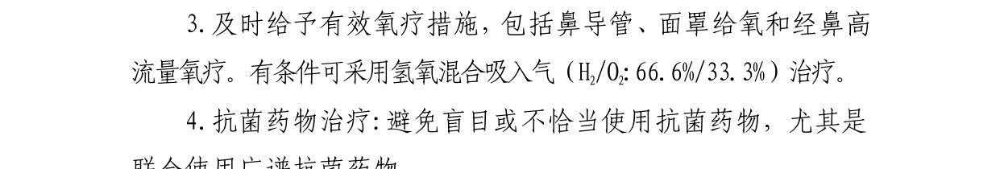
《新型冠状病毒肺炎诊疗方案（试行第八版）》氧疗条款原文：「3. 及时给予有效氧疗措施，包括鼻导管、面罩给氧和经鼻高流量氧疗。有条件可采用氢氧混合吸入气（H2/O2：66.6%/33.3%）治疗。」国家卫生健康委员会公开文件原文（2020-04）；A 级，截图可逐字复核
二、临床一手数据：公开可查的一项多中心研究
政策写入的同时，临床上确实留下了一批一手数据。代表性研究是钟南山团队牵头的多中心研究，
2020 年 6 月发表于《Journal of Thoracic Disease》。需要严格说清它的性质：
这是多中心、开放标签、非随机研究——原文明确写「因疫情紧迫未设随机」，故不能称其为 RCT。
90例
入组样本（筛 633 例）
治疗组 44 例 / 对照组 46 例，7 家医院参与
70.5%
治疗末病情严重度改善率
对照组 31.8%，P<0.001；第 2 日 20.5% vs 2.3%
3L/min
实际吸入流量
原文误印 6 L/min，勘误已更正为 3 L/min
为什么这一组数据重要。它是一次真实世界条件下、由国家级呼吸医学团队主导、
在疫情最紧迫时完成的多中心研究：样本不大、无法随机，但终点清晰、改善幅度明确，
且发表了可复现的统计结果。对产业的含义不在「疗效有多强」，而在
「这条路线的临床研究能力已经跑通过一次」——从入组、终点设计、统计分析到国际期刊发表，
整条链路被验证过。这比单篇论文更能说明一支团队能不能把证据做出来。
三、器械背景与必须声明的利益关联
疫情期间被用于临床的设备是潓美医疗（Shanghai Asclepius Meditec）的氢氧气雾化机 AMS-H-03，
持国械注准 20203080066（2020 年）与 20233081929（2023 年）两张三类医疗器械注册证。
上述多中心研究的致谢节明确写明：设备由该公司提供。因此引用这项研究时，
必须同时说明「设备供应方即研究设备的提供方」这一利益关联，否则就会把
「学术研究」读成「第三方独立验证」。本报告的处理是：把这条关联写在图注与正文里，
不隐藏、不淡化——这也是本报告对全篇企业自述材料的一贯处理方式。
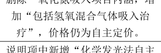
山东省医保局文件页：「……加『包括氢氧混合气体吸入治疗』，价格仍为自主定价。」——第七章「收费半开」的直接证据山东省医疗保障局公开文件；A 级
另需说明：省级层面可核实的是医疗服务价格立项而非诊疗方案——
2021 年 11 月吉林省医保局将「氢氧混合气体吸入疗法」列为新增医疗服务价格项目（吉医保联〔2021〕28 号），
山东省医保局将「氢氧混合气体吸入治疗」并入「一氧化氮吸入」项目内涵。这两件事与第七章「收费半开」
的判断是同一件事的不同证据面，不要与诊疗方案混为一谈。
学术建制化：一条大会主线、一个国家级平台、两代推手
把上述时间线再往里看一层，会发现这个行业并不是靠某一家企业或某一款产品长大的。
真正把「零散的研究兴趣」变成「一个有节律、有组织、有传承的行业」的，是三样东西：
一条连续十二届没有中断的年度学术主线、一个国家级交叉研究平台，以及两代院士级推手。
这三样东西，恰好解释了为什么中国能在全球氢医学文献里占到 22.3% 的份额。
一、十二届全国氢生物医学大会：一次没有中断的年度节律
大会自 2014 年首届至今已连续举办十二届，据公开资料检索，是中国氢分子生物医学领域迄今唯一的全国性年度学术会议。
它对产业的意义不在规模，而在连续性——2021 年疫情期间线下会议全部停摆，它转为线上照常举行
（在线 4 万人）；一个学术共同体能不能穿越外部冲击，看的就是这种年度节律断没断。
| 届次 | 时间 | 城市 | 规模或主题 |
|---|
| 第一届 | 2014-03 | 北京 | 分会成立大会，近 200 名专家〔B〕 |
| 第二届 | 2015-06 | 北京 | 240 余人，中美韩学者〔B〕 |
| 第三届 | 2016-09 | 泰安 | 泰山医学论坛，近 400 人〔B〕 |
| 第四届 | 2017-12 | 佛山 | 同期设氢医学健康产业分会〔B〕 |
| 第五届 | 2018-10 | 北京 | 并入「国际氢医学与生物学大会」〔A〕 |
| 第六届 | 2019-10 | 西安 | 16 场大会报告〔B〕 |
| 第七届 | 2021-11 | 线上 | 疫情期转线上，在线 4 万人〔A〕 |
| 第八届 | 2022-08 | 天津 | 36 场报告，线上 1.7 万人〔A〕 |
| 第九届 | 2023-11 | 海口 | 并入 CCGI 老龄产业大会〔B〕 |
| 第十届 | 2024-11 | 泰安 | 现场 300 余人，聚焦临床新证据〔A〕 |
| 第十一届 | 2025-11 | 广州 | 广医一院承办，钟南山音频致辞〔A〕 |
| 第十二届 | 2026-07 | 哈尔滨 | 同期完成第二届委员会换届〔A〕 |
来源与等级：第 5、7、8、10、11、12 届取自中国老年保健医学研究会官网通稿（第 12 届另见中国日报网转鲁网通稿），
为官方口径（A 级）；第 1–4、6、9 届目前仅有媒体转述，标注为 B 级，引用时请保留等级。
2014–2019 年间的第 1–6 届未见主办方官网存档，故不与 A 级数据并列。
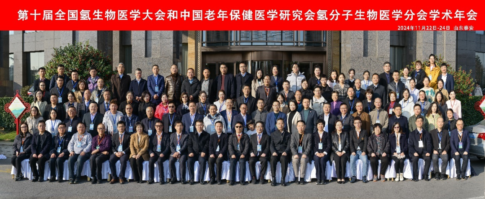
第十届全国氢生物医学大会（2024-11-22—24，山东泰安）会场背景板中国老年保健医学研究会官网通稿；A 级
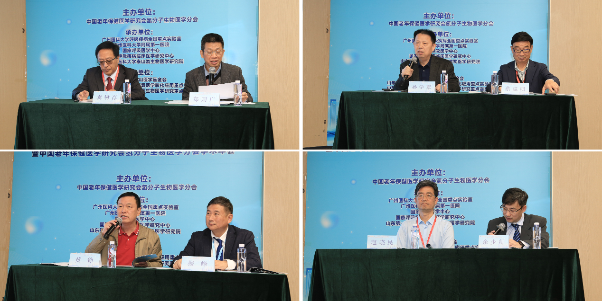
第十一届全国氢生物医学大会（2025-11，广州）会场背景板，可见主办与承办单位：分会、广州医科大学附属第一医院、国家呼吸医学中心等中国老年保健医学研究会官网通稿；A 级
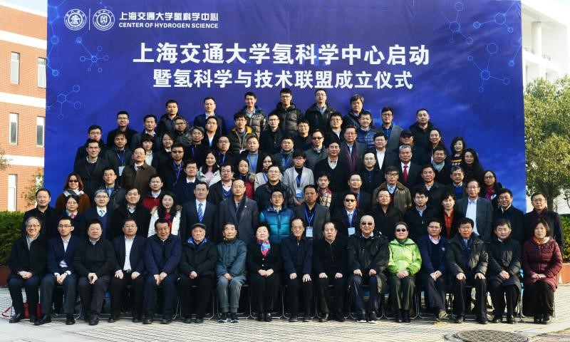
上海交通大学氢科学中心启动暨氢科学与技术联盟成立仪式（2019-01）上海交通大学新闻网；高校官方通稿图（编辑引用）
二、学术建制的三次转隶：分会从哪来、挂在哪
大会的主办权不是虚的，它跟着分会的挂靠关系走。这条线有三个可核查的节点：
2014 年 3 月 19 日，中国医促会氢分子生物医学专业委员会在北京成立，孙学军任首任主任委员，
这是国内该领域第一个全国性学术组织；2020 年 11 月 28–29 日，经中国老年保健医学研究会批准
（国保研字〔2020〕10 号），氢分子生物医学分会在泰安成立，秦树存当选第一届主任委员，
孙学军转任名誉主任委员，钟南山受聘首席顾问——学术建制自此由医促会转挂老年保健研究会；
2026 年 7 月，第十二届大会同期完成第二届委员会换届，秦树存连任。
读懂这条转隶线，才能读懂后面第七章讲的「适宜技术为什么能从山东推下去」——
学术组织的挂靠单位，决定了它能把技术推到哪一级卫生系统。
三、上海交通大学氢科学中心：一个国家级交叉平台
2018 年 6 月成立、2019 年 1 月正式启动的上海交通大学氢科学中心，是中国首家聚焦氢领域
关键共性科学问题的省部级交叉平台，由中国工程院院士丁文江任主任，设氢能源、氢医学、氢农学
三个方向。它对本行业的价值，是把「氢」从一个单点应用拉成一个横向学科：
2021 年何前军教授团队在《Nature Communications》发表近红外光催化肿瘤内原位产氢的
「氢气—空穴联合疗法」；2023 年 4 月，中国有色金属学会组织的成果评价会认定其
「镁基固态储运氢材料与技术」处于国际领先水平；2021 年 7 月，上海市氢科学技术研究会成立，
丁文江任会长。材料端的储运氢突破，最终会从能源侧溢出到健康侧——
这条溢出路径，是本报告第四章「不做整机、专注材料」判断的物理基础。
四、两代推手：把学术信用兑换成临床证据的人
行业里最稀缺的从来不是论文，而是愿意把学术信用押上去做临床的人。这一层有两代：
钟南山院士 · 临床端
自 2014 年起主持广州医科大学附属第一医院／广州呼吸疾病研究所的氢氧混合气临床研究；
2020 年 11 月受聘分会首席顾问；2021 年 5 月，其团队 108 例 COPD 急性加重患者的多中心
随机双盲对照试验发表于《Respiratory Research》，是氢医学进入高水平临床研究阶段的标志性成果。
边界声明：钟南山团队与相关企业之间是学术合作与临床研究中的设备使用方
关系，不构成任何形式的商业代言或疗效背书。
丁文江院士 · 材料端
中国工程院院士，长期从事镁合金与轻合金研究，在国际上率先突破镁基固态储氢材料批量制备技术；
2019 年 1 月以筹备负责人身份启动上海交大氢科学中心，后任中心主任与上海市氢科学重点实验室主任；
2021 年 7 月当选上海市氢科学技术研究会首任会长。
它意味着什么：把「氢」从能源载体做成可规模化制备的材料体系——
这正是后来「固态释氢耗材」路线能在物理上成立的前提。
在两代推手之外，还有一条不能省略的学术奠基线：孙学军教授 2008 年发表中国首篇氢医学 SCI 论文、
2014 年出任首个全国性学术组织首任主任委员、2020 年转任名誉主任委员；秦树存教授自 2020 年起
任分会主任委员并连续担任大会主席，推动临床试验走向高等级化。
本报告对这些人的处理原则是：只写可核查的具体动作与职务，不写评价性称谓——
徐克成教授的「氢气控癌」系列属于随访观察与专著出版，不构成随机对照证据，故在本报告中
只作为学术推广动作记录，不作为疗效依据。
历史影像证据
文字时间轴之外，以下三件实物对应三个阶段各自的关键节点——器械准入的实物、学术共同体的现场、材料路线的实验室。它们不是装饰插图，而是把"某年发生了什么"变成"当时做出来的东西长什么样"。
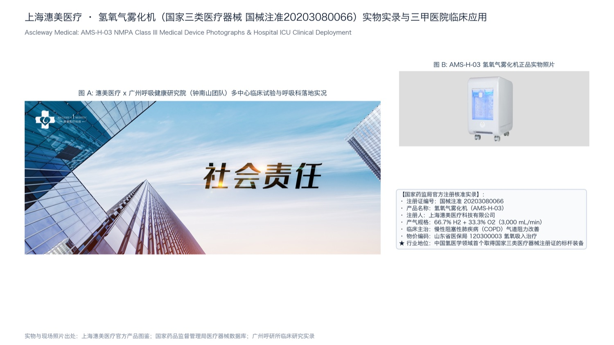
阶段二物证：氢氧气雾化机潓美氢氧气雾化机 AMS-H-03 产品图与企业形象图拼版；注册号为图上标注NMPA 注册信息；潓美医疗
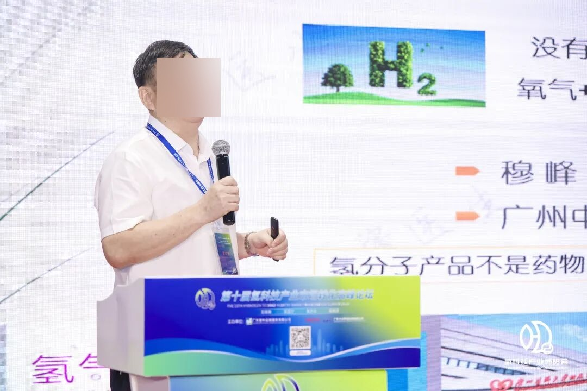
学术共同体现场论坛现场：一位男性讲者持麦克风演讲，背景屏幕投影 +H₂ 图形与「氢分子产品不是药物」本报告研究组现场实拍
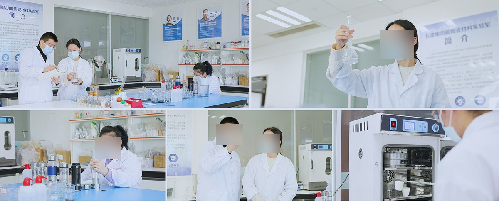
阶段三物证：固态储制氢实验室五联拼贴的实验室工作照，背景展板题为「石墨烯功能陶瓷材料实验室」木齐科技产业资料库
从历史看结构：三个路径依赖
把时间线补齐之后，前面几章要讲的许多"行业怪现象"，都能在历史里找到解释。以下三条，是本报告对全篇结构的统领性判断：
路径依赖一 · 证据长在"吸"上
2008 年孙学军的起点是富氢生理盐水注射，钟南山团队的主攻方向是氢氧混合吸入。中国氢研究的第一推动力来自严肃医疗给药途径，而非饮用。这决定了二十年后：39 项注册试验里 24 项是吸入，三类证长在呼吸机上，而富氢水只有 5 项且分散在 5 个适应症——单条证据都撑不起一张注册证。
路径依赖二 · 会销是被单价逼出来的
2015—2022 年行业只有电解设备一种形态，出厂成本 2,000–5,000 元、终端 1.5–2.6 万元，商超与电商难以自然动销，只能靠线下体验馆长期蓄客。高昂店租与讲师提成又把话术推向夸大——会销不是道德问题，是单价结构问题。2024 年央视曝光之所以成为分水岭，正是因为它击碎了支撑高单价的"疗效锚"。
路径依赖三 · 材料决定了谁能活下来
固态材料路线的价值不在"更先进"，而在它把产品从"必须卖贵的耐用品"变成"可以卖便宜的耗材"。当疗效锚崩塌、监管常态化之后，行业越来越依赖真复购才能活下去；而零电力、可微型化、可嵌入日化产线的材料路线，是少数能做出单价几十元、复购八次以上的商品。这一条历史线索，直接推出本报告后半部分的全部结论：制度只开了两道半门，能穿过去的产品形态，只能是耗材。
三阶段的结构对照：利润位置是如何迁移的
把三个阶段横向摊开对照，最值得注意的不是规模变化，而是利润位置的三次迁移：从"谁能发言"（学术）到"谁有证"（准入）再到"谁有材料"（供给）。每一轮迁移，都把上一轮的既得利益者变成新的成本项。
中国氢健康产业三阶段结构对照（1975—2026）
| 阶段 | 准入状态 | 产品形态 | 渠道结构 | 利润位置 | 标志性事件 |
|---|
Ⅰ 拓荒期
1975—2013 | 无任何合规路径；氢气不属于医疗器械、食品或药品任何一类 | 无商品化产品，仅实验室装置与自制电解水 | 无渠道，仅学术会议与科普讲座 | 学术信用：发表即资本，谁能发言谁获益 | 2007 太田成男《Nature Medicine》；2008 孙学军首篇国内研究 |
Ⅱ 器械期
2014—2020 | 三类证破冰（2020 首证）；但仅限 COPD 急性加重期一个适应症 | 重型电解设备：吸氢机、氢水机、氢氧气雾化机 | 线下体验馆、会销加盟；商超与电商难以自然动销 | 准入壁垒：证持有者与整机组装商的毛利差 | 2017 国家创新绿色通道；2020.02 首张三类证；2019《氢气控癌》发布 |
Ⅲ 重构期
2021—2026 | 准入不变、推广开（山东适宜技术）、收费半开（编码 120300003）、支付未开 | 固态氢耗材：片剂、滤芯、面膜、足贴，零电力可嵌入日化产线 | 公域电商、私域复购、B2B 代工与材料供应 | 材料供给：谁掌握释氢材料与合规证据，谁拿到耗材订单 | 2022 固态氢全产业链；2024.08 央视曝光；2025 GB/T 与医保编码；2026.06 团标发布 |
读表要点
三个阶段并非"后一个淘汰前一个"，而是叠加共存：今天既有拿着三类证的潓美，也有仍在做体验馆会销的整机商，还有给日化厂供货的材料商。真实的产业格局是三代同堂，而不是迭代替代——这也是为什么本报告后面分析竞争格局时，不能只用一个维度打分。
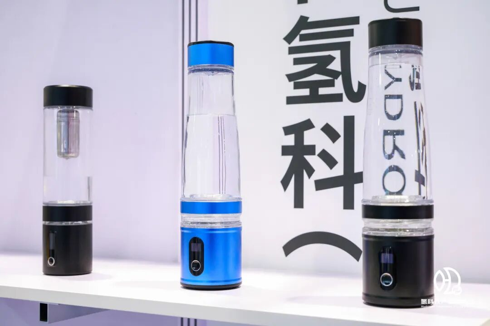
白色台面上并列三支氢水杯（黑／蓝／黑杯身），属消费类终端形态。（讲者面部已作模糊处理）（现场人员面部已作模糊处理）2026HST 第十届广州国际氢科技产业博览会现场（2026-05，本报告研究组实拍；B 级现场事实）（图内印字作「上海惠美医疗」，与注册主体「上海潓美医疗科技有限公司」存在用字差异，以 NMPA 注册库登记为准）
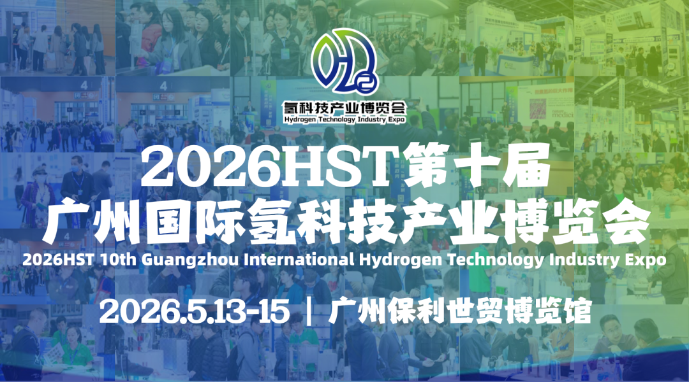
展会官方宣传海报：「2026HST 第十届」、2026.5.13-15、广州保利世贸博览馆2026HST 第十届广州国际氢科技产业博览会现场（2026-05，本报告研究组实拍；B 级现场事实）
五十一年的六个数字
历史给出的最大警示
五十一年的历史里，这个行业每一次跃升都不是靠"更会卖"，而是靠某个外部条件被打开：一篇论文、一张证、一次标准发布。反过来，每一次重创也都来自同一个方向——宣称越过证据边界。2024 年央视曝光后，行业用一年时间才把"疗效锚"的残余清除掉。所以本报告在给出所有战略建议之前，先把一句话放在这里：在这个行业里，合规不是成本，是少数会随时间增值、而不是被时间折旧的竞争资产。
历史纠正的三个流行误判
把时间线摊开之后，行业里流传最广的三句话，都可以被具体年份证伪。它们不是观点分歧，而是与史实直接冲突：
误判一："氢医学正在爆发式增长"
史实：全球四大期刊区间发文 997 → 1,013 → 1,155 → 1,278 篇，十九年累计仅增 28%，年化约 1.3%。中国份额从 14.0% 升至 32.9%，是在几乎不增长的池子里争份额，不是市场在长大。「爆发」式叙述与文献计量不相容。
误判二："拿到三类证就拿到了通行证"
史实：2020 年首证至今六年，全国仍只有潓美两张证，且获批适应症限定于 COPD 急性加重期。证打开的是"能不能进医院"，不是"能不能宣称治百病"。把准入当通行证，是 2024 年一批企业被处罚的共同起点。
误判三 · "会销会随着监管消失"
史实：2024 年 8 月央视曝光是行业公信力最低点，但会销并未消失。原因不在道德，而在单价结构——只要产品仍是 1.5～2.6 万元的耐用品，商超与电商就难以自然动销，线下体验馆是当时为数不多能消化该单价的场。会销真正开始退潮，不是因为监管，而是因为2022 年后出现了单价几十元的固态耗材：当产品可以便宜到在电商直接成交，会销的生存前提才被移除。这也解释了为什么本报告把"耗材化"视为全篇的核心变量，而不是一个产品品类的选择。
PROLOGUE RECAP · 序章收口
三条路径依赖，统领后面七章
序章不是背景介绍。这三条路径依赖，决定了后文每一个「行业怪现象」的归因方式。
- 路径依赖一 · 证据长在「吸」上。中国氢研究的第一推动力来自给药途径而非饮用——二十年后 39 项注册试验里 24 项是吸入，富氢水只有 5 项且散在 5 个适应症，单条证据都撑不起一张注册证。
- 路径依赖二 · 会销是被单价逼出来的。出厂 2,000–5,000 元、终端 1.5–2.6 万元，商超与电商难以自然动销，只能靠线下体验馆蓄客；高店租与讲师提成又把话术推向夸大。会销是单价结构问题，不是道德问题。
- 路径依赖三 · 材料决定谁能活下来。固态材料把产品从「必须卖贵的耐用品」变成「可以卖便宜的耗材」。制度只开了两道半门，能穿过去的形态只能是耗材。
利润位置的三次迁移：每一轮都把上一轮的既得利益者变成新的成本项
| 阶段 | 利润位置 | 获益者 | 被推高的成本项 |
|---|
| Ⅰ 拓荒期 | 学术信用 | 能发言的学者 | 内容生产成本 |
| Ⅱ 器械期 | 准入壁垒 | 持证企业与体验馆 | 库存、租金、提成 |
| Ⅲ 重构期 | 材料供给 | 材料商与代工体系 | 合规证据与价格战 |
- 追问：为什么把这一段放在报告最前面？
- 因为它给的是判定标准，不是结论。后文每一个「行业怪现象」都能用这三条路径依赖去检验——它究竟由证据结构决定、由单价结构决定，还是由材料供给决定？三种归因会导出完全不同的企业动作。
第一章 学术底层与临床循证
THE ACADEMIC BASE AND CLINICAL EVIDENCE
Evidence accumulates on the inhalation side: China contributes 1,143 papers, 22.3% of the global 5,120, yet 24 of the 39 valid registered trials are inhalation studies.
本章要点 · 学术底层与临床循证
- 份额而非总量 中国累计 1,143 篇（全球 5,120 篇的 22.3%），四期份额 14.0%→32.9% 跨度约十九年；但同期全球总量仅增 28%、年化约 1.3%。这是份额转移，不是市场长大。
- 证据长在"吸"上 39 项有效注册试验中 24 项为吸入途径（61.5%），富氢水仅 5 项且分散于 5 个适应症。单条富氢水证据难以支撑一张三类注册证——这是器械与耗材命运分岔的科学源头。
- 跨库数字不可互算 论文（发表）与注册（登记）之间隔着"做了没发""发了没注册""注册了没做"三道流失，任何"转化率"算式都是编的。本报告只并列，不相除。
- 学术信用的两种兑换 中国的学术信用主要在渠道端被消耗（专家站台、讲师背书）；欧洲的学术信用在准入与支付端被检验（CE/MDR、经济学评价）。同一批论文，两种命运。
1.1 历史溯源、机理假说与中国早期理论拓荒
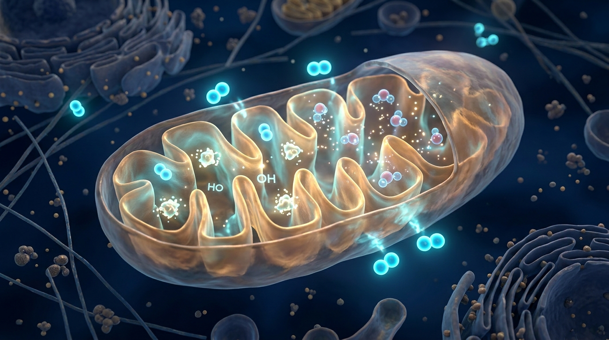
深蓝细胞环境中的线粒体剖面三维渲染：内部嵴结构发光，周围漂浮青色氢分子与 HO／OH 自由基标记。本报告视觉资产（机制示意，非病例影像）
回顾全球与中国氢分子生物医学（Hydrogen Biomedicine）的演进脉络，它既是一门遵循严谨现代循证范式的青年显学，同时也在中国大地上经历了一段极富本土启蒙色彩的科学探索历程。
1.1.1 理论先行与民间拓荒：杜元伟老师的早期探索与本土启蒙
在现代国际学术界，2007 年日本医科大学太田成男（Shigeo Ohta）在《Nature Medicine》发表氢气选择性抗氧化论文，通常被视作全球现代氢医学的原点。但中国有一条更早的地方线索：山东淄博的生物学教师杜元伟与其夫人魏翠贵，在中学实验室的条件下，于 1990 年代中期就公开提出"氢气可清除过氧化物"的判断。这条线索长期停留在地方报刊与行业内部资料里，直到近年才被系统整理。
史料说明 · 这段材料为什么值得记录
上述事实出自一本地方性资料汇编《世界氢医学的发现与发展》（2023 年成书，中英双语书名）。该书收录钟南山、汤钊猷、王振义、王忠诚、倪嘉缵五位院士的题词与评语，以及徐克成、何前军、马雪梅、刘健康、张清等学者的专文评述。它不属于学术出版物，流通范围很小，如今已难寻得——正因如此，它是记录中国氢医学"民间起点"的一手史料，而不是又一篇可检索的论文。
需要说明的是：杜元伟没有任何学术头衔，也不是主流学者。他的价值不在于职称，而在于时间点——在中国还没有人系统谈论氢与人体关系的时候，他已经在中学实验室里写下了第一批文本。
可核的时间线与文本（据上述资料汇编所收序言与作者介绍转述，B 级）：
- 1996 年 3 月 15 日：在《淄博科技报》发表 3 篇短文（与魏翠贵合著），提出氢气具有清除游离基的抗氧化作用。这是目前可查到的国内最早公开表述之一。
- 1997 年：提出"氢气是人体元气真气"的假说，是他三个阶段研究中最早的一步。
- 1999 年：在母校《山东师范大学学报》第 2 期发表《科学的新课题——氢气在生命活动中的意义作用初探》。文中提出：人体在新陈代谢中会积累过氧化物，而 H2 是强还原剂，可自然消除过氧化物且无副作用，从而维持"氧化还原稳态"——这就是后来被反复引述的"氢气抗氧化假说"。该文比 2007 年太田成男的论文早约八年。
- 2007 年与 2013 年：用同位素标记法测定小鼠体液与不同组织中的放射性计数（CPM），从实验角度描述氢气进入体内后的广泛分布——这是他研究中少见的定量实验部分。
- 氚（3H）示踪：用氢的同位素追踪氢在动物体内的转运，成果收录于首届中国氢医学会论文集。
- 2019 年：在西安第六届氢医学会议上提出"氢的生物加成理论"假说，主张其与抗氧化并列构成两条底层逻辑。
- 与中医的对接：把氢气与传统"元气／真气"及经络穴位的气循环相联系。这一部分属理论假说，学界尚未形成共识。
学界如何评价（均引自该书序言，B 级转述，非本报告独立核验）：徐克成教授称其为"最早提出氢气抗氧化、抗炎症的生物学家"；何前军教授评价 1999 年那篇论文"比日本太田成男先生早八年"，同时指出"氢气的体内代谢行为还有待进一步深入研究"；刘健康教授认为杜元伟的工作"在氢医学发展史上代表中国学者发出了中国声音"；马雪梅研究员则把他的研究梳理为"三个阶段"，并评价其阐述氢气抗氧化、清除自由基的功能"比日本太田成男的研究早了多年"。
边界必须写清楚：上述成果主要形态是理论思辨、地方报刊短文与民间实验，未经同行评议的机制验证与大样本临床检验，因此本报告把它定位为"中国本土早期探索的代表性个案"，不纳入疗效证据链。它真正说明的是：在中国，对氢生物学价值的追问早于国际主流叙事，但把这些追问转成可被国际期刊接受的证据，要靠 2008 年之后孙学军、秦树存等学者把研究纳入国家级科研体系。
本报告保留这一节，不是为了给个人立传，而是因为产业史的写作不能只记录成功者：一个没有经费、没有平台、没有头衔的中学教师，用三十年时间反复提出同一个问题，这本身就是中国氢健康产业起步阶段的真实切片——它既说明了民间对氢的想象有多早，也说明了这种想象离开实验条件与制度支持后，能走多远。
1.1.2 现代氢分子生物医学的作用机理与学术共识
现代氢医学研究自 2007 年日本医科大学太田成男教授在《自然医学》发表论文以来，经历了近二十年的系统性基础与临床探索。学术界对氢气（分子氢，H2）作为医用气体与健康干预介质的生物学机制，已形成相对清晰的核心共识：
- 选择性抗氧化（Selective Antioxidant）：氢分子并非非特异性地中和所有自由基，而是特异性清除具有高毒性、高破坏力的羟基自由基（·OH）和过氧亚硝基阴离子（ONOO-），同时完整保留超氧阴离子（O2-·）和过氧化氢（H2O2）等维持人体正常生理免疫与细胞信号转导所必需的活性氧物种（ROS）。这种“不破坏机体生理氧化还原平衡”的温和选择性，构成了其极高生物安全性的理论基石。
- 抗炎与细胞保护信号通路调控：氢分子分子量仅为 2 Da，范德华半径仅为 0.12 nm，呈电中性非极性特征，能够以极高的扩散系数自由穿透细胞膜、线粒体双层膜与血脑屏障。氢分子能直接下调促炎细胞因子（TNF-α、IL-1β、IL-6）转录，激活细胞内源性抗氧化保护中枢——核因子 E2 相关因子 2（Nrf2/ARE 通路），诱导血红素加氧酶-1（HO-1）、超氧化物歧化酶（SOD）、谷胱甘肽过氧化物酶（GPx）等内源抗氧化酶表达。
- 线粒体功能保护与抗凋亡：通过减轻线粒体内膜呼吸链复合物的氧化损伤，稳定线粒体跨膜电位（ΔΨm），抑制线粒体通透性转换孔（mPTP）病理性过度开放，阻断细胞色素 C（Cyt-c）释放，从而阻断细胞氧化应激级联凋亡。
2007–2025 全球氢分子生物医学文献发表与累积趋势（PubMed / Web of Science 核心合集计量分析与麦肯锡产业模型）。
全景展现了自 2007 年日本医科大学太田成男教授在《Nature Medicine》发表开创性论文以来，全球氢医学文献从年均十余篇稳步增长至年均 350+ 篇，累计发表量达 3,468 篇，形成以神经保护、呼吸重症、代谢综合征、肿瘤放化疗减毒及皮肤创面修复为核心的五大临床科研支柱。
📊 读图指引- 看什么：横轴为年份，纵轴为该年新增发文量；曲线形态比绝对值更重要。
- 关键区别：「累计 3,468 篇」与「全时段 5,120 篇」是两个不同检索式的产物——前者限核心词、后者含更宽主题词，不可混用。
- 易错点：PubMed 逐年计数不可相加得区间值（单篇可有多个出版日期，实测 2017–2021 逐年相加比区间检索多 86 条）。
💡 关键洞察- 判断一：这是稳步累积领域，不是爆发领域——全球四期发文 997 → 1,278，十九年 +28%，年化约 1.3%。
- 判断二：中国是份额增长（14.0% → 32.9%，跨度约十九年），份额是从别处转移来的，不是新长出来的市场。
- 判断三：转折点在 2017–2021 期：中国 29.6% 首次追平并略超欧洲 29.4%。
在给药方式上，氢分子的物理化学特性（常温常压水体物理溶解饱和极限约为 1.6 ppm / 1,600 ppb）直接塑造了不同的摄入与应用途径：
- 吸入法（Inhalation）：通过吸入含氢混合气体（2%~4% 浓度或 66.7% H2 + 33.3% O2 混合气），使分子氢经肺泡毛细血管快速入血，迅速提升全身组织（尤其是大脑、心肺等高血流灌注器官）的氢分压。
- 饮水法（Hydrogen-Rich Water, HRW）：将高浓度富氢水经胃肠道饮入，分子氢穿过胃肠黏膜扩散，并已被证实可通过刺激胃黏膜神经内分泌细胞分泌胃促生长素（Ghrelin），进而发挥中枢神经保护及全身代谢调节作用。
- 透皮吸收与浸润法（Bathing & Topical Application）：利用富氢水浴、氢气眼贴、敷贴或氢水雾化喷雾，针对局部皮肤、关节软组织及眼部黏膜实施抗氧化微循环干预。
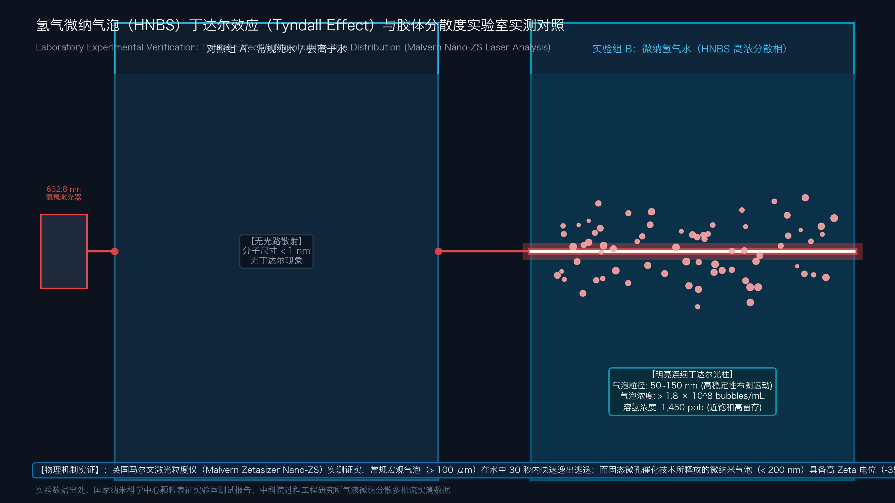
氢气微纳气泡（HNBS）丁达尔效应（Tyndall Effect）与气液高饱和分散实证。高能激光束穿透富氢溶液呈现出一条致密且连续的微纳米气泡散射光路，直观证实了超细微纳米级氢气泡在液相中的布朗运动与高稳定性分散状态，颠覆了传统粗大气泡快速溢出逃逸的物理局限。实验室实拍（氢微纳气泡丁达尔效应）；本报告研究组影像档案
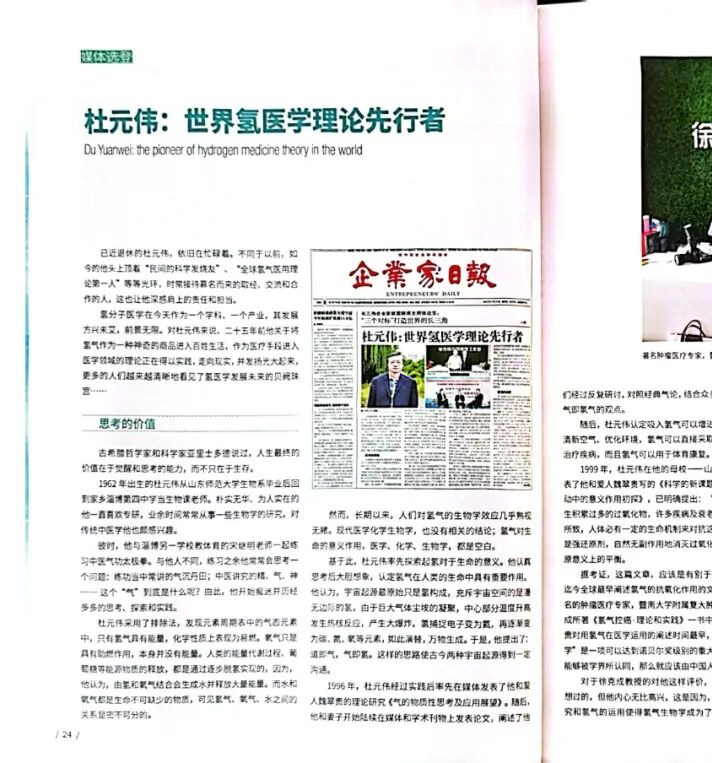
杂志内页《杜元伟：世界氢医学理论先行者》，嵌《企业家日报》同题剪报《企业日报》版面影印，收录于《世界氢医学的发现与发展》（2023）；本报告作者私人收藏，B 级史料
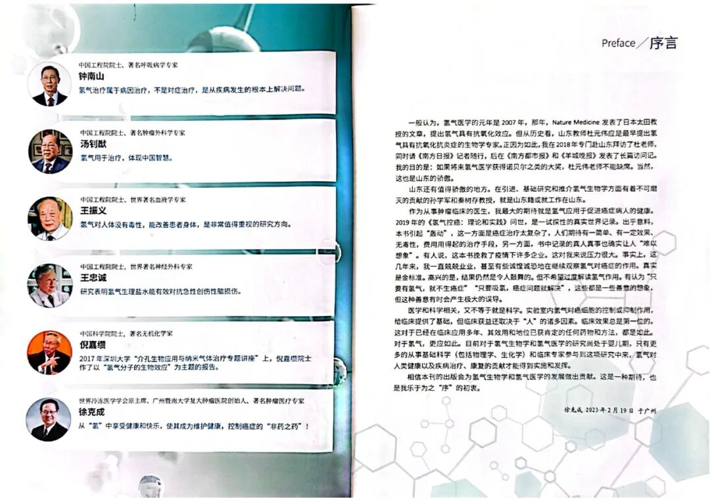
该书序言与题词页影印：左侧为钟南山、汤钊猷、王振义、王忠诚、倪嘉缵五位院士的题词及徐克成评语。《世界氢医学的发现与发展》序言页影印（2023）；本报告作者私人收藏，B 级史料
1.2 全球文献计量与中国格局：稳步累积而非断崖爆发
针对国际医学文献核心数据库 PubMed 进行可复现的 E-utilities 系统性检索，能够清晰透视过去二十年全球与中国氢医学研究的真实产出曲线。
经系统检索与严格去重，全球全时段累计收录氢分子生物医学英文学术论文共计 5,120 篇，其中中国学者署名发表的论文达 1,143 篇，占全球总量的 22.3%。按五个五年期区间进行纵向追溯，得到下表所示的四期演进全景：
| 观察周期 |
全球发文总量 |
中国发文量 |
中国学者全球份额 |
阶段特征与学术动向 |
| 第一期（2007–2011） |
997 篇 |
140 篇 |
14.0% |
日本引领机理突破，中国第二军医大学等团队率先跟进建立模型 |
| 第二期（2012–2016） |
1,013 篇 |
250 篇 |
24.7% |
中国产学研多中心铺开，富氢生理盐水及动物疾病模型研究大爆发 |
| 第三期（2017–2021） |
1,155 篇 |
342 篇 |
29.6% |
中国份额首次达到约 30%，单期发文量与欧洲（340 篇）首次打平 |
| 第四期（2022–2026） |
1,278 篇 |
420 篇 |
32.9% |
中国成为全球单一最大论文贡献国，临床转化研究与微细气泡结合加速 |
对上述文献计量数据，咨询团队得出三条关键行业定论：
第一，全球氢医学不是“爆发式领域”，而是“稳步累积领域”。 全球发文总量在过去近十九年里仅增长了 28.2%（从 997 篇缓慢上升至 1,278 篇），年复合增长率仅约为 1.3%。市面上部分商业机构宣称“全球氢科研正迎来爆发式井喷”，在学术计量事实面前不攻自破。
第二，中国是“存量份额向中国集中”，而非全球大盘激增。 中国发文量实现了 3.0 倍的增长，显著快于全球大盘，本质上是中国科研团队凭借密集的科研体量与疾病模型资源，在该领域内部吸纳了更多份额。
第三，转折点发生在 2017–2021 年。 在该窗口期，中国学者的国际发文份额达到 29.6%，历史性地超越了欧洲整体（29.4%），奠定了全球氢生物医学科研产出第一大国的地位。
1.3 临床试验注册图谱（WHO ICTRP 深度核验）
学术论文反映基础科研广度，而正式注册的临床试验（Clinical Trials）才是衡量产业临床转化深度的硬标尺。
团队通过世界卫生组织国际临床试验注册平台（WHO ICTRP，聚合了中国临床试验注册中心 ChiCTR 与美国 ClinicalTrials.gov）进行全字段高级检索。在命中检索词的 53 项中国试验中，经过严谨的医学筛洗，排除了 14 项混入的化学名称误命中（包括 3 项过氧化氢护理液、3 项硫酸氢氯吡格雷等无关药物试验，误命中率达 26.4%），最终锁定了 39 项真实有效的氢分子干预临床试验。
| 给药干预途径 |
试验数量 |
占比 |
典型研究适应症与场景 |
| 吸入类（Inhalation） |
24 项 |
61.5% |
慢性阻塞性肺疾病（COPD）、哮喘、新型冠状病毒肺部损伤、急性脑梗死、重症呼吸衰竭 |
| 富氢水饮用（Drinking） |
5 项 |
12.8% |
2 型糖尿病代谢改善、非酒精性脂肪肝、精子活力改善、运动后疲劳消除、焦虑样情绪缓解 |
| 含氢溶液与透皮（Topical/Solution） |
3 项 |
7.7% |
富氢腹膜透析液、肾移植边缘供肾灌注保护、银屑病富氢水浸浴 |
| 未注明给药方式 |
7 项 |
18.0% |
脓毒症多器官保护、重症感染后代谢干预等探索性试验 |
从临床注册数据可提炼出深层战略矛盾：
“证据长在吸入上，消费长在饮水上”的产业结构性错位：临床循证资源压倒性地向“吸入设备”倾斜（占比超六成），这也是上海潓美能够拿下第三类医疗器械注册证的科学前提；然而在商业消费端，高达 80% 以上的大众市场需求却存在于便携饮水、日常美妆及个护快消场景。富氢水的人体临床仅有区区 5 项，极度分散在代谢、运动等非特异性方向。这直接导致下游消费品企业“无法拿出与吸入同等密度的权威临床背书”，成为阻碍氢健康产品走向主流医疗渠道的隐形阻力。
1.4 高等级临床证据池与三大给药途径代表性成果
虽然当前世卫组织注册的临床试验在数量上呈现“吸入偏重”的结构性特征，但全球与中国医学界在三大核心给药途径上，均已沉淀出具有国际公信力的高等级循证成果：
1.4.1 气体吸入途径：危重呼吸与慢阻肺多中心平行对照（A 级临床）
- 代表性成果：由国家呼吸医学中心、广州呼吸健康研究院钟南山院士团队领衔开展的高浓度氢氧混合吸入（66.7% H2 ＋ 33.3% O2）针对慢性阻塞性肺疾病（COPD）急性加重期及重症哮喘的多中心随机双盲平行对照 RCT 临床试验。
- 临床终点价值：证实氢氧混合气能显著降低患者气道流阻（气道黏液纤毛清除率提升），快速缓解呼吸困难指数，显著缩短抗生素使用周期及住院天数。该项高级别证据直接推动了国家卫健委诊疗方案的纳入，并支撑了当时国内唯一一款第三类创新医疗器械的合规获批。
1.4.2 口服饮水途径：糖脂代谢综合征与抗动脉粥样硬化修复（A 级临床）
- 代表性成果：日本 Kajiyama 等（Nutrition Research 2008, PMID: 19083400）开展的 2 型糖尿病及糖耐量异常随机双盲交叉对照试验，以及山东第一医科大学秦树存团队开展的高脂血症及代谢综合征人体临床试验。
- 临床终点价值：系统证实每日定量饮用高浓度富氢水（900~1,000 ml/d），不仅能显著降低血清丙二醛（MDA）与氧化修饰低密度脂蛋白（ox-LDL），更能特异性修复高密度脂蛋白（HDL）的抗炎与胆固醇逆向转运功能，为生活方式慢病干预建立了循证基准。
1.4.3 透皮外用与微环境灌注途径：从器官保存到难愈性创面再生（前沿硬核成果）
- 代表性成果：
- 实体器官常温保存灌注液保护：在肾移植与心肌缺血模型中，含氢器官保存液展现出对微血管内皮细胞线粒体膜电位的显著维持作用，大幅降低冷缺血再灌注后的早期无功能率（DGF）；
- 腹膜透析液微环境抗纤维化保护：利用富氢透析液抑制腹膜间皮细胞间质转化（EMT），减轻终末期肾病患者长期透析导致的腹膜超滤衰竭；
- 纳米生物医用材料原位产氢创面修复：上海交通大学材料学院与上海交大氢科学中心何前军教授团队在国际顶级综合性期刊 Nature Communications（2022, 13: 5611, PMID: 36167814）发表突破性研究，利用仿生纳米光催化材料实现原位局部高活性产氢与葡萄糖耗竭，成功促使难愈性糖尿病创面实现血管快速新生与组织无痕修复。
三大给药途径在严肃医学杂志上的多点开花，从源头上粉碎了“氢气无用论”或“单一玄学论”，为全行业下游产品矩阵提供了清晰可查的科学坐标系。
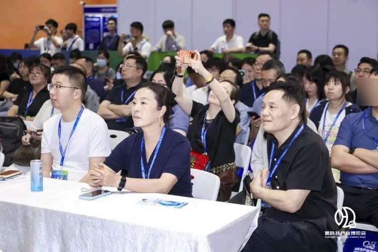
观众席近景：前排长桌与满座听众，画面未见舞台与投影（画面人物面部已作模糊处理）2026HST 第十届广州国际氢科技产业博览会现场（2026-05，本报告研究组实拍；B 级现场事实）
1.5 核心科研团队、学术流派与权威组织图谱
1,143篇
中国氢分子生物医学论文累计
占全球 5,120 篇的 22.3%；四期份额 14.0%→32.9%
2014年
首个全国性学术组织成立
3 月 19 日，中国医促会氢分子生物医学专业委员会挂牌
2届
国家级分会委员会完成换届
2026 年 7 月哈尔滨换届大会，秦树存连任第二届主任委员
2任
国际学会（ISHMB）会长交接
秦树存（首任）→ 何前军（第二任）；太田成男任名誉会长
中国氢分子生物医学能够取得全球超过 32% 的学术文献份额，并推动临床与产业转化，离不开国内权威学者领衔的核心科研团队、学术流派以及国家级/国际性行业组织的开创性建设。
尤为值得铭记的是，以孙学军教授为代表的学者，不仅在中国发表了首篇氢医学 SCI 论文并奠定了基础科研网络，更长达十五年如一日坚守在公众科学普及第一线（创办“氢思语”公益科普平台、编著多部科普专著），以严谨求实的态度破除民间迷信神化，成为全行业最坚实的科学压舱石；而著名消化病与肿瘤微创专家徐克成教授，则以医者仁心开辟了氢气在晚期癌症康复与姑息治疗中的“真实世界研究（RWS）”，出版《氢气控癌》专著，在改善重症患者生存质量与缓解癌因性疲乏方面倾注了巨大心血。与此同时，秦树存教授、何前军教授、马雪梅教授、周培教授等学者在代谢循证、纳米靶向医学、氢分子传感器、现代农业氢科学等领域构建起大规模跨学科团队，共同撑起了中国氢医学的学术大厦：
1.5.1 中国氢分子生物医学七大核心学术流派与领军团队全景对比
| 学术流派 / 核心团队 |
学科底座与代表学者 |
核心研究范式与主攻方向 |
代表性成果与标志事件 |
行业生态位与战略影响 |
| 1. 基础机理、学术奠基与大众科普派 |
海军军医大学（原第二军医大学）
孙学军教授团队 |
潜水医学、高压氧医学与分子生物学；聚焦氢分子选择性抗氧化、抗凋亡与内源抗氧化信号网络（Nrf2/HO-1） |
2008 年发表中国首篇氢医学 SCI 论文；主编《氢分子生物学》《氢气医学》奠基专著；创办“氢思语”长年高频公益科普；推动成立中国医促会氢医学分会 |
中国氢生物医学的“学术启蒙者、网络组织者与科学传播灯塔”，奠定全国跨学科基础研究与大众科学认知底座 |
| 2. 代谢心血管与富氢水循证派 |
山东第一医科大学 / 泰山氢生物医学研究院
秦树存教授团队 |
生理病理学与动脉粥样硬化；深耕富氢水对脂质过氧化、代谢综合征及高密度脂蛋白（HDL）抗动脉粥样硬化功能的修复 |
牵头多项代谢疾病人体 RCT 临床；出任国际氢医学与生物学会（ISHMB）首任会长；主导创建泰山氢生物医学研究院；荣获国际氢分子研究杰出领导力奖 |
建立了富氢水在慢病管理、心血管代谢干预与国际标准接轨领域最系统权威的循证数据库 |
| 3. 严肃临床与危重呼吸医疗派 |
国家呼吸医学中心 / 广州呼吸健康研究院
钟南山院士团队 |
呼吸内科与危重症医学；聚焦高浓度氢氧混合吸入（66.7% H2 + 33.3% O2）对气道黏液纤毛清除及肺泡炎性损伤修复 |
主导慢阻肺（COPD）多中心临床研究；推动氢氧混合气纳入国家卫健委诊疗方案及截至本报告检索时点国内唯一的第三类医疗器械准入 |
突破严肃医疗准入“天花板”，确立了氢气作为合规医用辅助气体在三甲医院急危重症的法定地位 |
| 4. 轻合金储氢、纳米气体医学与农业氢科学派 |
上海交通大学氢科学中心
丁文江院士、何前军教授、周培教授团队 |
先进轻合金工程、纳米气体生物医用材料与现代农业氢科学三足鼎立：丁文江院士主攻高纯镁基材料（HydroMg）储氢与医用；何前军教授（国家杰青、全球高被引科学家）主攻纳米气体医学、生物靶点、生物探针与光催化产氢修复；周培教授领衔现代农业氢生物学与水产生态养殖 |
成立上海交大校级氢科学中心；何前军教授创制全球首例氢分子生物探针并当选 ISHMB 第二任会长；周培教授开创富氢水生态养鱼养虾无抗养殖与设施农业高产示范；携手木齐科技联合攻关新型固态硅氢肥料 |
代表了“从高端轻合金工程与前沿纳米靶向医学，向生命健康与现代种养业全方位外延”的国家级顶尖高校跨学科交叉航空母舰 |
| 5. 氢分子传感器、细胞代谢与再生医学派 |
北京工业大学生命科学学院
马雪梅教授团队 |
细胞生物学、受体靶点调控与再生医学；主攻氢气特异性分子传感器机制、细胞能量重编程（NADP/NADPH）、干细胞激活、创面无痕愈合与皮肤组织再生 |
率先提出“氢气再生医学”与“氢代谢体质”理论；发现特定通道复合体（TRPC4 等）作为氢气分子传感器；共建“北工大-华氢生物未来健康研究院”；打造“氢国氢城”前沿转化管线；深度参与 GB/T 46918.2-2025 国标研制 |
构建了“前沿分子机制发现-国家级成果转化-创伤再生与氢医美”的高校硬科技产业化范式，拥有庞大跨学科梯队与深远行业话语权 |
| 6. 肿瘤康复、姑息医学与真实世界派 |
暨南大学附属复大肿瘤医院
徐克成教授团队 |
消化肿瘤内科与肿瘤微创治疗；主攻吸氢对中晚期癌症患者生活质量、疼痛缓解、免疫功能重塑及癌因性疲乏（CRF）的临床改善 |
出版《氢气控癌：理论和实践》划时代专著；开展数百例中晚期肿瘤吸氢前瞻性真实世界随访研究（RWS）；推动氢气辅助控癌的国际学术交流 |
开创了“真实世界研究（RWS）”在民间慢病与晚期肿瘤康复维度的临床观察范式，以大爱医风推动氢气在重症姑息支持中的普及 |
| 7. 无机微孔固态氢与全链产业赋能派 |
中国科学院理化技术研究所（黄勇团队）联合木齐科技（MQ TECH） |
先进无机非金属材料学与矿物催化工程；主攻微孔晶格储放氢技术、常温常压安全水解与防潮钝化工艺；聘请民间拓荒学者杜元伟老师等担任技术顾问 |
累计布局 37 项专利（15 发明专利）；首创加氢中药（固态释氢材料透皮增效体系）、硅基富氢肥料与“吃喝洗护泡”五维全场景矩阵 |
成为全国“全产业链覆盖最完整（基础原料-快消-中医-现代农业）”的底层研发与平台赋能核心 |
1.5.2 全球最高学术组织（ISHMB）发起历程与新一届领导架构
在国际学术网络构建方面，全球分子氢生物医学领域最高层级、非营利性国际学术组织——国际氢医学与生物学会（International Society for Hydrogen Medicine and Biology, ISHMB）的发展历程，深刻折射出中国学者在全球学术治理体系中主导地位的跃迁：
- 学会创立与第一届领导架构： 学会由国际氢医学奠基人、日本医科大学太田成男（Shigeo Ohta）教授担任名誉会长；中国氢生物医学领军学者、山东第一医科大学秦树存教授众望所归当选为第一任会长（首任理事长/President）；美国分子氢研究所（Molecular Hydrogen Institute, MHI）创始人兼执行主任泰勒·勒巴隆（Tyler W. LeBaron）作为核心联合发起人出任副秘书长与国际协调人。学会汇聚了中、美、日、欧等多国学者，定期举办国际氢医学与生物学大会，制定国际学术交流准则，确立了中国在国际氢生物学界的早期制度话语权。
- 第二届理事会换届与学术代际交接： 在最新一届理事会选举中，国家杰出青年科学基金获得者、欧盟玛丽·居里学者、全球高被引科学家、上海交通大学材料科学与工程学院教授及上海交大氢科学中心学术带头人何前军教授，正式当选为第二任会长（President of the Second Council），秦树存教授转任首任名誉会长。
- 换届背后的学术演进深意： ISHMB 领导层的顺利交接不仅是学术代际传承的体现，更标志着全球氢生物医学的研究范式正在经历一场深刻的“战略前沿跨越”——从秦树存教授团队早期聚焦的“传统脂质代谢、动脉粥样硬化与生理病理学”，加速跃迁至何前军教授团队所代表的“先进纳米生物医用材料、氢分子生物靶点机制、纳米生物探针、光催化局部产氢与衰老微环境重塑”。学术领导权向交大跨学科团队的集中，进一步强化了中国在下一代纳米氢医学与智能递送材料领域的全球领跑地位。
1.5.3 权威学术组织、全国换届选举与年度氢医学大会
围绕上述顶尖领军学者，中国氢分子生物医学在过去十年间完成了从早期单点探索到国家一级学会旗下专业分会与高规格年度学术盛会的系统性制度演进：
- 国家级学术组织的演进与转隶承接（从中国医促会到中国老年保健医学研究会）：
- 早期建制（2014 年）：2014 年 3 月 19 日，在中国医疗保健国际交流促进会（中国医促会）主管下，孙学军教授牵头在北京正式成立了中国医促会氢分子生物医学专业委员会（后改称分会），孙学军教授担任首任主任委员。这是我国氢气生物医学研究领域的第一个全国性学术组织，开启了行业建制化学术交流的先河。
- 战略转隶与深化发展（2020 年）：随着分子氢在老龄退行性病变、慢性病防治、代谢综合征及居家健康干预领域的深入突破，为了更精准地对接国家积极应对人口老龄化战略与老年健康服务体系，由山东第一医科大学、解放军总医院、海军军医大学等多家顶尖科研院所联合发起，经国家民政部登记、国家卫健委业务主管的国家一级学会——中国老年保健医学研究会正式批准（国保研字〔2020〕10 号），于 2020 年 11 月在山东泰安正式成立了中国老年保健医学研究会氢分子生物医学分会。原医促会氢医学分会的核心专家网络与学术职能整体转隶并迁建承接至该分会，孙学军教授受聘为名誉主任委员，钟南山院士受聘为首席顾问，秦树存教授出任首任主任委员，分会秘书处常设于山东第一医科大学。
- 最新换届选举事实（2026 年 7 月·哈尔滨换届大会）： 在第一届委员会任期届满后，2026 年 7 月，分会于哈尔滨举行的学术年会期间圆满召开了第二届委员会换届选举大会：
- 秦树存教授高票连任第二届委员会主任委员；
- 北京工业大学马雪梅教授、上海交通大学何前军教授、解放军总医院程友琴教授、海军军医大学康志敏教授等权威专家当选或连任副主任委员；
- 委员会吸纳了全国跨学科顶尖临床医学家、生命科学家、材料工程专家以及实体产业链领军代表（包括独立研究员、木齐科技 CEO Martin Chen 等产业先锋作为委员会委员深度参与），形成了贯通“基础理论-临床循证-材料转化-产业实体”的最高学术共同体。
- 行业最权威学术盛会：每年一届的“全国氢生物医学大会”： 作为中国乃至全球氢医学学术领域历史最悠久、规格最高、影响力最深远的标志性学术盛会，由该分会主导主办的“全国氢生物医学大会”（截至 2026 年已连续成功举办十二届），被公认为全行业的“学术奥林匹克”与战略风向标。大会每届均汇集海内外数百位院士、三甲医院临床科室带头人、高校学者及合规产业代表，集中发布全球最新临床试验成果、审议行业团体标准、研讨监管合规路径并搭建高质量产学研对接桥梁，代表了中国氢医学学术共同体的最高公信力水平。
- 区域高校与国家级跨学科协同平台：
- 上海交通大学氢科学中心：由中国工程院丁文江院士领衔统领、汇聚国家级高端人才的校级跨学科交叉前沿中心。其中，国家杰出青年科学基金获得者、全球高被引科学家何前军教授多年前即作为核心学术带头人全职加盟丁文江院士团队，执教于上海交大材料科学与工程学院，并出任氢科学中心学术带头人（领衔先进纳米生物医用材料、纳米气体医学、生物靶点机制与全球首例分子探针研制，带领大规模跨学科科研团队在 Nature Communications 等国际顶级期刊发表多项奠基性成果，并当选为 ISHMB 第二任会长）；周培教授主管现代农业氢生物学与水产生态养殖方向。中心集聚材料学院、农业与生物学院、生命科学学院与医学院多方力量，成为中国高校探索“氢能源与氢生命健康/现代生态农业双轮驱动”的战略重镇。周培教授团队在富氢水作物灌溉、现代水产养殖（氢水养鱼养虾）等领域取得多项国家级示范成果；目前正携手木齐科技等产业先锋开展新型富氢农业肥料、固态微孔土壤调理剂以及现代水产生态调水介质的产学研联合攻关。
- 北京工业大学氢分子研究中心 & 北工大-华氢生物未来健康研究院：马雪梅教授领衔的大规模跨学科高地，专注于创伤再生医学、高灵敏分子传感器与氢医美前沿转化，构成了北方地区产学研深度融合的核心极。
- 泰安氢医学核心阵地（泰山氢生物医学研究院 & 泰安市中心医院）：依托山东第一医科大学与泰山深厚的学术根基，泰安已成为全国著名的“氢医学循证高地”。泰安市中心医院开展的“氢氧气吸入在基层慢阻肺防治中的应用”被山东省卫健委正式列入适宜卫生技术推广目录，下沉至村卫生室与社区卫生服务站。
1.6 学术信用生成机制与中外分工
在中国氢健康产业的生态闭环中，学术权威扮演着极其微妙的商业角色。国内围绕氢分子生物医学已形成两大核心学术阵地：中国老年保健医学研究会氢分子生物医学分会（承接原中国医促会氢医学分会全国网络，主办每年一届全国氢生物医学大会）、国际氢医学与生物学会（ISHMB）。以海军军医大学孙学军教授、山东第一医科大学秦树存教授、上海交通大学何前军教授、北京工业大学马雪梅教授、暨南大学徐克成教授等为代表的核心学者群体，长期在行业论坛与学术期刊发声。
| 评估维度 |
中国氢健康学术生态 |
欧洲氢健康学术生态 |
| 知识分工定位 |
知识的“高强度生产者”（论文总量第一、模型多样） |
知识的“严苛认证者”（关注随机双盲与公信力准入） |
| 学术信用的商业兑换场景 |
消费者渠道信任（B2C/会销体验店） |
医疗准入与保险支付方（B2B/B2G机构） |
| 商业采购决定因素 |
依赖专家站台、讲师背书、学会头衔 |
严格依照药械监管注册证（CE/MDR）与经济学评价 |
| 现实困境 |
学会头衔极易被线下体验店作为“治病背书”无序借用 |
临床研究门槛极高，小微创新企业难以维系认证开支 |
战略诊断：中国的学术信用体系主要在“渠道信任”端被商业消耗，由于公立医疗采购与医保目录对未持证产品的完全封锁，海量的学术论文无法在体制内医院转化为采购订单，最终几乎全被推向了民间会销与体验店话术系统。如何让学术研究走出“会销传声筒”，通过严谨的标准化转化为快消品与日常场景的功能支撑，是全行业迫切需要解决的核心课题。
CHAPTER 01 RECAP · 章末小结
证据长在「吸」上：中国氢医学的资产与负债
- 份额领先 ≠ 学术领先。中国累计 1,143 篇、占全球 5,120 篇的 22.3%，四期份额 14.0%→32.9%；但同期全球总量只增 28%，份额前移的一部分来自他国增速更低。
- 注册端的证据结构明显偏科。WHO ICTRP 检索命中 53 条、人工筛洗后有效 39 条，其中吸入途径 24 项（61.5%），富氢水仅 5 项且分散于 5 个适应症——单条富氢水证据难以支撑一张三类注册证。
- 学术信用有两种兑换方式。中国的学术信用主要在渠道端被消耗（专家站台、讲师背书），欧洲的学术信用在准入与支付端被检验（CE/MDR、经济学评价）；同一批论文，两种命运。
- 稀缺的不是研究，是「能把临床问题翻译成可注册产品」的工程能力。学术端论文产能相对过剩，产业端缺的是可注册、可量产、可复跑的证据与工艺；这正是上游材料企业的切入点（详见第 4 章）。
- 本章同时是一份「不可宣称清单」。凡引用本报告数字，宣称范围不得超过三件：吸入适应症下的器械化证据、辅助干预级别的富氢水证据、以及标注为推演口径的规模区间。
三条给药途径：代表证据与注册含义（证据出处见附录 B.2）
| 给药途径 | 代表证据 | 注册含义 |
|---|
| 气体吸入 | 潓美两类三类医疗器械注册证；COPD 急性加重期多中心平行对照（A 级） | 已完成器械化，但适应症极窄，不能外推 |
| 口服饮水 | Kajiyama 2008（糖代谢替代指标）、Yoritaka 2013（帕金森 48 周 UPDRS） | 只能定位辅助干预，个体研究难以支撑三类证 |
| 透皮外用 | Zhu Q 2018 富氢水浴治疗银屑病，PASI 75 达标 24.4% vs 2.9%（A 级） | 走日化／外用器械路径，不构成全身疗效证据 |
本章六节各自回答的问题与结论落点
| 节 | 回答的问题 | 结论落点 |
|---|
| 1.1 历史溯源与机理假说 | 中国氢医学从哪来、靠什么成立 | 2008 年首篇 SCI；自由基清除与信号分子双路径 |
| 1.2 全球文献计量 | 份额领先是否等于学术领先 | 5,120 / 1,143 篇；四期 14.0%→32.9%，全球仅增 28% |
| 1.3 临床试验注册图谱 | 可复现的注册证据有多少 | 命中 53 条、有效 39 项、吸入占 61.5% |
| 1.4 高等级证据池 | 哪一条证据能支撑哪一类宣称 | 三类证 2 张且限 COPD 急性加重期 |
| 1.5 团队与学术组织 | 学术信用由谁生产 | 2014 建制 → 2020 转隶 → 2026 换届；ISHMB 两任会长 |
| 1.6 信用生成机制与中外分工 | 为什么同样的论文有两种命运 | 中国在论文与工程转化，欧洲在准入、支付与标准 |
- 追问：本章的 39 项注册试验，为什么比几万个宣称更值得看？
- 因为它是可复跑的：检索式、命中数、筛洗过程与时点都写在附录 B，读者可以原样重跑一遍。而宣称是无限的，证据是有限的——行业里所有关于「氢能治什么」的争论，其实都可以用这 39 项的分布来收口：有的路径已经器械化，有的只能停在辅助干预，有的至今没有任何一条高等级证据。
第二章 双技术路线与产品代际演进
THE TWO TECHNOLOGY ROUTES AND GENERATIONAL EVOLUTION
The question is which route can enter which setting, not which is more advanced; a three-orders price gap hides three parallel markets.
本章要点 · 双技术路线与产品代际演进
- 物理分野决定场景边界 电解路线强在瞬时高通量但依赖市电与纯水；材料水解路线零电力、可微型化、半衰期 18–24h。不是谁更先进，是谁能进哪个场景。
- 双模架构破解"一锤子买卖" "电解模块＋矿物滤芯"让整机商从硬件买断转向"剃刀＋刀片"，年均耗材现金流 ¥300–800/户，这是渠道黏性的真正来源。
- 三万倍价差的三个锚 原料锚 ¥0.67/片（功能介质）、商品锚 ¥548/只（小家电逻辑）、疗效锚 ¥17,999/台（健康承诺）。价差不是暴利，是三个平行市场。
- 疗效锚已崩塌 2024 年监管风暴物理压制了虚高定价的生存空间，行业被迫回归"商品锚＋耗材复购"。这一转折改写了后面所有竞争者的胜负条件。
2.1 双技术路线的物理本质与工程权衡
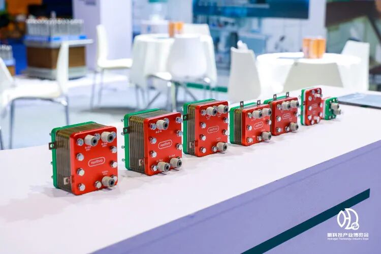
一排红色 PEM 电解槽模块沿对角线由大到小排列2026HST 第十届广州国际氢科技产业博览会现场（2026-05，本报告研究组实拍；B 级现场事实）
在中国氢健康产业二十年的技术迭代长河中，产品端在物理化学机制上分裂演化为两条截然不同的底层技术路线：电解水路线 与 材料水解/固态储放氢路线。
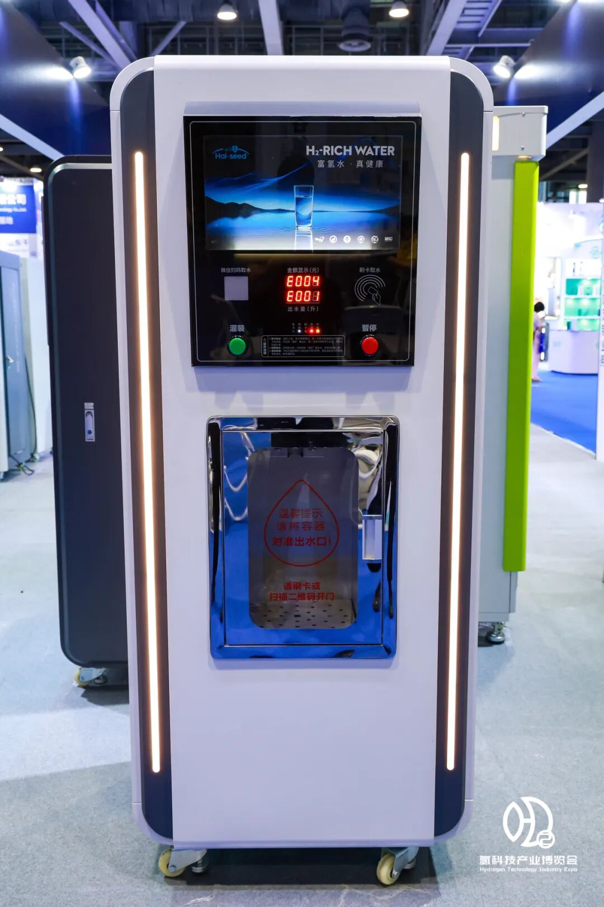
展会现场一台白色富氢水自助售水机，屏幕标注 H₂-RICH WATER 富氢水·真健康本报告研究组现场实拍（广州国际氢科技博览会 / 全国氢生物医学大会）
两条路线在基本原理、工程实现与场景边界上存在不可弥合的物理差异：
| 关键技术指标 |
电解水路线（SPE / PEM 纯水电解） |
材料水解路线（微孔陶瓷复合／固态储放氢） |
| 核心反应机理 |
外加直流电场驱动水分子电解：2H2O → 2H2↑ + O2↑ |
活性矿物与水发生微界面反应：Mg + 2H2O → Mg(OH)2 + H2↑ |
| 供能要求 |
强电依赖（需市电电源或大容量锂电池组） |
零电力依赖（Zero Power），常温遇水自发产生 |
| 核心部件与介质 |
质子交换膜（Nafion等）、铂/铱贵金属电极镀层、电解槽体 |
微孔晶体陶瓷微球、高纯纳米改性镁基/硅基复配载体 |
| 产物与水质 |
产生纯氢气与氧气，必须使用电导率极低的反渗透水或纯净水 |
产生高纯溶解氢，同步溶出游离弱碱性镁、钙有益矿物离子 |
| 氢分子溶存状态 |
即产即用，气液混合态半衰期极短（常温下通常为 1~2 小时） |
水分子团变小（NMR 半峰宽窄化），氢半衰期延长至 18~24 小时 |
| 副产物与安全隐患 |
非纯水电解存在游离氯与臭氧残留风险；膜干枯失效或击穿风险 |
反应副产物为食品级氢氧化镁弱碱沉淀，无任何化学毒害 |
| 设备形态与体积 |
需配置气泵、散热风扇、电源板、储水箱，整机笨重难以随身携带 |
极度微型化（介质可做成米粒大小的陶瓷球、薄片、粉末滤芯） |
| 工业制造门槛 |
组装门槛极低（模组拼装），核心膜材料主要依赖进口 |
烧结工艺与溶出速率控制门槛极高，需深厚无机无毒材料沉淀 |
两条路线绝非简单的“谁优谁劣”或水火不容，而是产氢场景与工程约束决定了交付形态：电解路线善于瞬时高通量产氢，但依赖固定空间与市电供能；材料水解路线彻底摆脱了电源束缚，具备分布式、长效缓释与天然矿化的基因。二者更非彼此割裂——正如现代高端水机所证明的，通过“电解模块 ＋ 矿物滤芯”的双膜（双模）复合架构，产业正迎来两条路线优势互补的深度融合期。
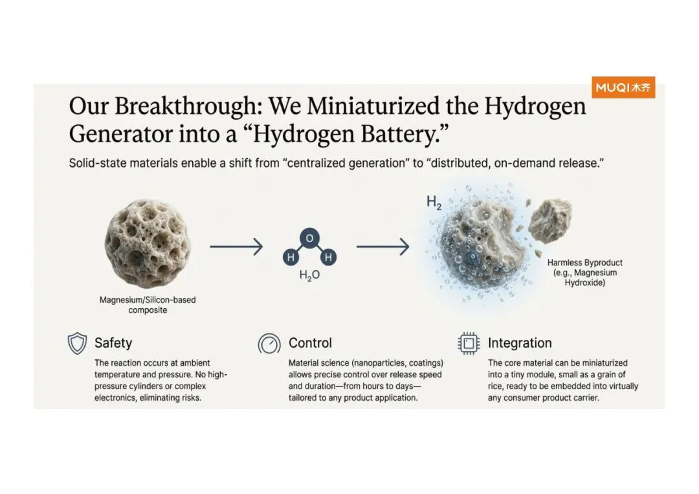
英文原理示意：镁／硅复合颗粒遇水生成氢气与氢氧化镁副产物木齐科技（MUQI Technology）产业资料库
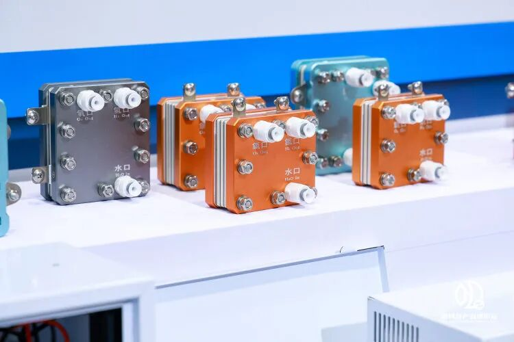
灰、橙、青三色 PEM 电解槽模块并排陈列，画面可见六个2026HST 第十届广州国际氢科技产业博览会现场（2026-05，本报告研究组实拍；B 级现场事实）
2.2 第一阶段：设备类产品的市场奠基与结构性瓶颈
在 2015 至 2022 年间，中国氢健康产业的供给端完全由“硬件设备”主导。吸氢机、富氢水机、电解氢水杯三大件，承担了中国市场的早期认知启蒙重任。
这一时期的硬件设备形态虽然让消费者首次直观感受到了“氢气泡产生”与“即时吸氢体验”，但随着市场发展，其结构性商业宿疾愈发凸显：
- 重资产与高资本开支（High Capex）：家用大流量吸氢机出厂成本普遍在 2,000~5,000 元以上，终端零售价格高达万元至数万元。对于绝大多数大众消费者而言，属于决策链条极其漫长的“耐用重资产”。
- 缺乏耗材复购（One-Off Transaction）：设备属于典型的一次性硬件买断。一台吸氢机或富氢水机设计寿命通常在 3~5 年，在整机售出后，企业与用户之间的交易链条即告终结，企业无法获取用户的持续生命周期价值（LTV）。
- 维护摩擦与售后成本高企：电解槽电极存在结垢老化问题，质子交换膜需要纯水浸润保养，普通消费者若误加矿泉水或自来水极易导致电极中毒烧毁，企业售后与客诉负担沉重。
- 倒逼渠道走向高压会销与体验店异化：由于设备单价过高、无法在传统商超和主流电商自然动销，设备企业不得不依赖线下“免费体验馆”进行长期洗脑蓄客。当高昂的店面租金、讲师提成和运营成本压身时，销售话术不可避免地滑向夸大功效甚至宣称“包治百病”的违法深渊。
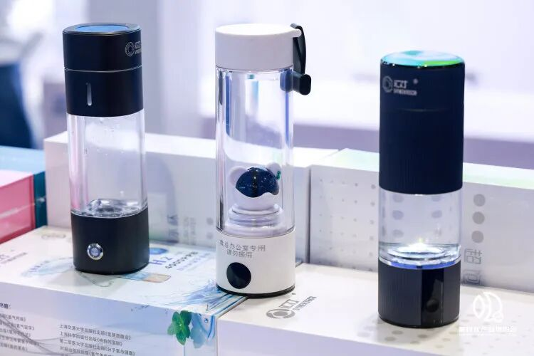
三支便携氢水杯并列（透明杯身，黑白哑光底座各嵌装饰石）2026HST 第十届广州国际氢科技产业博览会现场（2026-05，本报告研究组实拍；B 级现场事实）
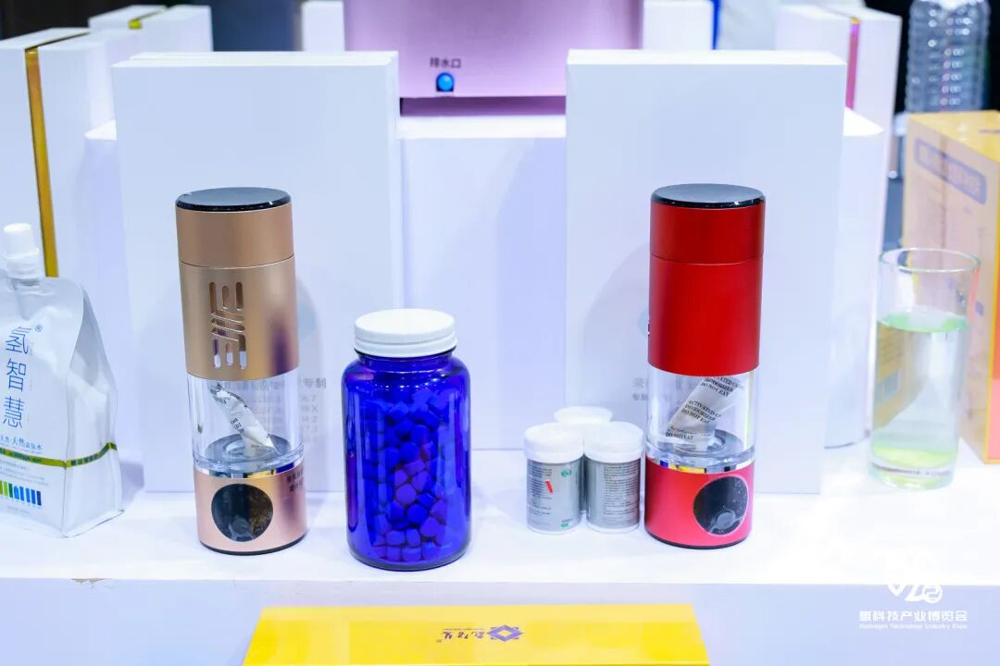
白盒背景前的金色与红色氢水杯静物摆拍，展示终端产品的配色与质地方向。2026HST 第十届广州国际氢科技产业博览会现场（2026-05，本报告研究组实拍；B 级现场事实）
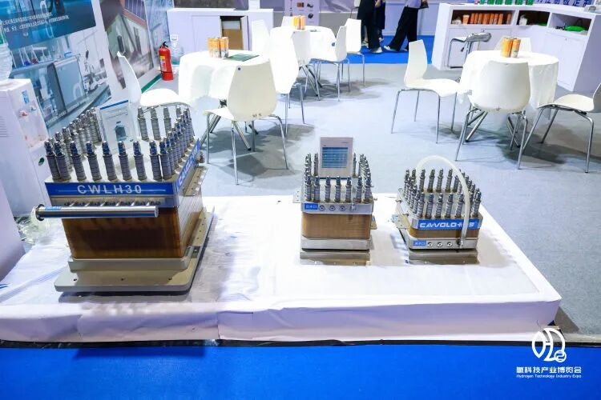
三台棕褐色机体电解槽带镀铬管接头并排陈列（标牌 CAVOLO）2026HST 第十届广州国际氢科技产业博览会现场（2026-05，本报告研究组实拍；B 级现场事实）
2.3 第二阶段：消费类氢健康产品的崛起与生活方式渗透——从“插电设备”向“移动快消”的形态跃迁
正是在传统重型设备遭遇“高门槛、无复购、涉会销、监管打”的四重绞杀困境下，自 2018 年前后起，产学研界开始探索摆脱电源与机械结构约束的新路径。以材料水解与固态储放氢为底层支撑的“消费类氢健康快消品（FMCG）”应运而生：
- 破除电源与机械束缚的材料学跨越：传统电解设备受限于电源插座、锂电池及机械泵体，使用场景被严重锁死在室内特定空间。国内材料研发机构与先锋企业（如木齐科技联合中科院理化所等科研团队）相继攻关微纳包覆、界面钝化与可控释氢技术，突破了金属单质剧烈反应的技术瓶颈，实现了氢气在常温常压水体中的平稳可控释放（常温敞口达到 1,200~1,500 ppb 近饱和浓度，溶氢半衰期达 18~24 小时）。这一材料学突破，正式打开了氢健康“去机械化、轻量化、便携化”的产业通道。
2020–2030E 中国氢健康产业市场规模与细分结构演变趋势（TAM / SAM / SOM 德勤/麦肯锡产业模型）。
清晰揭示了中国氢健康市场从 2020 年的 34.5 亿元稳步扩张至 2025 年的 120.5 亿元，预计 2030 年将突破 357.0 亿元（CAGR +26.3%）；其中以固态氢微孔材料赋能的快消品（FMCG）呈现 48.2% 的爆发式复合年均增速，占比从 9.3% 跨越式跃升至 46.2%，成为全行业最大的增长引擎。
📊 读图指引- 看什么：三层口径 TAM（总体潜在市场）／SAM（可服务市场）／SOM（可获取市场）自外向内收敛。
- 口径纪律：TAM 由宿主行业（家电 11,695 亿元 / 化妆品 4,653 亿元）乘以渗透比例推出，属C 级推断；SOM 才是企业当年可争夺的部分。
- 不要混读：42.3 亿元（2025 富氢水机细分实测）不等于本图 TAM。
💡 关键洞察- 结构判断：快消品（FMCG）是增速最快的分层，也是少数能摆脱"一次性买断"宿命的分层。
- 风险提示：C 级测算的价值在于可压力测试——把渗透比例上下调 30%，看结论是否翻转；若翻转，该结论不应写进战略建议。
- 行动启示：企业应把资源押在"耗材化程度"而非"整机单价"上。
- 催生“吃、喝、洗、护、泡”全景消费矩阵：依托固态释氢微孔材料的可塑性与介质兼容性，下游衍生出品类丰富的全场景快消品矩阵：
- 吃：固态富氢泡腾片、草本固态氢咀嚼片、微囊压片糖果（以口服摄入激活内源性保护）；
- 喝：便携矿泉水素氢水杯、智能净水后置微孔释氢滤芯、袋装随行水瓷棒（随时随地饮用富氢水）；
- 洗：手工冷制小氢皂、弱碱富氢洁面泡沫（深层清洁面部多余皮脂与自由基）；
- 护：免电微孔固态氢冷热眼贴、抗衰微纳氢水面膜（透皮抗氧化与眼周微循环修护）；
- 泡：富氢热灸足贴、高浓富氢足浴片、温泉级富氢泡澡球（微循环改善与运动疲劳消除）。
中国氢健康产业核心参与企业战略定位矩阵（波士顿咨询 BCG 2x2 战略模型）。
全面客观梳理了严肃医疗临床器械领航者（上海潓美医疗）、顶级美妆资本赋能新锐（奇麟正维 / 欧莱雅美次方领投）、底层微孔材料与产业链赋能者（木齐科技）、高校科研转化先锋（清德氢能/北大苏南研究院、上海交大氢科学中心）以及传统会销代工参与者的战略定位与核心壁垒。
📊 读图指引- 看什么：横纵轴分别为「技术壁垒」与「渠道触达」，四象限对应四种生存策略。
- 归类依据：企业落位基于公开披露的注册证、专利、渠道结构与融资信息，不含未公开的内部数据。
- 动态读法：象限不是终身制——政策（如支付端开闸）会让整张图横向平移。
💡 关键洞察- 格局判断：器械层稀缺（全国仅两家三类证）、材料层拥挤、渠道层分散——价值捕获集中在"证"与"材料"两端。
- 常见误判：把"会销体量"当成"市场份额"，会高估依赖体验店的整机厂商的真实竞争力。
- 行动启示：对无证企业更现实的选择，不是去抢器械层，而是做耗材与材料这一侧的合规供给。
- 重构商业模式与产业基本盘：消费类氢产品的兴起，将氢健康从面对严重慢性病老人的“高单价耐用器械”，拓展为面向更广泛年轻人群、都市白领与亚健康群体的“高频生活方式快消品”。客单价从上万元降至百元级，单客年复购频次由硬件设备的 0 次拉升至 8~12 次以上，使产业逐步建立起依靠产品本身健康复购造血的良性商业循环。
2.4 技术融合与代际进化：水机生态中的“电解模块 ＋ 矿物滤芯”双模（双膜）复合解决方案
在产业演进的早期叙事中，行业往往习惯于将“电解水路线”与“材料水解/矿物路线”置于非此即彼的对立视角。然而，真实商业世界的技术演化从不是线性的“谁取代谁”，而是场景驱动下的互补与融合。
特别是在现代高端家用净饮机、商用直饮机、智能台式富氢茶吧机以及社区智慧氢水站等核心水机品类中，二者已彻底打破孤立隔绝的壁垒，走向了深度集成的“电解模块 ＋ 矿物滤芯”双模（双膜）复合协同解决方案（Dual-Module / Dual-Membrane Hybrid Architecture）：
2.4.1 “双膜/双模”的物理工程机理与互补协同
所谓的“双膜（双模）”，在现代高阶水机的工程架构中体现为两个层级的精准协同：
- 第一重膜（电催化质子交换膜，SPE/PEM）——瞬时高通量产氢底座：
- 整机内部搭载 SPE/PEM 纯水电解槽，利用外加直流电场在质子交换膜两侧实现毫秒级快速电解，瞬时产生高纯度微细氢气泡，迅速拉升流体中的初始溶解氢浓度，建立起水机即时出水的高氢分压底色。
- 第二重膜/滤芯（固态微孔矿物复合功能膜/滤芯）——微环境调控、缓释长效保氢与矿化赋能：
- 在电解管路后置段或出水末端，嵌入以食品级天然微孔矿物陶瓷球（如改性镁基材料、富锶硅酸盐微球）为核心的复合滤芯。水流经过微孔矿物滤芯时，材料界面自发发生微电化学缓释反应，对电解水进行深度的物理化学重塑。
二者的结合在流体物理和化学指标上实现了单一路线无法企及的三大质变：
- 溶氢半衰期与微泡稳定性倍增：传统纯电解水析出的多为微米级大气泡，气液结合弱，常温敞口下半衰期仅 1~2 小时，极易迅速逸散逃逸；而后置固态矿物滤芯能够持续溶出纳米级均质氢气泡，并依靠微孔晶格的电位剪切效应显著细化水分子团簇（17O-NMR 核磁共振半峰宽由 110 Hz 以上压低至 65 Hz 以内），将整机出水的溶氢半衰期大幅延长至 18~24 小时，彻底攻克了“出水即跑氢、隔夜无氢气”的行业宿疾。
- 水质矿化与天然弱碱性重构：纯水电解通常强制要求前置 RO 反渗透系统，出水为极软、微偏酸性且缺乏矿物元素的“去离子纯水”；后置矿物功能滤芯在遇水缓释产氢的同时，稳定释放游离态镁（Mg2+）、锶（Sr2+）、钙（Ca2+）及偏硅酸等天然微量元素，将出水水质精准调校为人体适宜的天然弱碱性（pH 7.5 ∼ 8.5），且水质口感甘甜圆润，彻底解决了电解纯水口感干涩、无矿物滋养的痛点。
- 全时段主动防腐与安全冗余（双模运行）：在通电制水时，系统呈现“电解 ＋ 矿物”双驱动超饱和溶氢；在整机待机、断电或夜间管路静置状态下，矿物滤芯依然凭借零电力依赖的材料水解自发释氢，使管路内始终维持强负电位（ORP −300 ∼ −600 mV）与高溶解氢微环境，有效抑制管路内部细菌生物膜（Biofilm）滋生，构成无需化学抑菌剂的物理自洁屏障。
2.4.2 商业模式重构：破解“一锤子买卖”，开启“设备 ＋ 周期耗材”LTV 新范式
“双模/双膜复合架构”不仅是工程上的合理选择，更是对水机产业商业逻辑的根本性重塑：
| 商业维度 |
传统单一电解设备模式 |
传统单一快消耗材模式 |
“电解设备 ＋ 矿物滤芯”双模复合模式 |
| 交易性质 |
一次性高额硬件买断 |
低客单价分散零购 |
“剃刀 ＋ 刀片”持续生命周期绑定 |
| 首期门槛 |
高（¥3,000 ~ ¥15,000） |
极低（¥50 ~ ¥200） |
适中（以高品质整机建立家庭用水信任） |
| 复购机制 |
0 复购（3~5 年硬件周期内无交易） |
需依赖持续营销唤醒 |
刚性定期复购（滤芯寿命到期提醒，6~12 个月一换） |
| 用户生命周期价值（LTV） |
完全锁定在首单毛利 |
依赖公域高昂流转投放 |
年均贡献 ¥300~¥800 高毛利耗材现金流 |
| 渠道伙伴利益 |
“打一枪换一个地方”，逼走会销 |
利润单薄难以支撑线下展厅 |
售出一台设备锁定一个家庭的长期分润，渠道粘性极强 |
通过将固态矿物滤芯作为水机的核心消耗部件，整机品牌商与代理商成功从“卖出一台机器即关系终结”的硬件代工厂，跃升为掌握用户长期饮水入口的“生命健康服务商”。这种“以电解重设备锁定场景入口、以固态矿物滤芯实现高频造血”的融合形态，正在成为中国水机产业链升级最确定的产品主流趋势。
新一代便携微孔固态氢水杯与后置矿物功能滤芯实物图解。展示了内置食品级微孔释氢陶瓷滤芯的便携随行杯体架构，支持无论出差、旅行或办公场景下的全天候自发稳态制氢与矿化弱碱水质重构。木齐科技（MUQI Technology）产品资料库
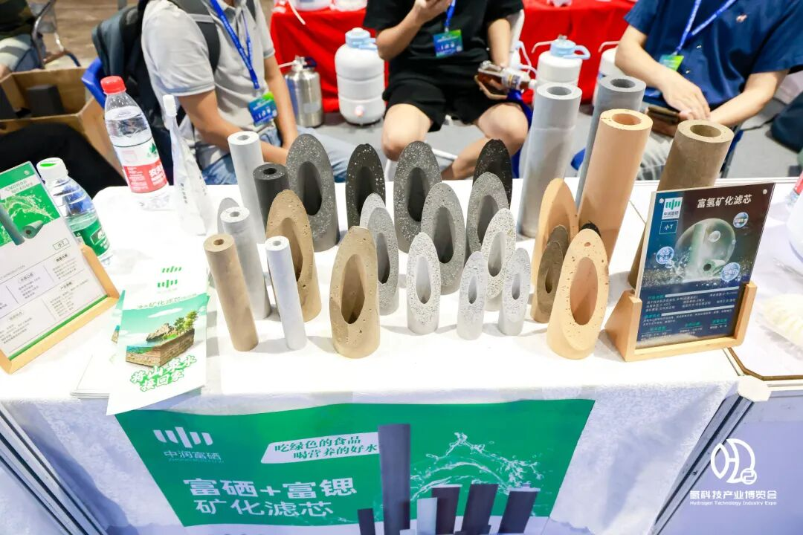
桌上陈列白、灰、棕、黑中空柱状矿化滤芯；展板书富氢、富硒＋富锶滤芯2026HST 第十届广州国际氢科技产业博览会现场（2026-05，本报告研究组实拍；B 级现场事实）
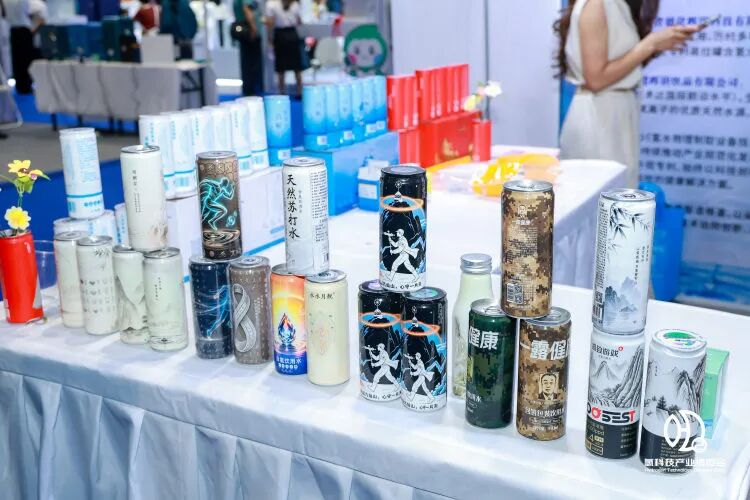
长桌一字排开数十罐不同品牌的富氢水饮品，品类密度直观。2026HST 第十届广州国际氢科技产业博览会现场（2026-05，本报告研究组实拍；B 级现场事实）
2.5 价格结构的真相：三万倍价差背后的三个价格锚点
中国氢健康市场呈现出一种令局外人震惊的物价景观：1688 批发平台上的一片固态氢片只要 ¥0.67，主流电商平台的一只电解氢水杯售价 ¥548，而线下体验店里的一台氢氧雾化机却能卖到 ¥17,999 甚至 ¥26,000。
最低价与最高价之间相差近 30,000 倍。但如果仅仅用“暴利”去解释这一现象，将彻底失去商业洞察力。因为这三个价格本质上锚定在三个完全不同、彼此平行的市场体系中：
| 价格锚点 |
代表性价格 |
核心交付物（卖的是什么） |
消费者购买决策依据 |
渠道形态与生命力 |
| 原料锚（Raw Material Anchor） |
¥0.67 / 片 |
工业功能材料与初级配方颗粒 |
起订量（MOQ）、重金属检测报告、产氢稳定性 |
1688 工业品批发、B2B 代工供应链（毛利薄、规模大） |
| 商品锚（Merchandise Anchor） |
¥548 / 只 |
带有富氢功能的小家电/数码水杯 |
工业设计、外观颜值、品牌口碑、电商评价 |
天猫、京东、抖音等主流公域电商（竞争激烈、中等毛利） |
| 疗效锚（Therapeutic Anchor） |
¥17,999 / 台 |
延年益寿、改善慢病乃至防癌的“健康承诺” |
长期免费体验、社群情感绑定、讲师专家权威背书 |
线下加盟体验馆、私域会销团队（毛利极高、政策风险极大） |
长期以来，“疗效锚”吸收了行业绝大多数的短期暴利，但也透支了全行业的社会公信力。随着 2024 年以来市场监管部门对“坑老骗老”会销模式的铁腕整治，“疗效锚”赖以生存的虚假宣传空间被物理压制。全行业正以前所未有的速度发生洗牌：传统依赖高压会销的重型设备遭遇生存天花板，而立足于“商品锚 + 高频快消耗材”的消费级氢健康产品，正在接管中国氢健康产业的真实增长基本盘。
CHAPTER 02 RECAP · 章末小结
两条物理路线、三代产品形态、三个价格锚
- 物理分野决定场景边界，不是先进性排序。电解路线强在瞬时高通量，但依赖市电与纯水；材料水解路线零电力、可微型化、半衰期 18–24h——不是谁更先进，是谁能进哪个场景。
- 「双模」本质是商业模式方案，不是技术折中。「电解模块 ＋ 矿物滤芯」把整机买断改写成「设备 ＋ 周期耗材」，年均耗材现金流 ¥300–800/户，这才是渠道黏性的真正来源。
- 三万倍价差不是一个市场的加价，是三个平行市场。原料锚 ¥0.67/片、商品锚 ¥548/只、疗效锚 ¥17,999/台；2024 年监管风暴物理压制了疗效锚，行业被迫回归「商品锚 ＋ 耗材复购」。
两种技术路线的工程与经济对照
| 维度 | 电解路线 | 材料固态水解路线 |
|---|
| 物理本质 | 电解水现场制氢，瞬时通量高 | 金属／矿物水解缓释，产氢速率可设计 |
| 外部依赖 | 需市电与纯水，形态受限于电源 | 零电力，可微型化、可随身 |
| 有效窗口 | 即产即用，无储存问题 | 半衰期 18–24h，需控制溶出与防潮 |
| 典型价格锚 | 整机为主，¥17,999/台属疗效锚 | 原料 ¥0.67/片、商品 ¥548/只 |
| 主战场 | 院内、机构与商用大通量直饮 | 快消、日化与耗材复购 |
第三章 需求端重塑与目标客群精准化
DEMAND-SIDE RESHAPING AND PRECISE CUSTOMER SEGMENTATION
Seminar-style group selling is a unit-price structure issue rather than an ethics issue, and the demand base is splitting into nine vertical segments.
本章要点 · 需求端重塑与目标客群精准化
- 会销是单价问题，不是道德问题 出厂成本 2,000–5,000 元、终端 1.5–2.6 万元的产品无法在商超与电商自然动销，线下体验馆是少数能消化该单价的渠道形态。话术夸大是结果，不是原因。
- 九大人群各有循证边界 银屑病水浴（A 级）、COPD 吸入（A 级）证据最硬；特应性皮炎尚无大规模人体双盲 RCT；糖尿病、帕金森等为辅助干预定位。宣称边界必须与证据等级严格绑定。
- 给药方式决定一切 用皮肤水浴的文献去背书"喝氢水治皮肤病"，在专业医生面前会被当场证伪。这是行业最常见的越界方式。
- 从被动到主动 认知从"被动受骗"走向"理性自驱的日常健康管理"——需求侧的成熟度已超过供给侧与制度侧。
3.1 历史反思与客群泛化困境：灰色“直销会销”时代的“老弱病残”伪命题
在过去十年间，中国氢健康产业长期陷入一种病态的低水平恶性循环：目标客户群体在认知和渠道上被极度泛化、扭曲为“老弱病残”。
在缺乏严肃医学科普与公立医疗准入的早期阶段，大量不具备核心材料研发能力的组装代工厂，将普通电解槽组装为动辄标价 1.5 万至 2.6 万元的吸氢机、氢水机。面对如此高昂的非刚需耐用家电单价，普通年轻中产与家庭在公域电商渠道绝无自然购买冲动。为了消化沉重的库存，商家不可避免地滑向了地下会销、加盟体验店与老年人集会营销渠道：
客群画像的模糊与泛化： 早期商家从未真正研究过特定疾病的病理生理机制，而是将目标人群粗糙地锁定为“有闲、有微薄积蓄、多病共存、极度恐惧死亡与衰老”的中老年群体。无论是高血压、糖尿病、骨关节炎、老慢支，乃至终末期恶性肿瘤，全都被囫囵吞枣地塞进同一个“吸氢喝水”的大筐中；
话术走偏与虚假宣传原罪： 在线下封闭体验馆“端茶倒水、亲情陪护、名医讲座”的层层情感绑架下，销售人员在沉重的单店房租与高额提成逼迫下，不可避免地走向了神化产品——宣称氢气“包治百病、逆转细胞衰老、抗癌消瘤、甚至诱导患者停止服用正规临床降糖降压药物”；
行业公信力遭遇毁灭性反噬： 这种建立在信息不对称与伪科学虚假承诺上的商业模式，不可避免地引来了国家市场监督管理总局的铁腕整治与央视《财经调查》的权威曝光。监管部门依法将大量涉事产品定性为“普通家用电器、绝非医疗器械”，依法查封并处以顶格罚款。更为严重的是，灰色会销给全行业打上了深深的“骗子印记”，导致真正具备严谨学术价值的分子氢生物医学被大众长期误解，主流消费人群望而却步，正规企业的合规获客成本暴涨十倍以上。
事实无可辩驳地证明：“泛化老弱病残的会销模式”是建立在沙滩上的伪需求，它不仅不是氢健康产业的护城河，反而是长期锁死全行业良性发展的最大历史负资产。
3.2 需求觉醒三大历史催化剂：后疫情健康觉醒、严肃循证沉淀与供给侧新材料革命
行至 2026 年，中国氢健康产业的需求端正在经历一场深刻的底层范式跃迁。支撑这一跃迁的并非商家的营销包装，而是四大宏观维度的历史性共振：
3.2.1 催化剂一：后疫情时代国民“主动免疫力与深层抗氧化/抗炎”健康觉醒
全球新冠疫情对全社会完成了一场前所未有的健康通识再教育。大众以前所未有的深度理解了“病毒感染诱发的细胞因子风暴”、“慢性低度全身性炎症”、“线粒体氧化应激损伤”以及“长新冠（Long Covid）慢性疲劳与脑雾”的病理本质。“未病先防”、“提升自身内源性抗氧化免疫屏障”从少数高净值人群的养生理念，迅速下沉为全民刚需。
尤为关键的是，国家卫生健康委《新型冠状病毒肺炎诊疗方案（试行第七版）》（2020 年 3 月 3 日）首次将「有条件可采用氢氧混合吸入气（H2/O2：66.6%/33.3%）治疗」写入氧疗措施，第八版沿用原句；第九版、第十版则删除了这一表述，氧疗条款回归通用表述。纳入与退出都发生在国家级诊疗规范的文本之内——这是氢医学第一次被写进国家层面的治疗方案，也是它第一次按同样的程序性标准被撤出。这一轮国家级文本的采纳，在全国三甲医院呼吸科与公众层面完成了一次实质性的「学术脱敏」，终结了公众过去认为「氢气吸入会中毒爆炸」的认知误区。
3.2.2 催化剂二：15+ 年严肃医学循证沉淀对“玄学认知”的科学替代
氢医学不再是捕风捉影的民间传闻。从 2007 年太田成男教授在《Nature Medicine》确立分子氢“选择性抗氧化”里程碑机制以来，以海军军医大学孙学军教授、中国工程院丁文江院士、钟南山院士、复旦大学、上海交通大学等国家级科研阵地为代表，全球已累积发表 5,120 余篇 PubMed 氢医学论文（中国学者贡献超 32%），并在世卫组织（WHO ICTRP）注册了 39 项真实有效的人体临床试验。
氢分子能够特异性穿透生物膜与血脑屏障（BBB）、靶向中和高毒性羟自由基（⋅OH）与过氧亚硝基阴离子（ONOO−）、激活 Nrf2/ARE 内源性抗氧化防御基因网络、抑制 NF-κB 炎症通路的分子机制被全面解析。科学证据的扎实累积，使越来越多具备科学素养的高学历人群、中产阶层与专业临床医护人员，开始以理性的眼光审视并接纳氢分子的辅助干预价值。
3.2.3 催化剂三：供给侧新材料革命催生全场景轻量化快消矩阵
长期以来，消费者不买单不仅是因为认知不足，更是因为供给侧的产品形态反人性——消费者被迫在“花费数万元买一台笨重的电解插电机”与“完全不接触”之间做二选一。
随着以微孔陶瓷晶格储放氢为代表的固态材料技术突破，氢分子的释放彻底摆脱了外接电源、电极板与大水箱的物理束缚。高浓度活性氢能够以极低成本封装进日常消费品中：
- 随时随地自制高溶氢活水的微孔富氢杯芯；
- 晨起冲泡或运动后迅速溶解的富氢固体饮料 / 泡腾片；
- 现用现激活、溶氢超 1,200 ppb 的无水固态干态氢面膜；
- 融合道地草本的中药富氢热灸贴 / 神阙穴位贴；
- 释放纳米级氢气微泡的富氢温泉泡浴片 / 足浴片。
新材料彻底打破了传统硬件的决策阻力，将产品客单价从“万元级重决策”拉低至“几十元至百元级轻决策”，使氢分子天然嵌入到大众日常的“吃、喝、洗、护、泡”生活流之中。
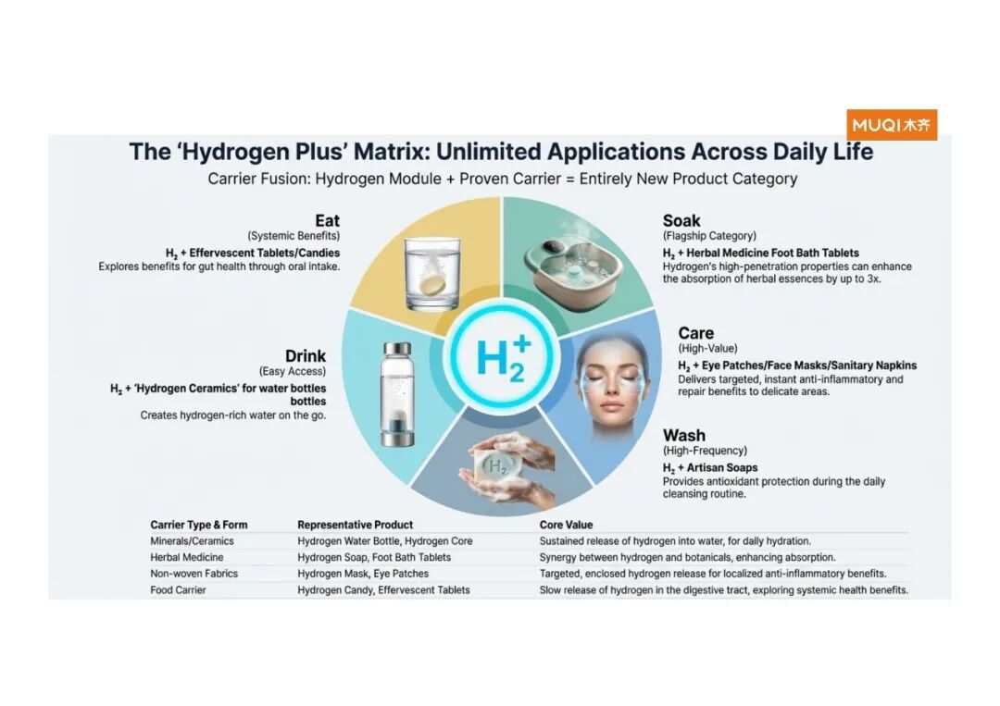
“氢＋（Hydrogen Plus）”多载体融合生活方式全景消费矩阵。展示了以微孔矿物陶瓷、道地草本、无纺布纤维及功能食品为载体，衍生出的“吃（Eat）、喝（Drink）、洗（Wash）、护（Care）、泡（Soak）”全场景快消品生态图谱。（画面中人物面部已作模糊处理）木齐科技（MUQI Technology）产业资料库
3.2.4 催化剂四：老龄化少子化社会结构与慢性病年轻化刚需爆发
我国 60 岁以上老年人口已超 3 亿人，阿尔茨海默病、帕金森病、中风后遗症等脑神经退行性疾病患病率持续攀升；与此同时，高压职场与不良作息促使高血压、高血糖、高血脂、高尿酸（痛风）等慢性代谢性疾病呈现剧烈的年轻化态势。在医保控费收紧、看病贵与药物副作用频发的宏观背景下，一种无肝肾代谢毒副作用、可长期居家辅助干预、兼具生活方式属性的非药物抗氧化手段，成为数亿亚健康与慢病家庭迫切寻求的健康支点。
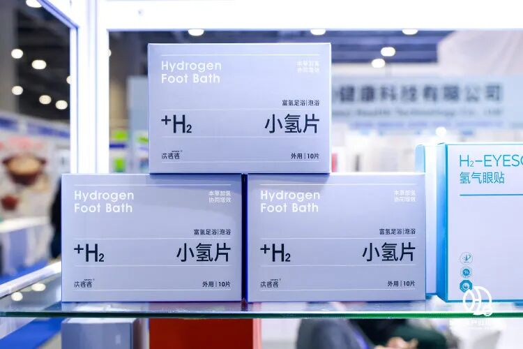
三盒白色「富氢足浴／泡浴小氢片」与氢气眼贴包装并列，属固态氢日用消费品。2026HST 第十届广州国际氢科技产业博览会现场（2026-05，本报告研究组实拍；B 级现场事实）
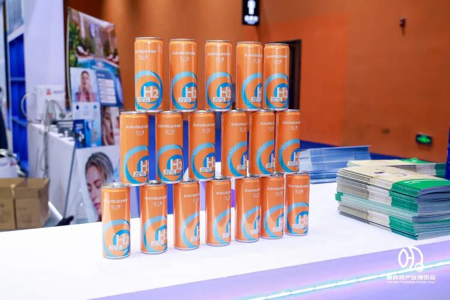
橙色富氢水易拉罐金字塔式堆叠，展示饮品端的陈列与促销形态。2026HST 第十届广州国际氢科技产业博览会现场（2026-05，本报告研究组实拍；B 级现场事实）
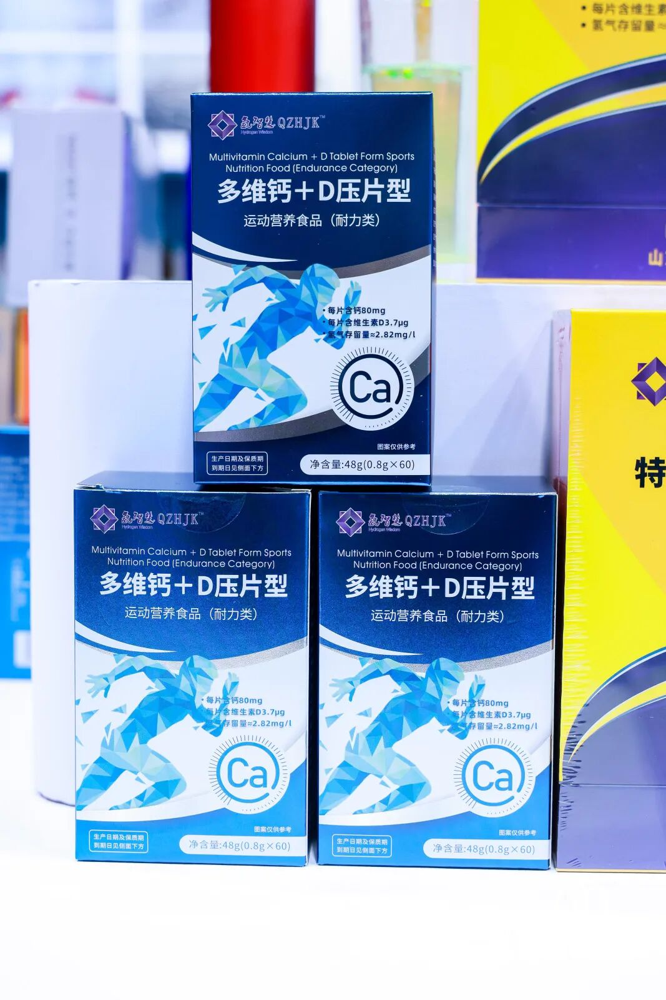
三盒蓝色「多维钙+D 压片型」运动营养食品包装堆叠，侧面小字标注氢存留量≤2.82mg/L2026HST 第十届广州国际氢科技产业博览会现场（2026-05，本报告研究组实拍；B 级现场事实）
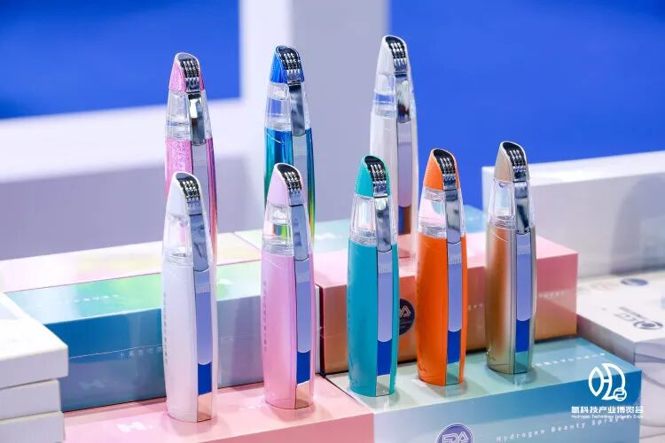
七八支彩色笔状小件竖直立于包装盒上，盒面印 Hydrogen Beauty Spray2026HST 第十届广州国际氢科技产业博览会现场（2026-05，本报告研究组实拍；B 级现场事实）
3.3 九大高精准细分目标人群画像、病理机理与循证边界深度拆解
在上述催化剂的驱动下，中国氢健康产业的目标客户群体已彻底告别了“老弱病残”的模糊粗糙标签，精准分化为特征鲜明、病理痛点明确、具备高支付意愿的九大垂直细分人群：
氢医学核心适应症循证证据等级与合规宣称红线矩阵（牛津 CEBM 循证医学体系）。
系统梳理了银屑病（复旦华山医院 Level A 级 RCT）、慢阻肺（广州呼研所钟南山团队 Level A 级 RCT）、非酒精性脂肪肝与运动疲劳（Level B 级）及亚健康改善（Level C 级）的试验设计与终点数据，明确界定了三类医疗器械、二类敷料与普通快消品的法律宣称红线。
📊 读图指引- 看什么：纵向为循证等级（Level A 最高），横向为适应症；色块深浅表示证据强度。
- 判定标准：Level A = 多中心随机双盲对照；Level B = 单中心 RCT 或队列；Level C = 动物/个案/机制推断。
- 红线读法：证据等级与「可宣称边界」严格绑定——Level A 也不等于可宣称"治愈"。
💡 关键洞察- 关键事实：银屑病水浴（华山医院，PASI 75 达标 24.4% vs 对照 2.9%，Pc=0.022）与 COPD 氢氧吸入是目前证据最硬的两处。
- 诚实边界：特应性皮炎（湿疹）尚无大规模人体双盲 RCT，行业常见的"氢治湿疹"属张冠李戴。
- 行动启示：给药方式决定一切——用皮肤水浴的文献去背书"喝氢水治皮肤病"，在专业医生面前会被当场证伪。
3.3.1 2 型糖尿病及代谢综合征人群（“糖友”与糖前期）
人群规模与痛点： 国际糖尿病联盟（IDF）与《中国 2 型糖尿病防治指南》权威数据表明，我国成人糖尿病患病率达 11.2%，确诊患者超 1.41 亿人（全球第一）；更有超过 3.5 亿人处于糖耐量受损（IGT）的“糖前期”阶段。胰岛素抵抗、慢性低度全身性炎症、以及晚期糖基化终产物（AGEs）引发的微血管病变，使患者常年依赖多种化学降糖药物，伴发肾功能损伤风险。
分子生物学机制： 高糖微环境引发线粒体电子传递链严重泄漏，产生大量超氧阴离子与恶性自由基，导致胰岛 β 细胞功能进行性衰竭与外周骨骼肌胰岛素受体脱敏。分子氢通过选择性清除胰岛 β 细胞内的恶性 ROS，保护线粒体结构完整性；促进骨骼肌葡萄糖转运蛋白 4（GLUT4）向细胞膜发生转位，直接改善外周靶组织对胰岛素的敏感性；同时激活肝脏 AMPK/SIRT1 通路，下调糖异生关键酶活性，抑制肝糖原过量分解输出。
权威临床证据： 日本学者 Kajiyama 等人在权威医学期刊《Nutrition Research》（2008, 28(3):137-143, PMID: 19083400）发表了里程碑式的随机双盲安慰剂对照交叉试验：30 例 2 型糖尿病患者与 6 例 IGT 患者每日饮用 900 ml 高浓度富氢水持续 8 周，结果显示改性低密度脂蛋白（ox-LDL）与尿 8-异前列腺素显著降低，超氧化物歧化酶（SOD）活性提升，6 例糖耐量受损受试者中有 4 例口服葡萄糖耐量试验（OGTT）恢复正常；国内泰山氢生物医学研究院秦树存团队在人体的后续研究亦证实，富氢水能显著降低糖脂代谢综合征患者血清丙二醛（MDA）水平并辅助平稳糖化血红蛋白（HbA1c）。
产品形态与使用习惯： 家庭全屋/台面大通量富氢水机（全家日常饮用）、便携式固态氢饮水杯（日间随行饮用，保持体内持续溶氢分压）、富氢代餐固体冲调。
咨询严正纠偏与合规红线： 严禁向患者宣称“喝氢水可以停用降糖药或治愈糖尿病”！ 氢分子在糖尿病中的法律与科学定位是“改善胰岛微环境与减轻全身氧化应激损伤的辅助性生活方式干预手段”，必须在规律用药与生活方式控制的前提下协同使用。
3.3.2 难愈性慢性创面修复与皮肤溃疡照护人群（糖尿病足溃疡 DFU、压疮褥疮与术后创面）
人群规模与痛点： 在失能卧床老人与高龄慢病群体中，重度压疮（褥疮）发生率极高，全国卧床压疮患者超 400 万人；糖尿病足溃疡（DFU）是我国糖尿病非外伤性截肢的首要原因，全国患者达 800 万人，年截肢率高达 20% 以上，5 年死亡率甚至高于部分常见癌症；此外，术后脂肪液化切口、大面积烧伤烫伤后期创面愈合周期漫长，换药极其痛苦，抗生素耐药与创面无菌性深层微循环衰竭是临床核心困境。
分子生物学机制： 难愈性创面之所以“经久不愈”，核心在于创面微环境长期停滞于“高活性氧堆积、过度中性粒细胞浸润、微血管闭塞”的恶性炎症期，巨噬细胞被死死锁在促炎的 M1 表型。局部施加分子氢，能以纳米级渗透力穿透肉芽水肿组织，特异性清除羟自由基，驱动创面巨噬细胞由促炎性 M1 型向促组织修复与血管新生的 M2 型发生表型极化；显著上调血管内皮生长因子（VEGF）、CD31 与成纤维细胞生长因子（bFGF）表达，诱导新生微毛细血管网爬行；同时抑制基质金属蛋白酶（MMP-2/MMP-9）对新生胶原细胞外基质的过度降解，加速上皮肉芽平整闭合。
权威临床证据： 上海交通大学医学院附属瑞金医院创面修复中心、空军军医大学西京医院等单位开展了系统探索。国际顶尖期刊《Nature Communications》（Chen S et al., 2022, 13:5684）在光热/光催化释氢促进糖尿病创面愈合的研究中系统引述指出：“临床上应用富氢水进行创面浸浴与湿敷，已被证实能显著促进糖尿病足溃疡肉芽组织新生并加速愈合（Hydrogen-rich water bath can promote the healing of DFU in clinic）”；《Burns》期刊发表的多项临床前试验证实，富氢生理盐水冲洗能使严重烧伤及放射性溃疡创面愈合时间缩短 25%~35%。
产品形态与使用习惯： 医用级富氢水浸泡足浴盆（针对糖足与下肢静脉溃疡）、富氢微纳米气泡清洗液、以江苏常州/苏州医疗器械产业带为代表的二类医疗器械富氢医用敷料 / 凝胶贴。
咨询级合规界定： 创面修复属于高壁垒的严肃医疗与专业护理范畴，必须严格遵循无菌操作规程。外用富氢敷料是氢健康领域走向医院换药室与专业养老护理机构最有确定性的产品落脚点。
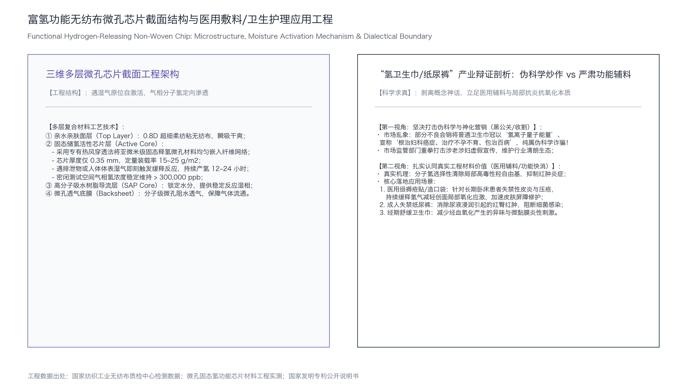
富氢功能无纺布微孔芯片截面结构与全龄化健康护理应用。展示了固态储氢微孔活性材料与无纺布纤维复合的三维微孔晶格，遇湿气原位自激活释氢（气相浓度 > 300,000 ppb，持续 12~24 小时）。该芯片可无缝复合于现有卫生用品产线，全面赋能女性经期养护卫生巾（缓解痛经异味）、婴儿防红屁屁纸尿裤以及长期卧床失禁性皮炎（IAD）与褥疮慢创功能性敷料。木齐科技（MUQI Technology）产品资料库
3.3.3 慢性炎症性皮肤病与皮肤屏障受损人群（银屑病、痤疮与敏感肌修护）
人群规模与痛点： 我国银屑病（牛皮癣）患者超 650 万人；特应性皮炎（AD，湿疹）患者超 7,000 万人；青年人群面部寻常痤疮（青春痘）发生率超 80%；成年女性中超过 36% 饱受面部潮红、灼热、角质层菲薄等敏感性肌肤困扰。传统外用糖皮质激素软膏虽能快速压制皮疹，但长期使用可能诱发皮肤萎缩、毛细血管扩张、色素沉着以及严重的激素依赖性皮炎。
分子生物学机制： 表皮角质形成细胞与真皮成纤维细胞在环境理化因子或自身免疫紊乱刺激下，过度释放 TNF-α、IL-1β、IL-6 及 IL-17A 等炎性因子。分子氢能特异性穿透表皮角质层细胞间质，抑制局部肥大细胞脱颗粒并阻断 IgE 介导的超敏反应；通过淬灭 ROS 抑制炎性转录因子 NF-κB 活化，下调促炎细胞因子级联释放；维持表皮细胞生理性弱酸性屏障与微生态平衡，且具备绝对零激素、零耐药性、长期外用无皮肤萎缩副反应的巨大安全性优势。
权威临床证据与诚实边界核验：
- 银屑病（高等级 A 级证据）：复旦大学附属华山医院联合同济大学附属第十人民医院等中心在《Scientific Reports》（Zhu Q et al., 2018, 8:8051, PMID: 29795283）上发表了高等级人体平行对照临床试验：75 例寻常型银屑病及副银屑病患者接受富氢水全身水浴（每周 2 次，持续 8 周），结果显示氢水浴组 PASI 75 达标率高达 24.4%（10/41 例），显著优于常规水对照组的 2.9%（1/34 例），校正后统计学差异极显著（Pc = 0.022）；且顽固性瘙痒评分获得断崖式改善；
- 特应性皮炎（诚实边界声明）：必须严肃纠正行业常见的张冠李戴——目前特应性皮炎（湿疹）尚无严格的大规模人体双盲 RCT，主要为动物模型与个案观察；
- 给药方式决定一切铁律：银屑病的硬证据来自“全身水浴（泡）”与“局部湿敷”，企业绝对不能偷换概念，拿皮肤水浴的文献去背书“喝氢水治皮肤病”，否则在专业皮肤科医生面前将被当场证伪。
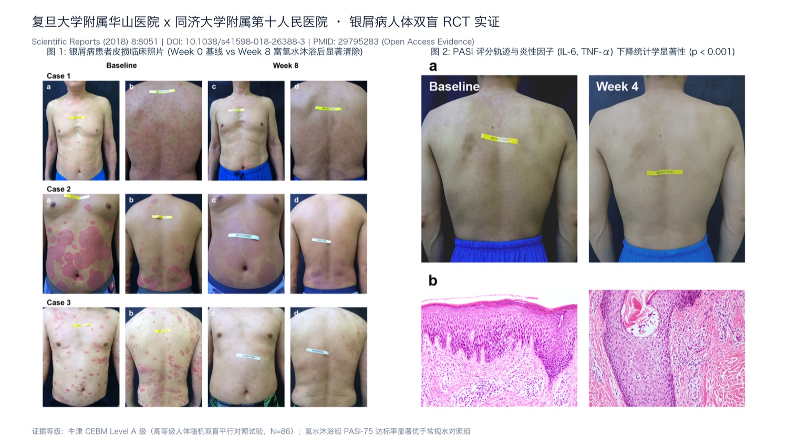
银屑病患者皮损基线／第 8 周对照照片与组织病理切片，附论文 DOI复旦大学附属华山医院 ✕ 同济大学附属第十人民医院；论文 Zhu Q et al., Scientific Reports 2018, 8:8051（开放获取，CC BY 4.0，允许署名引用）
- 产品形态与使用习惯： 高溶氢无水固态干态氢面膜（冷水现泡即用，1,200~1,500 ppb 渗透）、富氢温泉泡浴片、温和弱酸性富氢洁面泡沫、微纳米富氢喷雾。
3.3.4 神经退行性疾病与银发脑健康人群（帕金森病 PD、阿尔茨海默病 AD、轻度认知障碍 MCI）
人群规模与痛点： 伴随我国不可逆转的重度老龄化趋势，帕金森病（PD）患者已超 360 万人（占全球三分之一以上，预计到 2030 年达全球半数）；阿尔茨海默病（AD）及血管性痴呆患者超 1,000 万人，轻度认知障碍（MCI）人群高达 3,800 万人。神经退行性疾病进展不可逆，现有一线药物（如左旋多巴、多奈哌齐）仅能短期改善症状，无法阻断神经元变性死亡，且伴随严重的异动症与胃肠道副反应。
分子生物学机制： 大脑重量仅占人体 2%，却消耗机体 20% 以上的氧气，多不饱和脂肪酸与铁离子高度富集，内源抗氧化酶储备相对匮乏，是极度脆弱的高氧化代谢器官。传统大分子抗氧化剂（如维生素 E、辅酶 Q10）因无法跨越极其严密的血脑屏障（BBB）而收效甚微。分子氢是宇宙中最小的分子（分子量仅 2 Da），兼具高脂溶性与极高弥散系数，吸入或口服后可毫无阻碍地瞬时穿透血脑屏障，深入黑质多巴胺能神经元与海马锥体细胞的线粒体基质；特异性淬灭羟自由基，抑制 α-突触核蛋白（α-synuclein）与 β-淀粉样蛋白（Aβ）的异常交联聚集；抑制中枢小胶质细胞的病理性过度活化，阻断神经神经炎性退变。
权威临床证据： 日本顺天堂大学医学院联合名古屋大学神经内科 Yoritaka 等学者在国际神经病学权威期刊《Movement Disorders》（2013, 28(6):836-839, PMID: 23400965）上发表了里程碑式的随机双盲安慰剂对照 RCT 临床试验：18 例接受左旋多巴治疗的帕金森病患者，每日饮用 1,000 ml 富氢水（溶氢浓度 ~1,600 ppb）持续 48 周，结果显示氢水组统一帕金森病评定量表（UPDRS）总分平均改善 -5.7 分，而安慰剂对照组平均恶化 +4.1 分，组间差异达极显著统计学水平（P < 0.05）；多中心长期随访证实分子氢对延缓黑质多巴胺能神经元变性具有独特神经保护潜能。
产品形态与使用习惯： 医用级/高规格家用高流量氢氧机（300~600 ml/min，每日居家吸氢 1~2 小时）、微高压富氢氧健康舱（1.3 ATA 微压供氧协同神经抗氧化）、日常高溶氢饮用水。
咨询级合规界定： 定位为神经退行性疾病的长期慢病神经保护与生活质量维持，配合临床神经内科药物联合管理，不可单方面宣传“彻底治愈中风偏瘫与老年痴呆”。
3.3.5 精神心理健康与现代都市神经调节人群（睡眠障碍、慢性疲劳综合征、抑郁与焦虑倾向）
人群规模与痛点： 根据中国睡眠研究会《2024 中国居民睡眠健康白皮书》，我国成年人睡眠障碍发生率高达 38.2%（超过 3 亿人）；抑郁障碍患病人数估算超 9,500 万人，焦虑障碍超 4,000 万人。在快节奏、高压力的职场白领、企业中高管、创投人群及更年期群体中，“入睡困难、早醒多梦、慢性疲劳综合征（CFS）、情绪低落与脑雾”已成高发流行病，严重侵蚀生命质量。
分子生物学机制： 长期精神应激导致下丘脑-垂体-肾上腺（HPA）轴持续亢进，血清皮质醇持续处于病理性高位，诱发海马神经元树突棘萎缩脱落与神经炎症；脑源性神经营养因子（BDNF）合成受阻，中枢单胺类神经递质（5-羟色胺 5-HT、多巴胺）代谢紊乱。分子氢穿透中枢后，抑制小胶质细胞释放促炎细胞因子（IL-6、TNF-α），上调海马区 BDNF 基因表达；调节自主神经功能，通过提高副交感神经张力改善迷走神经活性，促使大脑皮层由紧张的高频 β 脑电波向放松的 α 波转化，显著延长 N3 慢波深度睡眠周期。
权威临床证据与诚实纠偏（给用户的严密去伪存真）：
- 人体临床事实：解放军总医院第二医学中心联合承德医学院附属医院团队在《Medical Gas Research》（Gao YH et al., 2026, 16(2):98-102, PMID: 40826930）发表了人体单盲随机对照试验：66 例慢性睡眠障碍受试者经鼻吸入氢氧气（67% H2 + 33% O2，每日 1 小时，连续 7 天），采用 Actiwatch 腕部客观睡眠监测显示总睡眠时间（TST）和睡眠效率（SE）显著延长，觉醒时间（WT）显著降低；在次要情绪终点方面，氢氧组抑郁自评量表（SDS）得分显著低于对照组，但焦虑量表（SAS）组间差异未达显著水平；
- 极其严苛的诚实边界：目前全球尚无任何一项以“确诊临床重度抑郁症（MDD）患者”为主终点的严格 RCT 人体试验！ 大量关于抑郁症的研究均来自小鼠慢性不可预知应激模型（CUMS，Zhang Y et al., 2016, Sci Rep 6:23742; Gao Q et al., 2017, Sci Rep 7(1):9625），且多为预防性给药。因此，企业在商业宣传中绝不可宣称“氢气能治疗抑郁症”！ 合规且具有说服力的话术应聚焦于“改善睡眠微架构、深度抗疲劳、缓解慢性心理应激引发的自主神经紊乱”。
产品形态与使用习惯： 床头静音睡眠吸氢机（低噪音、150~300 ml/min）、微高压富氢氧睡眠舱、热灸神阙穴肚脐贴、睡前高浓度富氢足浴片。
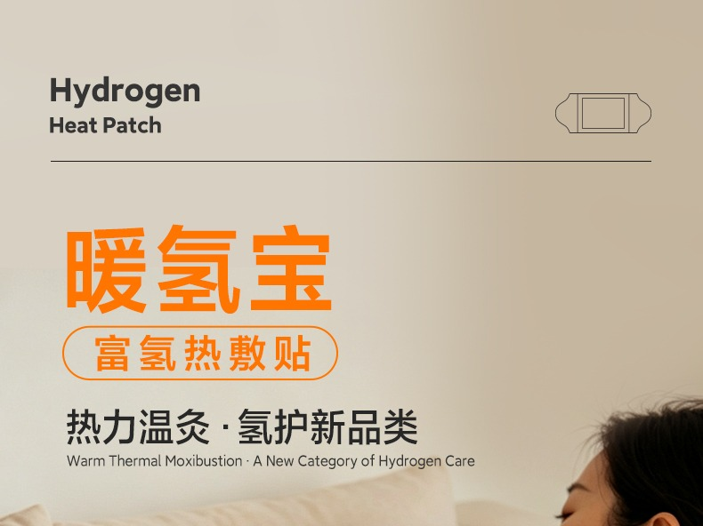
「暖氢宝 富氢热敷贴」海报页，仅见文字与线描贴片图标木齐科技（MUQI Technology）产品资料库
3.3.6 肥胖、体态管理与代谢性脂肪肝人群（超重减脂与内脏脂肪代谢）
人群规模与痛点： 《中国居民营养与慢性病状况报告》显示，我国 18 岁及以上居民超重率达 34.3%、肥胖率达 16.4%，超重与肥胖人口规模合计超 6 亿人；非酒精性脂肪性肝病（NAFLD/MASLD）患病率已突破 29%，成为我国患病率最高的慢性肝脏疾病（患者超 2 亿人），且伴随着高甘油三酯、胰岛素抵抗等代谢紊乱，形成恶性循环。
分子生物学机制： 日本医科大学太田成男教授团队的开创性研究揭示了分子氢独特的代谢信号调控通路：分子氢能够刺激肝脏分泌一种关键的能量代谢内分泌激素——成纤维细胞生长因子 21（FGF21）。FGF21 释放入血后，靶向激活过氧化物酶体增殖物激活受体 γ 辅激活因子 1α（PGC-1α）与 PPAR-α，诱导皮下白色脂肪组织向耗能型棕色/米色脂肪（Beige Fat）发生表型转化（白色脂肪棕色化，WAT Browning）；显著上调线粒体解偶联蛋白 1（UCP1）表达，将能量以热能形式散失，提升机体基础代谢率；同时加速肝细胞脂肪酸 β-氧化，大幅降低肝脏甘油三酯堆积与过氧化脂质沉积，有效逆转脂肪性肝炎。
权威临床证据： 太田成男团队在国际肥胖学权威期刊《Obesity》（Kamimura N et al., 2011, 19(7):1396-1403, PMID: 21293445）上发表研究证实：在 db/db 严重遗传性肥胖小鼠模型中，长期自由饮用富氢水，即使在未限制饮食热量摄入与食量的情况下，小鼠体内脂肪含量与体重大幅下降，空腹血糖与内脏脂肪显著减少；后续塞尔维亚与中国学者的临床试验进一步证实，人类代谢综合征受试者连续饮用富氢水 8~12 周，血清总胆固醇、甘油三酯、小而致密 LDL 以及肝脏受控衰减参数（CAP，表征脂肪肝程度）均获得统计学显著改善。
产品形态与使用习惯： 便携式固态氢发泡片（白领代餐或运动前后冲水饮用）、富氢冷萃黑咖啡 / 绿茶（代谢协同）、微孔陶瓷随身滤氢水壶。
3.3.7 传统“三高”与心脑血管慢病人群（高血压、高血脂、高尿酸/痛风）
人群规模与痛点： 国家心血管病中心《中国心血管健康与疾病报告》显示，中国高血压患者达 2.45 亿人；血脂异常人群超 4 亿人；高尿酸血症患者达 1.8 亿人（痛风确诊患者超 1,500 万人，且呈现向 20~40 岁年轻男性剧烈年轻化趋势）。传统慢病管理面临药物依从性差、长期服用降压药引发干咳/水肿、他汀类降脂药引发肌痛及肝酶升高、降尿酸药诱发过敏等药物不良反应痛点。
分子生物学机制：
- 高血压：剪切力损伤与内皮氧化应激促使超氧阴离子与内源性一氧化氮（NO）急剧反应，生成具有强细胞毒性的过氧亚硝基阴离子（ONOO−），导致血管内皮一氧化氮合酶（eNOS）发生解偶联，内皮依赖性血管舒张功能丧失。分子氢特异性清除 ONOO−，保护生物活性 NO 浓度，显著改善血流介导的血管舒张功能（FMD），辅助平稳外周阻力血管压力；
- 高血脂：抑制低密度脂蛋白（LDL）在血管内皮下层发生过氧化修饰形成 ox-LDL，阻止巨噬细胞无节制吞噬 ox-LDL 演变为泡沫细胞，从细胞起始阶段阻断动脉粥样硬化易损斑块的形成；
- 高尿酸与痛风：尿酸微晶（MSU）沉积于关节滑膜腔，诱发巨噬细胞产生爆裂性活性氧激增，激活 NLRP3 炎症小体，释放大量白细胞介素-1β（IL-1β）导致急性痛风性关节炎剧痛。分子氢不仅能温和抑制肝脏黄嘌呤氧化酶（XOD）活性，减少内源性尿酸生成，更能直接阻断 NLRP3 炎症小体活化通路与 IL-1β 成熟释放，在急性发作期与间歇期提供无胃肠及肾脏毒副作用的消炎排酸辅助。
权威临床证据： 泰山医学院宋国华、秦树存等人在《Journal of Lipid Research》（2013, 54(7):1884-1893, PMID: 23610159）发表临床试验：20 例代谢综合征患者饮用富氢水 10 周，血清总胆固醇下降，高密度脂蛋白（HDL）的抗动脉粥样硬化保护功能显著修复；青岛大学医学院痛风权威团队李长贵教授在国际高尿酸与痛风领域亦发表多项富氢水干预研究，证实富氢水能促进尿酸排泄、减轻痛风发作频次。
产品形态与使用习惯： 家用大通量富氢水机（全天饮水替代）、富氢草本排酸足浴片、富氢关节温热透皮贴（局部滑膜抗炎消肿）。
3.3.8 都市年轻与中产女性“抗初老、悦己与光老化防御”人群（美业日化快消主力）
人群画像与消费特征： 25~45 岁的一二线城市中产女性及职场精英，是美妆个护与抗衰老消费的绝对主力。她们崇尚科学护肤，高度认同“抗氧化、抗糖化、清除自由基、保护胶原蛋白”的生理机制，普遍反感传统的玄学概念营销，对成分表与检测报告具备极高鉴别力（“成分党”），消费决策聚焦于“机制严谨、体感立竿见影、安全无副作用”的轻医美术后修护与日常高端护肤品。
分子生物学机制： 紫外线（UVA/UVB）辐射是导致皮肤外源性衰老（光老化）的绝对元凶。紫外线照射真皮层成纤维细胞，诱发大量单线态氧与羟自由基产生，促使转录因子 AP-1 表达，进而上调基质金属蛋白酶-1（MMP-1，胶原酶）与 MMP-3，大面积水解裂解真皮网状层的 I 型和 III 型胶原蛋白与弹性蛋白，导致皮肤断裂塌陷、形成皱纹与松弛。分子氢以 2 Da 的极致分子量穿透真皮细胞，特异性清除羟自由基，强力抑制 UV 照射诱发的 MMP-1 表达，同时上调 TGF-β 信号并促进前胶原蛋白合成；此外，分子氢能够抑制黑色素细胞内酪氨酸酶异常激活，减少过氧化脂质对角质层的暗沉沉积，实现由内而外的通透提亮。
产品形态与使用习惯： 无水固态干态氢面膜（天丝/超细纤维干膜布结合固态微晶，现用水浸润释氢，1,200~1,500 ppb 强力渗透）、富氢抗氧化眼贴/热敷眼罩、富氢微细气泡洁面冷制皂、富氢紧致精华喷雾。
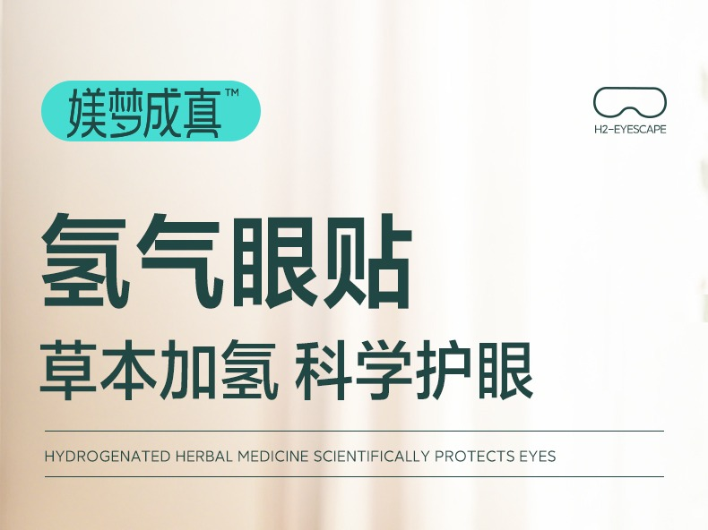
「媄梦成真」氢气眼贴品牌海报，仅见品牌名与线描眼罩图标木齐科技（MUQI Technology）产品资料库
3.3.9 高强度运动健身与体能修复客群（马拉松、健身抗疲劳与肌肉超量恢复）
人群画像与消费特征： 国家体育总局数据显示，全国经常参加体育锻炼的人数已突破 4 亿人，其中马拉松、公路自行车、铁人三项、Crossfit 及高频力量训练等重度运动健身人群逾 7,000 万人。运动后骨骼肌乳酸急剧堆积引发的酸痛无力、运动后延迟性肌肉酸痛（DOMS）、以及大运动量引发的急性肌纤维无菌性微损伤与全身氧化应激，是制约运动表现与恢复周期的核心痛点。
分子生物学机制： 剧烈运动时骨骼肌线粒体耗氧量较静息状态飙升 100~200 倍，线粒体电子漏导致过量超氧阴离子与羟自由基雪崩式产生，严重氧化损伤肌浆网肌球蛋白与肌钙蛋白，导致细胞内钙离子紊乱与肌酸激酶（CK）大量外漏。运动前或运动后即刻补充分子氢，能特异性中和运动性恶性 ROS，保护肌细胞膜结构完整；促进骨骼肌单羧酸转运蛋白（MCT）活性，显著加速血乳酸的分解代谢与肝脏糖异生清除；抑制炎症介质释放，显著减轻运动后 24~48 小时的 DOMS 疼痛峰值；配合微高压氧环境（1.3~1.5 ATA），更可实现肌肉组织的超量恢复与体能快速反弹。
权威临床证据： 日本学者 Aoki 等人在《Medical Gas Research》（2012, 2:12, PMID: 22784860）上针对 10 名男性精英足球运动员开展了严格的随机双盲安慰剂对照交叉试验：受试者在剧烈递增负荷踏车运动前 30 分钟饮用富氢水，结果显示富氢水组剧烈运动后的血乳酸堆积水平显著低于安慰剂组，且最大运动负荷下的骨骼肌疲劳峰值显著延缓；Mikami 等人（2019, Can J Physiol Pharmacol, 97(1):57-62）多项人体运动 RCT 亦证实了口服分子氢对提升耐力运动员有氧运动能力与缩短恢复期的确定性效能。
产品形态与使用习惯： 运动随行电解富氢水杯、固态微孔便携发泡能量片（加入运动饮料冲调）、运动康复中心微高压富氢氧舱（1.3~1.5 ATA 赛后深度恢复）、富氢深层肌肉冰敷/热敷凝胶贴。
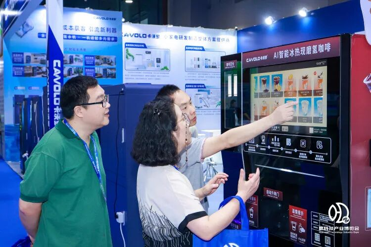
观众在「AI 智能冰热现磨氢咖啡」机触屏前操作；机身为同行企业卡沃罗品牌（标识已作模糊处理，画面人物面部亦已作模糊处理）2026HST 第十届广州国际氢科技产业博览会现场（2026-05，本报告研究组实拍；B 级现场事实）
3.4 范式跃迁综合对标：从“灰产会销”到“全生命周期精准干预”的八维重构矩阵
通过上述全维度的临床病理机制梳理，中国氢健康产业正在发生一场历史性的结构对标跃迁：
| 评估维度 |
传统灰产会销阶段（2014–2020） |
现代精准生活方式干预阶段（2024–2026+） |
跃迁背后的底层驱动力 |
| 1. 目标人群画像 |
模糊泛化为“老弱病残”，无差异收割中老年退休群体 |
9 大精准垂直细分人群（糖尿病、溃疡创面、皮肤炎症、帕金森、失眠、肥胖、三高痛风、抗衰女性、运动健身） |
病理机制清晰化、慢病患病率飙升、全生命周期主动健康意识觉醒 |
| 2. 宣传话术内核 |
“包治百病、神水神气、逆转癌症、停药根治” |
“选择性抗氧化应激、辅助细胞抗炎、改善微循环、日常细胞健康管理生活方式” |
拒绝伪科学与神化概念，严守生活方式与辅助医学的法律与学术红线 |
| 3. 主导产品形态 |
单一沉重、插电依赖的万元级电解制氢大设备（吸氢机、水机） |
“轻量化、便携免电、固态储放氢微孔材料、高频快消品”矩阵（杯芯、含片、干膜布、中药热灸贴、足浴片、微压舱） |
供给侧新材料技术突破（固态材料水解制氢），产品形态从反人性走向顺人性 |
| 4. 客户客单价与决策门槛 |
¥15,000 – ¥26,000 / 台（极高决策阻力，一锤子买卖） |
几十元至数百元 / 盒（快消品轻决策）＋ 几千元（高端家用微压舱） |
消除购买决策障碍，契合大众高频日常消费心理 |
| 5. 渠道形态与获客成本 |
封闭式地下体验店、熟人拉人头集会、高压私域会销；获客成本（CAC）极高且不可持续 |
品牌天猫/京东公域旗舰店、泛美业院线、连锁药房日化货架、合规社群电商；CAC 稳步下降 |
摆脱地下灰产网络，全面融入主流现代大健康商业流通渠道 |
| 6. 商业复购与客户生命周期价值（LTV） |
复购率为 0%；设备卖断后企业失去后续现金流，逼迫继续开拓新韭菜 |
月度/季度高频自发复购（>40%）；剃须刀+刀片模式使企业 LTV 较传统提升 5~8 倍 |
耗材化快消品天生具备消耗属性，构建持续造血的商业现金流飞轮 |
| 7. 政策合规与舆情风险 |
处于市场监管打假、央视曝光、公安经侦立案的暴风眼；涉嫌非法行医与传销 |
严格恪守食品接触（GB 4806）、食品助剂（GB 2760）、化妆品安全规范或严肃三类械字号；零舆情风险 |
法律权属明晰，主动切割“治病”原罪，拥抱合规阳光发展 |
| 8. 大众认知心理基石 |
建立在信息不对称、伪科学恐吓与老年人迷信盲从之上 |
建立在 1,100+ 篇 PubMed 严谨论文、真实 RCT 人体证据与自身健康理性感知之上 |
消费者心智成熟，从“被忽悠”走向“因科学而主动选择” |
中国氢健康产业双轨商业模型对比：重型硬件单次博弈 vs 固态氢高频快消（麦肯锡尽职调查单体经济模型）。
全方位对比了客单价（AOV）、年复购率、获客成本（CAC）、客户生命周期价值（LTV）及 24 个月累计经营现金流模拟曲线，直观揭示了轻资产高复购快消品模式在规避会销风险与实现飞轮增长上的确定性优势。
📊 读图指引- 看什么：三条线分别为 AOV（客单价）、CAC（获客成本）、LTV（用户生命周期价值），左右对比两种模式。
- 核心比率：LTV／CAC 大于 3 才具备可复制性；硬件模式该项长期低于 1.5。
- 口径说明：CAC 按线下体验店单客摊销估算，含房租与讲师提成，不含品牌广告。
💡 关键洞察- 判断一：硬件卖断模式的现金流集中在首单，复购为 0，任何获客成本上升都会直接击穿单店模型。
- 判断二：耗材复购模式的 LTV 由复购频次驱动，8~12 次/年的复购足以覆盖高于硬件的 CAC。
- 行动启示：这不是"卖贵还是卖便宜"的选择，而是"一次性毛利"与"终身现金流"两种生意的选择。
3.5 大众认知进阶：从“被动受骗迷信”走向“理性科学自驱的日常健康生活方式”
这场需求端与目标客群的根本性转变，最终汇聚为中国消费者对“氢”这一分子的认知范式大觉醒：
去神化与科学平民化： 消费者逐渐明白，氢分子不是可以包治百病的“太上老君仙丹”，它在本质上是一个“极其安全、极易穿透、具备独特选择性抗氧化能力的最小气体分子”。它不能起死回生，但它能以极低的生理代价，日积月累地帮助机体中和最毒恶的代谢废物（⋅OH），修复受损的线粒体，抑制无菌性慢性炎症。这种去神化的科学理性，才是产业健康基石的真正确立；
从“医疗治病依赖”走向“生活方式医学（Lifestyle Medicine）”： 大众不再把氢当成“生了重病才去医院救命”的治疗药，而是将其视为与“规律作息、优质睡眠、地中海饮食、适度运动”并列的现代生活方式健康干预因子。无论是早晨一杯高溶氢活水、午后一片固态发泡含片、睡前一次中药热灸贴敷与富氢泡脚，氢健康正润物细无声地融入中国亿万中产与银发家庭的日常生活，构筑起抵御慢病与衰老的第一道防线。
CHAPTER 03 RECAP · 章末小结
九大人群背后只有一条界线：给药途径决定宣称边界
- 会销的根源是单价结构。出厂成本 2,000–5,000 元、终端 1.5–2.6 万元的产品无法在商超与电商自然动销，线下体验馆是少数能消化该单价的渠道形态；话术夸大是这个结构的产物，不是起因。
- 九大人群各有独立的循证边界。证据最硬的是银屑病水浴与 COPD 吸入；特应性皮炎尚无大规模人体双盲 RCT；糖尿病、帕金森等只能做辅助干预定位——宣称边界必须与证据等级严格绑定。
- 最常见的越界方式，是给药途径错配。用皮肤水浴的文献去背书「喝氢水治皮肤病」，在专业医生面前会被当场证伪；途径错了，证据再硬也不成立。
第四章 标杆案例深度剖析
THE DEEP DIVE ON BENCHMARK CASES
MUQI Technology deliberately left the finished-equipment business behind, focusing on materials and consumables and turning competitors into customers.
本章要点 · 标杆案例：MQ TECH 固态氢创新实践
- 不做整机是主动放弃 "专注材料与耗材"表面是退让，实质是避开与所有整机客户的正面竞争，把同行变成客户——这是上游供给方最可规模化的位置之一。
- ICR 技术平台的护城河 微孔晶格储放氢的烧结工艺、溶出速率控制与防潮钝化构成难以短期复制的工艺壁垒；37 项专利（15 项发明）是这条护城河的形式化证据。
- MUQI Inside 的赋能逻辑 四级赋能（原料—配方—产品—品牌）把"卖原料"升级为"卖可上市的产品方案"，在客户侧同时降低合规与研发门槛。
- LTV 结构差异 设备卖断的复购为 0；耗材模式复购 8–12 次/年。这不是定价策略的差异，是两种生意的差异。
4.1 战略破局：为什么坚定选择“不做整机、专注材料与快消耗材”
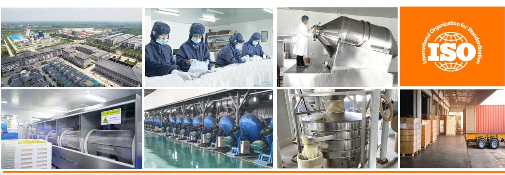
八格厂区组图：航拍、装袋、不锈钢设备、ISO、洁净车间、蓝罐线、制粒、装车木齐科技官网 emuqi.com；企业自述材料，B 级
在传统氢健康企业普遍扎堆于组装家用吸氢机、富氢水机等硬件设备的红海竞争中，木齐科技（MQ TECH，山东木齐健康科技有限公司） 走出了一条截然不同的产业创新路径。
面对重型设备“单台售价高、获客决策慢、无耗材复购、渠道高度依赖会销”的行业通病，木齐科技管理层在战略初期确立了清晰的产业定位准则：
“把氢健康从设备型产品转化为可嵌入、可定制、可复购、可场景化的材料与耗材解决方案。”
这一战略定位的深层商业逻辑在于：
- 规避重资产硬件同质化内卷：传统电解槽硬件组装门槛逐步扁平化，单纯做整机极易沦为价格战与账期泥潭；而底层材料研发具有极高的技术壁垒、配方专利与制造 Know-How，能够构筑长期定价权。
- 切入全生命周期高频复购生态：硬件设备是一次性买断，商业天花板极低；而将固态氢材料做成“随身水杯滤芯、日常口服含片、护肤眼贴、卫浴足贴”，能够直接对接亿万大众日常健康消费，形成源源不断的现金流飞轮。
- 构建平台化赋能网络（“Intel Inside”模式）：不与终端品牌争夺渠道，而是作为上游底层核心技术提供商，赋能全球小家电、美妆个护、净水设备、中医药养生连锁及跨境出海品牌，实现产业生态价值的最大化共赢。
4.2 技术底座：ICR 智控释溶固态氢技术平台
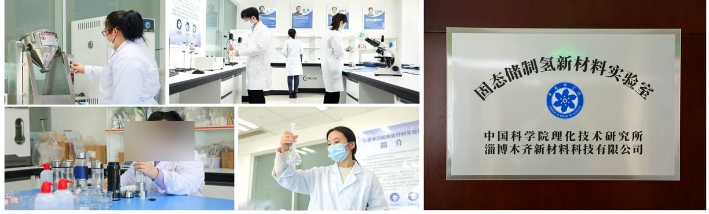
左为四张实验室操作照；右为银白金属牌匾，镌固态储氢新材料实验室（画面人物面部已作模糊处理）木齐科技官网 emuqi.com；企业自述材料，B 级
木齐科技的核心技术引擎为自主研发的 ICR（Intelligent Controlled Release）智控释溶固态氢技术。该技术突破了传统金属单质剧烈反应和不可控析氢的工程瓶颈，通过多相微孔复合陶瓷晶格载体，实现了氢气在常温常压下的安全储存、可控释放与长效溶存。
4.2.1 核心工程参数与物理化学指标
- 气液平衡浓度：在常温常压敞口水体中，稳定维持溶解氢浓度在 1,200 ~ 1,500 ppb（1.2 ~ 1.5 ppm），达到常压物理饱和极限区间。
- 宽水质适应与零机械承压：区别于传统金属镁基材料对反渗透纯水的单一依赖及封闭容器析氢带来的高压爆炸风险（如部分海外竞品需加装特殊泄压阀），ICR 微孔陶瓷具备优异的宽水质适应性（自来水、矿泉水、纯净水均可稳定反应），常压温和释放，无需泄压阀等机械释压构件。
- 负氧化还原电位（ORP）：出水 ORP 稳定处于 -300 mV ~ -500 mV 极佳抗氧化还原活性区间，有效中和强氧化自由基。
- 酸碱度（pH）自适应缓冲：出水 pH 值稳定维持在 7.4 ~ 8.5 弱碱性健康区间，绝不产生传统劣质强放氢介质常见的强碱性（pH > 10）水质劣化现象。
- 超长溶存半衰期：得益于微孔陶瓷结构对水分子团的微簇团化改造（NMR 半峰宽显著收窄至 50-65 Hz），氢气在密闭容器内的物理释放半衰期高达 18 ~ 24 小时，彻底解决电解氢水“几十分钟迅速挥发归零”的消费痛点。
4.2.2 知识产权与产学研护城河
- 专利集群：木齐科技累计布局核心专利 37 项，其中极具商业与法律壁垒的发明专利达 15 项，全面覆盖材料复配、高温微孔造孔工艺、固态储氢微球结构、以及下游各类快消耗材应用形态。
- 产学研生态：长期与中国科学院相关研究所、山东大学及知名材料国家重点实验室保持联合课题研发机制，建立微观理化表征、重金属迁移溶出检测（GB 4806）及自由基清除荧光检测实验室；并正与上海交通大学氢科学中心（丁文江院士团队）联合探索固态储氢材料在绿色农资与现代农业领域的产业化开发。
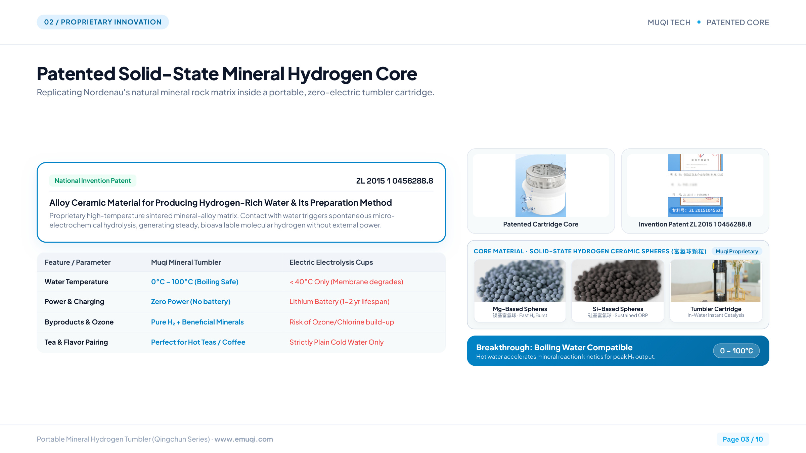
产品彩页：镁基／硅基陶瓷球与滤芯实物照，标注发明专利号 ZL 2015 1 0456288.8木齐科技（MUQI Technology）产业资料库
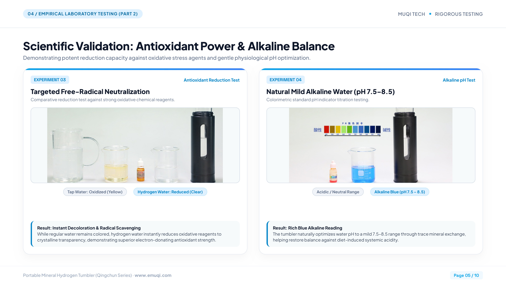
两项显色演示：左侧氧化剂褪色试验，右侧 pH 比色卡碱性（7.5–8.5）测试木齐科技（MUQI Technology）联合实验室影像档案
4.3 “吃、喝、洗、护、泡”全场景消费品矩阵
基于 ICR 固态氢底层技术的赋能，木齐科技构筑了覆盖日常生活全场景的五维消费品矩阵：
| 场景代码 |
场景定位 |
核心代表产品 |
作用机理与消费价值 |
核心技术参数与交付形态 |
| 吃 |
口服内源吸收 |
富氢泡腾片 / 口嚼片 |
遇水瞬间崩解产生高饱和氢水，或直接口服经肠道缓慢吸收，调理胃肠微生态与内脏抗氧化 |
固态压片形态，溶氢浓度 1,200~1,500 ppb，食品级辅料标准 |
| 喝 |
日常便携饮水 |
元气红芯氢春杯 / 滤芯 |
免插电即冲即饮，长效产生 1,200 ppb 弱碱性矿物质活性氢水，抗疲劳与代谢支持 |
微孔陶瓷滤芯模块，零电力长效缓释，适配便携杯及净水系统 |
| 洗 |
面部抗衰清洁 |
富氢冷制手工精油皂 |
微细氢气泡深层渗透毛孔，温和清除多余皮脂与老化自由基，修护泛红敏感肌肤 |
矿物催化冷制工艺，高密度微气泡渗透，无皂基化学残留 |
| 护 |
局部微循环修护 |
媄梦成真富氢眼贴 / 面膜 |
局部释放高活性氢分子，渗透眼周及面部真皮层，舒缓眼疲劳、淡化干纹与色素沉积 |
纳米微孔干膜/晶片结构，原位催化释氢，透皮吸收率高 |
| 泡 |
全身水疗与足疗 |
暖氢宝热灸贴 / 足浴片 |
结合温热发热与固态释氢，扩张足底微血管，深层驱寒排湿、改善失眠与重度疲劳 |
恒温 40~45℃ 自发热，微界面持续释氢，道地本草精粹复配 |
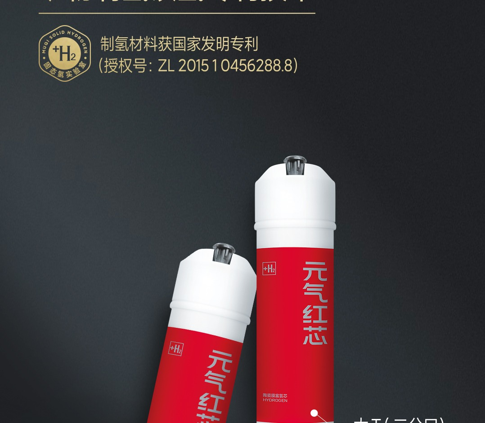
「元气红芯」富氢滤芯两支产品照，标有发明专利授权号 ZL 2015 10456288.8木齐科技（MUQI Technology）产业资料库
4.3.1 核心外用创新细分：氢面膜、草本跨界提取与多形态眼部护理
- 天然植物提取物与固态氢跨界融合（沙棘提取物 + 固态氢洗浴球/洁面皂）：在个护与沐浴品类中，单纯添加无机矿物往往面临气味与肤感单一的局限。木齐科技创新性地将山西吕梁“野山坡”野生沙棘（Sea Buckthorn）高活性提取物（富含高浓度天然维生素 C、超氧化物歧化酶 SOD、黄酮类及不饱和脂肪酸）与固态释氢微孔基质深度复合，开发出“富氢沙棘养肤沐浴球”与“冷制沙棘氢皂”。入水释放微米级富氢气泡的同时，溶出金黄色沙棘抗氧化精华，形成“植物抗氧化 + 分子氢选择性抗氧化”的双重屏障修复功效。
- 氢面膜的材料学突围（从水相挥发到干膜布原位释氢）：针对传统湿态面膜“水相难锁氢、出厂即挥发”的痛点，行业探索出无水干膜布常温长效固存释氢介质、使用前与精华液原位激活释放活氢的全新形态，有效解决货架期有效浓度归零问题。
- 氢气眼罩与眼部外用产品（设备类 vs 固态免电类）：
- 设备类外接吸氢眼罩 / 吸氢护目镜：采用医用级亲肤硅胶密封罩，通过微型导管外接专用家用/商用制氢机或氢氧雾化机，持续向眼周输送高纯度低压氢气（如 66% H2 + 33% O2），主打重度干眼症改善、眼底黄斑变性辅助干预与视神经微循环滋养；
- 智能温热吸氢眼罩：结合石墨烯微电加热片与内置微型储放氢芯片，实现 38~42℃ 多档调温热敷与温和释氢协同；
- 免电固态氢冷热眼贴（如木齐“媄梦成真”等）：利用体温激活固态微孔陶瓷晶片释氢，完全脱离电缆与电池，实现差旅、办公与夜间睡眠随身即贴即用。
- 木齐科技固态释氢材料（产品名“米氢”）与道地非遗瑶药的跨界融合（木齐科技 × 广西宏瑶生物科技股份有限公司）：在传统泡浴与足疗大健康领域，木齐科技与素有“中国瑶医药之乡”之称的广西金秀瑶族自治县行业龙头——广西宏瑶生物科技股份有限公司（宏瑶股份）达成深度战略合作。将专为泡浴研发的固态释氢微孔材料与金秀国家级非遗道地瑶药（千年瑶浴古方）深度复合，联合开发“富氢瑶药足浴包”与“HGI 氢素瑶浴泡腾片”，入水即刻形成 -500 mV 强负电位纳米微气泡氢水，促使瑶药黄酮、皂苷等活性物质透皮吸收率提升 3~6 倍，成为“现代微孔固态氢 + 传统少数民族道地本草”深度赋能的典型标杆。
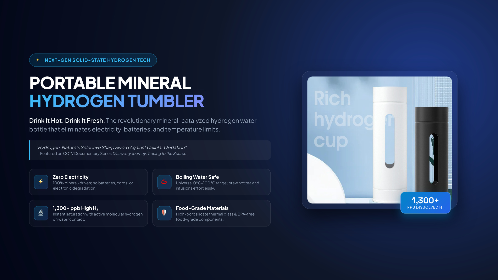
深蓝渐变版式并置白色与黑色矿物质氢水杯实拍，右侧标注溶氢量参数（参数为企业自述）。木齐科技《The “Hydrogen Plus” Strategic Initiative》（2026-01）；企业自述材料，B 级
4.4 商业模式创新：“MUQI Inside”四级赋能飞轮
木齐科技系统构建了面向全产业链的 “MUQI Inside”平台化四级赋能飞轮：
- Tier 1 基础原料赋能（核心释氢微孔陶瓷球/微粉）：向全球水处理、功能水壶、卫浴花洒企业输出标准化食品级微孔陶瓷微球原料；
- Tier 2 核心部件赋能（水瓷元芯 / 复合滤芯）：向小家电与商用净水机品牌提供模块化后置微孔释氢滤芯，实现即插即用；
- Tier 3 消费品 ODM/OEM 赋能（全场景快消耗材）：向美妆日化、健康连锁提供固态氢泡腾片、手工氢皂、冷热眼贴、热灸贴等成品定制；
- Tier 4 跨界生态联合赋能（氢中医药与现代农业）：向中医院所及现代农资龙头输出氢三伏贴芯片、硅基富氢肥料等综合解决方案。
这一赋能模式的核心特征在于：作为上游材料与技术提供商，不直接涉足终端 C 端零售争夺渠道，而是赋能下游多元品牌客户。
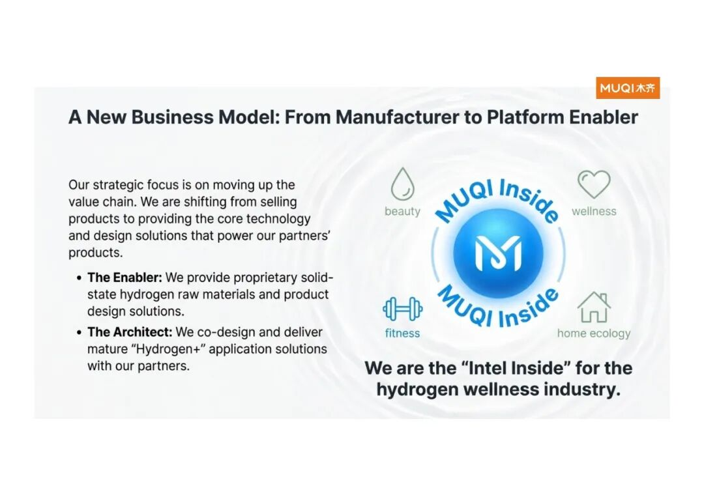
中央为 MUQI Inside 圆形标识，外圈同心波纹环绕美妆、健康、健身、家居四类应用图标。木齐科技《The “Hydrogen Plus” Strategic Initiative》（2026-01）；企业自述材料，B 级
4.5 商业经济学对比：设备卖断模式 vs 耗材复购模式的 LTV 重构
将传统电解吸氢机企业的“硬件设备一次性卖断模式”与基于固态氢材料的“快消耗材复购模式”进行单客经济学（Unit Economics）与客户生命周期价值（LTV）对比：
| 商业维度 |
传统电解吸氢机企业（设备卖断） |
固态氢快消耗材矩阵（复购模式） |
咨询战略评析 |
| 单客初始购买门槛 |
¥15,000 ~ ¥26,000（决策极重） |
¥99 ~ ¥299（决策极轻） |
耗材模式初次获客阻力仅为设备的 1%，转化率显著提升 |
| 客户复购周期 |
3 ~ 5 年一次（甚至 0 复购） |
30 ~ 45 天一次（年化 8~12 次） |
耗材形成高粘性周期性复购现金流，摆脱“一次性买卖” |
| 渠道获客成本（CAC） |
极高（需长期免费体验馆、讲师提成） |
极低（公域电商裂变、私域社群团购） |
设备模式 CAC 吞噬 50% 以上毛利；耗材模式履约轻便 |
| 政策合规抗风险度 |
脆弱（极易被定性为虚假宣传与违规会销） |
稳固（食品接触与日化标准，合规边界清晰） |
监管重拳下，设备会销面临查封风险；快消品依法合规经营 |
| 单客 3 年累计 LTV |
约 ¥18,000（一次性榨干，后劲乏力） |
¥2,400 ~ ¥4,800（持续滚雪球增加） |
耗材模式单客终身价值更健康，具备强劲的长期复利效应 |
彩页列出 NMR、SGS（GB/T 5750.4-2006）、无机盐质检中心三项检测与报告缩略图第三方检测机构报告与食品接触材料合规文件
上方为品牌方与供应链两个说明框，下方自上而下列出原料、成品、SOP、生态四级合作模块。木齐科技《The “Hydrogen Plus” Strategic Initiative》（2026-01）；企业自述材料，B 级
4.6 消费类氢产品横向全景对标：单点应用突破与全产业链生态的客观对比
在消费类氢健康赛道逐渐升温的过程中，市场上陆续涌现出若干代表性的参与者与产品形态。横向审视整个行业生态，各主要参与者依托不同的资源禀赋与技术路径，形成了差异化的竞争位势。客观、中立地评估各主要主体的战略定位、核心技术与商业表现，有助于全景透视中国氢健康产业的真实竞争格局。
4.6.1 市场上主要消费类氢产品参与者的模式定位与特征
- 奇麟正维（浙江奇麟正维医学科技 / 欧莱雅美次方与天图领投 / 富氢干膜布与团标牵头人）
奇麟正维实验室、洁净车间与自动化产线实景三图；附团体标准 T/ZJRHXH 0017-2025企业公开产品资料与电商平台在售页面
- 模式定位：专注美妆个护富氢干膜布及微囊产氢原料。完成由天图投资“美丽领航基金”（欧莱雅美次方 BOLD 参股）领投的数千万元 A 轮融资；牵头起草国内首个《化妆用具 富氢干膜布》（T/ZJRHXH 0017—2025）团体标准；在浙江湖州建设规划年产 10 亿片干膜布生产基地，主推一代固态储氢干膜布（“面膜伴侣”，累计出货近 5,000 万片）与二代“海珀氢 HybridH2Gen™”微囊液态原位产氢技术，服务资生堂、珀莱雅等国内外头部美妆品牌。
- 客观特征：在美妆快消单点、大牌美妆供应链渗透及国际头部美妆资本背书上具备显著的先发优势与爆发力；产品线高度聚焦于面部护肤与膜布代工，未涉足大通量水处理、中医药贴敷或农业领域。
- 华氢生物（华氢时代北京生物科技 / 北京工业大学马雪梅教授团队背景）
- 模式定位：依托北京工业大学生命学院与北京氢分子研究中心，在国家科技成果赋权改革背景下成立，由氢气生物学权威学者马雪梅教授领衔；联合共建“北工大-华氢生物未来健康研究院”，聚焦氢气特异性分子传感器机制、细胞能量重编程、再生医学与创伤修复，研发氢医用敷料、氢气面膜、微纳氢水及细胞级健康产品。
- 客观特征：科研基础扎实，在“氢再生医学”与前沿分子机制（如 TRPC4 复合体受体调控）研究上具备鲜明特色；商业定位偏重于高校前沿技术向高端严肃医美、院线创面修复与特医级产品的产学研转化，大众快消品工业化放量与跨界生态拓展仍处于成长探索期。
- 青元气（上海氢美健康科技 / 上海交大丁文江院士团队背景）
- 模式定位：依托上海交大高校轻合金材料学背景与 HydroMg 镁基储氢材料专利，聚焦于中高端氢健康个护、女性护理及功能性化妆品（氢护理凝胶、护肤喷雾）。
- 客观特征：科研专注度高，在凝胶外用护肤及专业医美体验渠道深耕，形成了高校科研成果转化的鲜明标签；品类拓展目前以特种凝胶外用为主，硬件与多场景耗材矩阵处于逐步延伸阶段。
- 清德氢能（苏州清德氢能源科技 / 北京大学分子工程苏南研究院产学研背景）
- 模式定位：依托北京大学化学与分子工程学院储制氢科研团队与北京大学分子工程苏南研究院（江苏苏州/常熟产学研基地），在长三角落地纳米水解储制氢技术成果转化。产品线横跨高精氢储运、大健康日化（化妆品用纳米制氢原料、氢精华液、原位制氢包）以及前沿现代氢农业（自主研发问世的“氢分子肥料增效剂”，实现随水冲施与固体配肥缓释，改良土壤微生态并促进养分吸收）；
- 客观特征：具备北京大学国家队顶尖学府科研背书与长三角地方产业创新研究院的硬核技术支撑，在固态纳米水解制氢机制与涉农新质生产力（氢肥增效剂）上具备高度差异化的技术占位；目前其商业化重点偏向工业储能与特定高附加值农业、护肤原料输出，在日化大众快消全渠道放量及中医药贴敷全场景生态拓展上仍在持续发力。
- 上海全人生物（日本“今日水素”亚太总代理 / 负氢离子胶囊）
- 模式定位：国内较早涉足氢健康领域的代表企业之一，作为日本“今日水素”（Mainichi Suiso）在亚太地区的全权总代理，主打高端固态负氢离子膳食补充剂与高端会展模式。
- 客观特征：在高端进口营养品渠道与高净值养生客群中具备较长时期的品牌沉淀；其商业本质为海外原厂品牌的代理分销，供应链依赖外部授权，自主材料研发与制造环节较少。
- 日照生命谷（日照生命谷生物科技 / 等离子体负氢离子固化技术）
- 模式定位：主打等离子体负氢离子制备技术，以纳米级牡蛎壳/矿物为载体固化负氢离子，开发负氢离子粉体及固态压片；曾与大型直销大健康营销体系深度合作。
- 客观特征：在固态粉体储氢与大健康渠道网络中具备较强的市场推广能力；产品形态偏重于口服粉体与压片，在流体净水工程化嵌入与日化快消场景的拓展相对受限。
- 新兴设备与外用参与者（外接吸氢眼罩、石墨烯发热眼罩、微高压氢氧健康舱）
- 模式定位：将氢技术与局部理疗或微高压环境融合，涵盖连接吸氢机的硅胶眼罩、便携石墨烯发热眼罩，以及 1.3~1.5 ATA 微高压富氢氧健康舱（氢舱），探索眼周微循环及全身性抗衰康复。
- 客观特征：丰富了氢健康专业设备形态；但硬件客单价高、决策链长，依赖外部带电设备，需与便携随身耗材形成协同。
- 木齐科技（MQ TECH，山东木齐健康科技 / 上游无机微孔固态氢材料与 B2B 赋能商）
- 模式定位：定位于固态释氢无机材料研发与上游核心部件供应链平台，推行品牌自有的“MUQI Inside”赋能模式（企业口径）。核心技术为微孔复合陶瓷释氢技术（企业内部代号 ICR），常温常压敞口水体维持 1,200~1,500 ppb 近饱和浓度，溶氢半衰期 18~24 小时；累计布局专利 37 项（其中发明专利 15 项）。产品涵盖无机释氢陶瓷微球、滤芯元芯、口服泡腾片、富氢手工皂、免电冷热眼贴、氢三伏贴芯片、硅基富氢肥料及饲料添加剂等。
- 客观特征：定位于上游材料与核心部件赋能商（B2B），不直接运营下游零售品牌，多场景覆盖面较宽（日化、净水、中医药外治、现代农业），抗单一品类政策与周期波动风险能力强；业务推进高度依赖下游品牌客户的渠道动销与市场教育能力，同时国际化进程中海外权威认证仍处于逐步完善阶段。
4.6.2 全景对标矩阵（Benchmark Matrix）
通过核心商业与工程维度，对上述主要阵营进行横向综合对照：
| 评估维度 |
木齐科技（MQ TECH） |
奇麟正维（美妆干膜布） |
华氢生物 / 青元气（高校科研转化） |
清德氢能（北大苏南研究院） |
渠道代理与粉体同行（全人/生命谷） |
| 产业链角色定位 |
上游核心材料与部件 B2B 平台（Inside 模式） |
垂直领域 B 端原料/OEM 代工 + 品牌孵化 |
严肃医美与再生医学产学研直营/院线 |
高校国家队储制氢技术转化 + 农业/护肤核心原料供应商 |
品牌代理分销，或特定大健康大客户代工 |
| 底层技术与专利基础 |
37 项专利（15 项发明），产学研联合攻关 |
20 余项专利，主导起草干膜布团标（T/ZJRHXH 0017） |
高校机制与储氢专利（北工大/上交大背景） |
北京大学储制氢团队专利，固态纳米水解制氢核心机理 |
依赖日本原厂专利授权，或等离子体粉体转让 |
| 释氢机理与介质特征 |
无机微孔陶瓷晶格催化，宽水质常温常压缓释（18-24h） |
固态储氢干膜（遇水原位放氢）+ 微囊原位产氢 |
医用敷料、创面修复液、纳米氢水、护肤凝胶 |
纳米水解释氢材料、固态储氢包、氢分子水解反应 |
牡蛎壳/矿物载体固化负氢离子粉体与压片 |
| 覆盖应用场景 |
日用快消、净水流体、氢中医贴敷、硅基农业、生态养殖 |
深度聚焦面部美妆护肤（面膜、微囊原料） |
医美创面修复、细胞再生、特医健康转化 |
现代氢农业（氢分子肥料增效剂）、大健康护肤原料（精华/制氢片）、便携氢动力 |
膳食补充剂口服胶囊、大健康养生粉体/压片 |
| 主要优势 |
跨场景通用性强，抗单一品类周期波动，不与客户争利 |
大牌美妆供应链渗透快，资本背书强，品类爆发力强 |
学术信誉高，前沿分子机制与创面修复研究深入 |
北大最高学府科研背书，农业肥料增效剂产品率先落地，技术原创度高 |
存量客群品牌认知深，直销/私域渠道网络成熟 |
| 面临的挑战 |
依赖下游品牌客户动销，海外权威认证待进一步完善 |
业务高度集中于面部美妆单点，品类跨界难度较大 |
工业化低成本放量与多场景商业化周期较长 |
消费端大众日化快消品牌渗透较浅，多场景中医药及水处理渠道仍待拓展 |
供应链受制于海外授权，或受特定直销客户波动影响 |
4.6.3 产业格局综合评析：垂直单品突围、终端贴牌代工与上游通用赋能的模式分野
横向审视上述主要参与主体，中国消费类氢健康产业已呈现出三条截然不同、各具特色的商业演进路径：
- 模式一：垂直细分赛道深耕型（以奇麟正维、青元气等为代表）
- 核心逻辑：以特定高景气度细分消费赛道（如美妆干膜布、敏肌修护凝胶）为切入口，深度绑定一线美妆集团或专业医美机构，打深打透垂直应用场景。
- 商业表现：战略专注度高，品牌认知与行业占位明确，能够迅速承接美妆个护等高溢价宿主行业的增长红利；其潜在挑战在于业务抗风险能力受单一类目景气度制约较大，向上游基础矿物材料烧结或横向向涉水净水、农业等跨界领域的延伸门槛较高。
- 模式二：高校国家队前沿技术跨界转化型（以华氢生物/北工大、青元气/上交大、清德氢能/北大苏南研究院等为代表）
- 核心逻辑：依托国家顶级高校及科研院所（北京工业大学马雪梅团队、上海交通大学丁文江/何前军团队、北京大学分子工程苏南研究院等）的原始创新专利与国家重大科研成果转化赋权机制，将前沿分子传感、微纳储氢及水解产氢技术定向转化为高技术壁垒产品（如前沿创面敷料、功能性凝胶、氢分子肥料增效剂等）。
- 商业表现：科研信誉卓著，在高端院线医美、严肃创面修复及特种农业新质生产力赛道上卡位精准；其核心考验在于如何从实验室成果平稳过渡到大规模低成本量产，以及如何构建适应大众消费市场的快消动销与多维生态网络。
- 模式三：上游材料与核心部件通用赋能型（以木齐科技 MQ TECH 为代表）
- 核心逻辑：定位于产业链中上游的“核心材料与技术部件赋能平台”（B2B “Inside”模式），聚焦于无机微孔陶瓷材料微观烧结工艺与固态储放氢配方，不自建终端 C 端品牌，而是向下游小家电、净水器、美妆、中医贴敷及现代农资等全场景品牌客户输出原材料微球、模块化元芯与半成品耗材。
- 商业表现：跨品类赋能优势突出，能够同时分享家电、日化、中医康养乃至绿色农业多赛道的成长增量，跨周期抗风险能力较强；由于自身不涉足终端零售，较好地规避了终端会销的政策与舆论风险；其核心挑战在于业务增长高度依托于下游品牌客户的市场教育与渠道动销效率，同时要求企业在基础材料研发、产品一致性控制与多场景标准制定上持续进行高强度投入。
CHAPTER 04 RECAP · 章末小结
把同行变成客户：材料位的商业结构
- 「不做整机」是主动放弃正面竞争。专注材料与耗材，实质是避免与所有整机客户同场竞争，把同行变成客户——这是上游供给方少数可规模化的位置之一。
- 护城河由三段工艺构成，专利只是形式化证据。微孔晶格储放氢的烧结工艺窗口、溶出速率控制、防潮钝化，这三段难以短期复制；37 项专利（其中 15 项发明）是它的可核验外壳。
- MUQI Inside 把「卖原料」升级为「卖可上市的产品方案」。四级赋能（原料—配方—产品—品牌）在客户侧同时降低合规门槛与研发门槛；对绝大多数缺乏材料底层积累的终端品牌，这是比自研更快的路径。
两种生意结构的差异：设备卖断 vs 耗材复购
| 维度 | 设备卖断 | 耗材复购 |
|---|
| 复购次数 | 0 | 8–12 次/年 |
| 收入形态 | 一次性硬件毛利 | 持续耗材现金流 |
| 渠道关系 | 交易型，卖完即断 | 服务型，绑定整个使用周期 |
| 竞争焦点 | 渠道资源与话术 | 配方、稳定性与合规 |
| 规模路径 | 靠铺点，边际成本不降 | 靠客户数与配方复用，边际成本递减 |
第五章 产业链全景解剖与跨界延伸生态
THE FULL INDUSTRY CHAIN AND CROSS-SECTOR SPILLOVER
Value pools are not found in midstream assembly but at the two poles: upstream materials and downstream usage scenarios.
本章要点 · 产业链全景解剖与跨界延伸生态
- 三段结构各有各的堵点 上游计价割裂（部件按电子件、材料按化工品）、中游组装门槛极低（小家电拼装）、下游八场景分散。价值不在中游，在两端。
- 海关编码的制度赤字 六位 HS 全球一致（8543.30／2201.90／2804.10），八位以上各国自定。"氢有编码，氢产品没有"——直接造成跨境贸易的统计黑洞。
- 氢农业是政策最友好的延伸 农业农村"绿色低碳新质生产力"政策对无化学残留的氢生态种养有明确倾斜，且不受医疗器械准入约束，是产业外溢阻力最小的方向。
- 八场景的共同前提 所有延伸场景都依赖同一前提：产品必须便宜、易用、可复购。重型设备无法进入其中任何一个新场景。
5.1 产业链上游：核心原材料、技术部件与海关归类特征
三件金属与白色电解槽小部件平摆陈列，属上游核心部件形态。2026HST 第十届广州国际氢科技产业博览会现场（2026-05，本报告研究组实拍；B 级现场事实）
三支透明滤芯并列陈列，内部为褐色颗粒状滤材，端头为快接接口；现场未见成分或氢浓度标示。2026HST 第十届广州国际氢科技产业博览会现场（2026-05，本报告研究组实拍；B 级现场事实）
5.1.1 电解设备技术路线之上游部件与计价割裂
- 质子交换膜（PEM）与膜电极（MEA）：全氟磺酸质子交换膜是电解槽的核心心脏。长期以来，高端膜材料由美国科慕（Chemours，Nafion 膜）等外资巨头垄断，单平米采购成本高达数千元；近年来山东东岳集团等国内头部企业取得突破，推动了国产化替代进程。
- 供应链报价的度量衡割裂（Alibaba 国际站实证）：对主流跨境 B2B 平台的供应链采价实测表明，电解技术路线呈现出明显的“计价单位离散与标准化不足”特征：
- 电解质膜片：按面积计价，报价集中于 $1.10 ~ 3.00 / cm²（MOQ 1 cm²）；
- 催化膜电极（MEA）：按片计价，报价介于 $62.50 ~ $208.30 / 片；
- PEM 电解槽堆栈：按台计价，报价在 $100 ~ $600 / 台；
- 整机装配（氢水杯/吸氢机）：3000 ml 级家用吸氢机报价 $460 ~ $1,350 / 台，而便携氢水杯最低出厂价仅 $7.20 ~ $8.64 / 只，高档品牌机型达 $38.00 ~ $55.00 / 只（相差 7.6 倍），且起订量（MOQ）普遍已放宽至 1 只/台。
- 产业链洞察：上游报价之所以从面积、片、台到整机跨越多个数量级，本质上反映出电解制氢产品尚未建立统一的行业分层技术语言与工业标准化计价基准。
- 贵金属电极镀层：电解槽双极板与微孔析氢电极通常采用钛基材表面沉淀沉积纳米级铂（Pt）、铱（Ir）等稀贵金属作为催化剂。由于贵金属行情波动剧烈，电解堆在整机中成本占比超 40%。
5.1.2 材料固态水解路线之上游资源与海关税则归类
- 高纯金属储氢载体：主要选用高纯度原镁（纯度 99.9%~99.99%）、硅基材料及天然无机非金属功能矿物（电气石、麦饭石、高活性多孔硅藻土等）。中国作为全球第一原镁生产国（占全球原镁产量 80% 以上，主要分布于陕西榆林、山西运城），为固态释氢材料提供了低成本、战略性资源保障。
- 微孔晶体陶瓷基质：以材料研发企业为代表，采用精细化工研磨、微纳米孔隙造孔剂复配、真空高温气氛烧结等严密工业流程，将原矿转化为具备特定微孔孔径、高比表面积的三维晶相骨架。
- 进出口海关 HS 编码的现实约束（“氢有编码，氢产品没有编码”）： 对海关进出口税则（HS Code）的实证梳理揭示出中国氢健康产品在国际贸易中的制度空缺：
- 高纯氢气（压缩/液化）：拥有独立法定税号 2804.10.00.00（监管条件 A/B，需通关单）；
- 金属储氢合金材料：归入 2850.00.90（其他氢化物、氮化物、硅化物及硼化物）；
- 预包装富氢水：在海关税则中只能申报为 2201.90.90.00（其他水、冰及雪，与普通纯净水同号，全文无“氢”字）；
- 氢水机/电解杯设备：通常按“电解设备”申报 8543.30.00.90，或按“水过滤净化设备”申报 8421，或按“其他小家电”申报 8509。
- 贸易战略含义：由于缺乏专属的氢健康终端产品海关编码，产品进出口面临按用途自由裁量归类的合规摩擦，这也进一步证明了该产业在国家宏观统计与税则体系中仍处于“寄生于传统母体行业”的成长早期阶段。
圆形展台环形陈列数十个金属外壳电子模块，可见散热栅与电路板2026HST 第十届广州国际氢科技产业博览会现场（2026-05，本报告研究组实拍；B 级现场事实）
5.2 产业链中游：制造装配与代工生态
5.2.1 硬件设备代工：门槛极低的小家电拼装模式
依托广东省佛山市顺德区、南海区以及深圳市宝安区完善的小家电产业链配套，电解氢水杯、吸氢机的硬件整机制造门槛已被大幅拉低。
- 调研发现，在主流工业品与外贸供应链平台上，小型电解氢水杯的最小起订量（MOQ）已低至 1 只（如公版白牌出厂报价仅 $7.20 ~ $8.64 / 只，约合人民币 50~60 元），支持“一件起批、一件代发与快速丝印贴牌（OEM）”。
- 这种极低的进入壁垒导致大量缺乏核心研发实力的商贸团队能够快速涌入市场，导致硬件外观高度同质化、产品质量参差不齐。
5.2.2 材料与快消品智造：高门槛的工艺控制与合规壁垒
相较于小家电的拼装组装，固态氢快消品的生产则涉及深厚的无机材料高温烧结工艺与严格的洁净车间生产规范：
- 微孔陶瓷微球烧结：需精确控制 1,000℃~1,200℃ 高温还原气氛烧结曲线，确保微孔孔径维持在纳米/微米级分布，同时确保晶体结构牢固、在长期水流冲刷下绝不出现脱粉碎裂与有害重金属溶出。
- 快消耗材洁净灌装：氢气眼贴、面膜需在十万级 GMP 净化车间完成无纺布复合与真空包装；氢泡腾片对车间相对湿度（RH）要求极严（通常需控制在 20%~25% 以下），防止物料在压片包装前发生潮解自发反应。
足浴场景三步图示：投放氢片入水、35 美元套餐升档至 55 美元、加购眼罩另计（价格为企业自述的海外方案）。木齐科技《The “Hydrogen Plus” Strategic Initiative》（2026-01）；企业自述材料，B 级
红色台布上平排陈列十余只银色开关电源（带散热风扇），未见电解标示2026HST 第十届广州国际氢科技产业博览会现场（2026-05，本报告研究组实拍；B 级现场事实）
五支「元气红芯」水处理滤芯并列陈列，不锈钢网外筒配内芯结构；现场未见氢浓度标示，不能认定为富氢滤芯。2026HST 第十届广州国际氢科技产业博览会现场（2026-05，本报告研究组实拍；B 级现场事实）
5.3 产业链下游及八大多维延伸场景
随着固态氢材料技术的成熟与氢分子生物学研究的纵深推进，氢健康产业的应用生态正在打破单一依赖“家用小家电与散装饮水”的狭隘局面，全面向国民经济、现代农业、中医药现代化及全球商用大健康的八大高价值场景延伸：
5.3.1 场景一：慢病管理与院外生活方式医学协同
重点针对我国庞大的慢性病人群（高血压、2型糖尿病、高尿酸血症、代谢综合征），通过日常持续饮用富氢水与固态氢片冲饮，辅助清除过量羟自由基（·OH）、改善血管内皮功能与胰岛素抵抗，与常规慢病药物形成“生活方式医学协同”。
5.3.2 场景二：银发经济与机构养老照护
民政部统计公报显示，截至 2024 年底全国拥有注册登记养老机构 4.0 万个，床位达 507.7 万张，其中护理型床位占比攀升至 65.7%。在长期卧床老人的压疮护理、失能老人抗炎抗氧化支持、阿尔茨海默病认知保护方面，免电便捷的固态氢水疗、氢热灸足贴展现出极高的嵌入价值。
5.3.3 场景三：大健康消费与泛美业快消（富氢干膜布、多形态眼部护理、概念去伪存真与江苏新型医用敷料）
我国限额以上化妆品年零售额达 4,653 亿元（全渠道交易总额突破 1.1 万亿元）。随着消费者抗光老化、敏肌屏障修护意识觉醒，氢分子在泛美业、日化快消与医用敷料赛道正迎来从“概念噱头”向“技术硬核”的深度演进：
富氢干膜布与无水固态面膜（打破水相挥发悖论，重构百亿功能护肤赛道）：
- 传统湿态面膜的物理痛点：传统水剂富氢面膜面临一个不可逾越的物理化学悖论——氢气分子量极小且常温溶解度低，在普通铝箔袋湿液中极易穿透包装逸散，出厂一周后袋内活氢几乎归零，长期被质疑为“无效概念水”；
- 无水固态干膜布与冻干微晶突破：行业先锋企业（如天图资本与欧莱雅美次方联合领投的奇麟正维，以及华氢生物等）创新开发出“无水固态储氢干膜布”。将固态微晶储氢材料与活性多肽、透明质酸等护肤成分固化锁结于干态植物纤维膜布中，常温密封可稳定储存 24 个月。消费者使用时注入纯净水或精华液，瞬间原位水化活化，30 秒内持续释放高达 1,200~1,500 ppb 的高浓度纳米级活氢微泡，直达真皮层中和紫外线与外界压力诱发的有害羟自由基（⋅OH），有效抑制基质金属蛋白酶-1（MMP-1）对胶原蛋白的分解降解；
- 出货规模与行业标准化：奇麟正维富氢干膜布累计出货量已突破 5,000 万片，并推动国内首个《化妆用具 富氢干膜布》（T/ZJRHXH 0017—2025）团体标准正式落地实施，法定确立了原位溶氢浓度与微孔缓释的测量规程，正推动整个功能护肤赛道向“有证可查、有数可测”的高附加值阶段升级。
多形态眼部外用护理全景深度解剖（气相护目镜 vs 石墨烯热敷眼罩 vs 固态免电冷热眼贴）： 现代人长时间凝视电子屏幕，导致视疲劳与干眼症（尤其是睑板腺功能障碍 MGD 型干眼）发病率呈爆发态势。眼表微环境中高活性氧水平与促炎细胞因子（IL-1β、TNF-α）聚集是关键病理机制。市场围绕眼部护理演化出三条截然不同的产品路径：
- 形态一：临床与体验馆外接气相吸氢护目镜（设备依赖型）：采用医用级硅胶密封眼罩，外接专用制氢机或氢氧机，将高纯度氢气直接输送至眼部微密闭空间，使眼表角膜与结膜长期浸润在高分压气态氢中。其优势在于局部抗氧化穿透力强，但严重依赖插电与管路连接，笨重且无移动便携性，主要用于眼科门诊、视光康复中心及线下体验馆；
- 形态二：智能石墨烯发热吸氢眼罩（轻奢电子小家电）：将石墨烯发热膜与微型释氢芯片或导气微孔集成，通过 USB 或内置锂电实现 40℃~45℃ 恒温热敷（物理软化睑板腺固化的异常脂质栓子）与持续释氢双效合一。优势是热敷体感极佳、可重复使用，但单机零售中枢偏高（¥299~¥699/台），属于耐用小家电逻辑；
- 形态三：免电微孔固态氢冷热眼贴（快消品，如木齐“媄梦成真”等）：利用眼周表皮微汗及亲水凝胶基质自发激活固态微孔晶格释氢芯片，单片独立铝箔包装，即拆即贴，在体温与微汗下自发释放温和活氢，持续 18~24 小时微量浸润，兼顾了“零带电安全、差旅随身便携与百元内高频自发复购”，成为眼部护理最容易规模化渗透的快消品形态。
概念去伪存真与双向辩证审视：“氢气卫生巾”伪科学营销反思 vs 真实固态微孔原位释氢芯片（功能性卫生巾、成人失禁纸尿裤、褥疮创面功能性辅料）的医工跨界： 随着氢健康概念在下沉市场的普及，市场呈现出鲜明的两极分化态势：一方面存在利用前沿概念进行虚假包装的劣质乱象，另一方面也孕育着真正依托微孔储放氢材料向女性护理、失能老人照护与创面辅料深度渗透的硬核创新。必须坚持辩证视角进行深度剖析：
- 视角一：伪科学概念炒作与违规营销乱象的坚决清退（假）： 市场上部分投机商家在普通日用卫生巾内仅添加一条普通无纺布色带，便大肆炒作成所谓的“固态负离子氢芯片”，虚假宣传能“抗宫颈衰老、平衡菌群、消除妇科自由基乃至治疗妇科炎症”，售价暴涨至普通产品的 3~5 倍。从物理化学与医疗器械监管常识审视，经血排放呈间歇性且卫生巾处于半开放透气环境，缺乏真实水解活化机制与稳定溶氢微水相，微量噱头添加物根本无法在经血中实现有效经皮吸收；此类宣传完全是假借氢医学前沿科研之名，行十年前“纳米银/负离子卫生巾”虚假包装之实，严重违反《医疗器械监督管理条例》与《广告法》关于非医疗器械严禁宣称疾病预防和治疗功效的铁律，目前正受到国家药监局与市场监管部门的严厉查处与清理；
- 视角二：真实固态微孔原位释氢芯片与功能性护理/创面辅料的硬核跨界（真）： 与纯概念噱头截然不同，真正的固态微孔晶格材料与储氢功能膜布已在材料工程层面取得实质性突破（如木齐科技研发的无纺布基底微孔释氢芯片，幅宽 2cm~37cm，单芯片原位产氢量 > 200,000 ppb，pH 4.0~9.0 宽温区自发温和响应）。当微孔芯片接触人体体液（经血、尿液、创面渗出液）的微量水分时，能持续、长效地原位释放生理浓度活性氢分子（H2），利用氢分子的纳米级穿透力与选择性抗氧化特性，发挥极其明确的生理修护价值：
- 女性经期功能性卫生巾：打破传统卫生巾“仅充当物理吸水介质”的被动定位，利用原位持续释放的活性氢特异性中和局部潮湿闷热微环境下的高毒性活性氧（ROS/⋅OH），抑制促炎细胞因子表达，缓解经期局部黏膜红肿、瘙痒与氧化应激，从“被动吸液”升级为“主动微环境抗氧化抗炎护理”；
- 失能老人成人失禁纸尿裤：长期卧床与失能老年群体常年受尿液、粪便长期浸渍及水解酶刺激，极易诱发重度失禁相关性皮炎（Incontinence-Associated Dermatitis, IAD）与会阴部皮肤屏障崩解。将富氢功能芯片复合进成人纸尿裤导流层，芯片遇尿液即刻缓释活性氢，有效阻断局部皮肤脂质过氧化级联反应，构建起强韧的抗氧化保护屏障；
- 压疮/褥疮贴与慢性难愈性创面功能性辅料/创面敷料：重度压疮（褥疮）与糖尿病足溃疡（DFU）患者由于局部受压缺血缺氧，创面长期处于“过量 ROS 堆积、持续 M1 促炎型巨噬细胞浸润”的恶性炎症期。将富氢微孔芯片与水胶体/医用泡沫敷料交联结合制成褥疮功能性辅料，覆盖渗出液后原位持续渗透活性氢，直达深层受损组织清除恶性自由基，下调 TNF-α 与 IL-1β，靶向诱导创面巨噬细胞由 M1 促炎型向 M2 抗炎组织修复型发生表型极化，促进 VEGF 表达与毛细血管网快速爬行，成倍加速创面肉芽新生与创口平整闭合。这一“卫生巾芯片 → 纸尿裤芯片 → 褥疮功能性辅料”的完整技术谱系，展现出固态释氢微孔材料在医养结合与高价值耗材领域的广阔前景；
- “氢洗发水、氢沐浴露”的化学悖论：人体在洗发和洗澡过程中处于大量温热水流的冲刷环境，表面活性剂泡沫在头皮或皮肤表面停留时间仅数秒至数分钟。即使在出厂灌装时勉强充入微量氢气，在开瓶倒出以及遇热水搓洗揉搓的瞬间，由于氢分子极高的扩散系数与气液相平衡常数，微量氢气会在数秒内 100% 逃逸至空气中，残留洗液实测活氢浓度为绝对的 0 ppb。此类产品既无长效缓释晶格，又无物理靶向附着，属于典型的“挂羊头卖狗肉”式收割智商税。
长三角（江苏常州西太湖医疗器械产业园、泰州中国医药城等）高端医用敷料与新型“氢创面敷料”研发前沿及法规边界：
- 江苏产业集群与医工交叉优势：江苏省（常州西太湖医疗器械产业园、苏州 BioBAY、泰州中国医药城等）是全国规模最大、技术储备最雄厚的新型医用敷料、医用水凝胶与高分子研发制造高地；
- 严格的医疗器械合规申报路径：国家药监局与江苏省药监局一类/二类器械监管界定明确规定，第一类医疗器械（如“苏械备”医用冷敷贴、冷敷凝胶）严禁添加具有药理学、免疫学或代谢作用的成分，更不得在品名中直接标注“氢”字申报；因此，正规的医工转化路径是将固态释氢微孔材料或水凝胶敷料作为物理微环境调控辅料，以第二类医疗器械“医用无菌敷贴/水凝胶敷料（械注准）”形式开展合规申报，通过严谨的临床前与临床试验验证其在物理屏障与创面愈合上的真实效能。
5.3.4 场景四：商用大通量富氢水机与场景化直饮（体验营销催生的商业水吧红利）
近年来，商用大通量富氢水机在企业办公茶水间、养生体验会所、社区直饮水站、高端健身茶室及月子中心等场景热度飙升，出货量与商业关注度远超以往。这一现象背后包含着两大深层产业动因：
- 线下体验营销（会销）的“市场科普铺路石”贡献：在产业发展早期，遍布全国的线下健康体验馆与体验营销品牌，虽然在销售话术上长期面临监管规范化挑战，但客观而言，正是这些体系在过去数年间承担了全行业最繁重、成本最高昂的消费者启蒙与市场教育工作，将“富氢水、负电位、抗氧化、清除自由基”等概念普及至大众心智，为当前商用富氢水机的全面爆发打下了深厚的认知底座。
- 商用水机的技术与耗材演进：传统大型商用机多采用大功率电解槽，面临高能耗、结垢严重、定期酸洗麻烦等维护难题；近年来，主流解决方案已演化为“商用反渗透/纳滤主机 + 后置复合固态富氢微孔陶瓷滤芯（固态释氢耗材）”。原水流经微孔陶瓷瞬间即可溶解稳定达 1,200~1,500 ppb 的富氢小分子团水，水质甘甜弱碱且无电解副产物异味，不仅降低了水机硬件开模与运维成本，更形成了“商用机租赁铺设 + 滤芯 3~6 个月周期性高频更换”的高粘性现金流模式。
5.3.5 场景五：氢生物学向现代生态农业的纵深延伸（氢农业、硅基肥料、光伏绿氢种养与绿氨/绿肥闭环）
氢分子不仅作用于人体细胞，作为植物第四大气体信号分子，在植物生理调节、现代绿色生态农业与零碳新能源循环中正释放出颠覆性价值，并迅速形成了与光伏绿电、绿色化工投入品交织融合的前沿产业新范式：
清德氢能宣传图、夜景渲染图与氢分子肥料棉花田海报三拼上海交通大学氢科学中心周培教授团队示范项目公开资料
国家级科研梯队与氢农业调控机制：北大苏南研究院、南农大与上交大产学研集群：
- 南京农业大学（江苏南京，沈文飚教授团队）学术开拓：沈文飚教授团队是国内最早系统提出并开展“氢农业”科学研究的领军力量，早在 2011 年便在国际植物学期刊率先揭示了分子氢作为植物第四大气体信号分子的调控机制，证实氢气通过调节植物内源生长素、水杨酸（SA）与茉莉酸（JA）信号通路，激活植物保护酶系（SOD、CAT、POD），大幅提高作物抗旱、抗盐碱与耐重金属毒性，并在江苏省多地开辟了富氢水稻、大田蔬果示范基地；
- 北京大学分子工程苏南研究院（江苏苏州/常熟）与清德氢能“氢分子肥料增效剂”问世：依托北京大学化学与分子工程学院储制氢科研优势，在江苏常熟共建北京大学分子工程苏南研究院，并成功孵化苏州清德氢能源科技，研发问世了极具产业前瞻性的“氢分子肥料增效剂”（氢农学与固态水解释氢增效肥料）。该产品打破了传统单一依靠大型集中式电解富氢水灌溉的工程瓶颈，采用安全高效的固态微纳米水解供氢介质，既可随水冲施、滴灌，亦可直接与固体复混肥复合配施，在土壤根际微区长效缓慢释放分子氢，不仅显著改良土壤根际微生态与有益菌群结构，更有效激活根系微循环吸收能力，大幅提高氮磷钾大元素及中微量元素肥料的利用率，成为长三角农业新质生产力的转化标杆；
- 上海交通大学氢科学中心（周培教授团队）宏观理论奠基：上交大氢科学中心副主任兼农业氢生物学负责人周培教授团队在国际顶级环境生态期刊《Critical Reviews in Environmental Science and Technology》发表权威长篇综述（A critical review for hydrogen application in agriculture: Recent advances and perspectives），系统奠定了分子氢在农业全生命周期应用的科学底座，引领了我国农业水解制氢装备标准化与产业化示范。
木齐科技硅基肥料（Silicon-based Hydrogen Fertilizer）与“氢-硅协同”新型投入品：硅（Si）是植物构建细胞壁机械强度、强健茎秆抗倒伏、防御真菌侵染的第四大关键营养元素。木齐科技结合自身无机微孔材料与矿物材料核心技术，创新研发了硅基富氢材料与硅基肥料系列。该产品施入土壤或水体后，既能在根际微区长效缓慢释放氢分子，又能持续溶出植物极易吸收的水溶性有效单硅酸（H4SiO4）与活性镁元素，形成强大的“氢-硅协同增效”：不仅激活土壤有益微生态与固氮菌群，更能成倍提升作物对氮磷钾大元素肥料的吸收转化效率，在化肥农药施用量削减 15%~20% 的前提下实现稳产增产，成为现代农业“减肥增效”与绿色可持续转型的标志性新质生产力。
高溢价特色农产品实证标杆：上海“氢大米”、“氢水果”与特色食用菌（“氢蘑菇”）示范落地：氢生物学已从基础机理跨越至大面积田间实证与高品质农产品商业化销售。在上海崇明、金山以及长三角多个国家级现代农业示范园区，已形成了一批极具商业辨识度的标杆实践：
- “氢大米”示范实证：在水稻分蘖期与灌浆期采用高溶氢微纳米气泡水进行精准节水灌溉，促进根系发达深扎与土壤固氮微生态活化，水稻抗倒伏与抗病害能力显著增强；稻谷籽粒饱满度大幅提升，直链淀粉/支链淀粉比例优化，大米口感软糯香甜，富硒、富锌等有益微量元素吸收率提升，每亩综合增产达 10%~18%，成为地方政府与高端品牌定制生态大米的标志性载体；
- “氢水果”（草莓、甜瓜、葡萄、柑橘）示范实证：富氢水根灌结合叶面微喷，显著提高果实叶绿素光合速率与可溶性固形物（糖度测定普遍提高 1.5~2.5 度），果实果香更浓郁、果型更匀称；由于氢分子有效抑制采后乙烯释放与果皮过氧化，草莓等浆果类货架期大幅延长 3~5 天，田间采收综合损耗率削减超 30%，实现 30%~50% 以上的高溢价销售；
- “氢蘑菇 / 富氢食用菌”（香菇、平菇、金针菇等）栽培实证：食用菌生产对环境湿度、杂菌感染与氧化应激极其敏感。在培养基拌料、发菌期以及出菇喷淋中引入富氢水微喷与固态释氢微孔基质培育，氢分子能够激活菌丝体内源抗氧化防御酶系，促进菌丝粗壮浓密、长势旺盛，有效抵御木霉等绿霉杂菌的竞争污染；在出菇期，富氢微环境促使原基形成提前 2~3 天，原基分化更加整齐密集，子实体菌盖肥厚、菌柄结实粗壮，显著提高香菇多糖等活性营养物质沉积，商品菇一级品率提升 15%~20%，采后不易开伞褐变，展现出广阔的食用菌工厂化高附加值应用前景。
现代生态养殖赋能与创新型“氢饲料添加剂”（大幅降低鸡蛋破损率 30%~50%）： 在集约化蛋禽与肉禽养殖中，夏季高温慢性热应激是全行业的致命痛点：鸡只通过加速浅表呼吸散热，导致肺部二氧化碳排出过量引发呼吸性碱中毒，血液游离碳酸根离子（CO32−）和钙离子（Ca2+）转运机制遭受重创，直接抑制输卵管蛋壳腺内关键酶——碳酸酐酶（Carbonic Anhydrase, CA）的活性，导致蛋壳基质方解石晶体排列杂乱、蛋壳变薄发脆，规模化蛋鸡场破蛋率常年高达 3%~8%（单场年经济损失达数十万至数百万元）。针对这一行业痼疾，江西农业大学、南京农业大学等科研团队及以木齐科技为代表的先锋企业创新开发出固态微孔矿物“氢饲料添加剂”：
- 养鸡改善蛋壳质量，破蛋率大幅下降 30%~50%：将具备长效控释特性的固态微孔释氢矿物微粉按特定比例添加入蛋禽日粮或饮水系统中。微矿粉在肠道弱酸环境下稳定释放活性氢，穿透肠黏膜屏障进入血液循环，特异性中和输卵管腺上皮细胞过量活性氧，显著提升机体总抗氧化能力（T-AOC）、SOD 与谷胱甘肽过氧化物酶（GSH-Px）活性；显著增加空肠绒毛高度与 V/C 比值，保护肠黏膜屏障与矿物质吸收；有效修复输卵管腺体结构，恢复碳酸酐酶（CA）与钙结合蛋白活性，促使蛋壳基质中方解石晶体紧密有序沉积。多地养殖场连续对照监测实证表明，鸡蛋蛋壳厚度与蛋壳抗压强度显著提高，养殖全程破壳破损率大幅降低 30%~50%，蛋黄色泽浓郁红润，并可有效延长蛋鸡经济产蛋高峰期 1~2 个月，为养殖场带来极其显著的降损增收效益；
- 畜禽肉用动物抗热应激与促生长：针对肉鸡、育肥猪在夏季高温及长途转群过程中的严重热应激反应，氢饲料添加剂能有效下调血清皮质醇与炎性细胞因子（IL-6、TNF-α）水平，修复受损的小肠黏膜绒毛形态，提升营养物质吸收利用效率，使禽畜死淘率显著下降，料肉比明显改善。
富氢水生态水产养殖创新突破：上海交通大学氢科学中心周培教授团队引领“氢水养鱼、养虾”与绿色无抗养殖示范： 针对我国集约化、高密度现代水产养殖中长期存在的“水体底质恶化、氨氮及亚硝酸盐富集、突发天气与长途运输应激、弧菌与寄生虫频发、抗生素依赖”等行业重大瓶颈，上海交通大学农业与生物学院教授、农业农村部都市农业重点实验室主任、氢科学中心副主任兼农业氢生物学负责人周培教授团队在氢分子生物学赋能现代渔业领域开展了系统性、开创性的机理研究与示范工程，确立了“富氢水生态水产养殖（氢水养鱼、养虾）”的科学与产业范式：
- 微纳米富氢水双重调控机理（水体生态微循环 + 机体非特异性免疫）：周培教授团队深入揭示，通过高溶氢微纳米气泡发生技术将分子氢溶入养殖水体，不仅能改善底层水体的氧化还原电位（ORP），活化底泥有益菌群；在工厂化循环水养殖系统（RAS）中，通过氢营养反硝化技术（Hydrogenotrophic Denitrification, HD 系统），以分子氢作为自养反硝化细菌的高效电子供体，将剧毒的硝酸盐（NO3−）、亚硝酸盐（NO2−）与游离氨氮（NH3 − N）在自养菌作用下彻底还原为无害氮气（N2），且无需添加甲醇等外加碳源，从根源规避了有机二次污染；更关键的是，纳米级氢气微泡能穿透水生动物表皮黏膜与鳃丝微血管，特异性清除水温突变、转塘拉网或低氧翻塘所诱发的大量有害活性氧（ROS/⋅OH），显著上调鱼虾血清超氧化物歧化酶（SOD）、过氧化氢酶（CAT）及溶菌酶（LZM）活性，下调丙二醛（MDA）积累，全面激活水生生物机体的非特异性免疫应答；
- “氢水养虾”（对虾健康生态养殖与无抗防病）实证：在南美白对虾（Litopenaeus vannamei）的工厂化循环水养殖（RAS）与高位池示范中，引入富氢水微气泡增氧调水系统，对虾幼体溞状幼体及糠虾期变态成活率显著提升 15%~25%；在成虾养殖阶段，有效抵御极端暴雨台风天气引发的严重生理应激，弧菌感染率降低 35% 以上，显著遏制对虾“偷死病”和早期死亡综合征（EMS），养殖全程无需依赖化学抗生素与强氧化消毒剂，实现完全绿色健康的“无抗对虾”高溢价上市；
- “氢水养鱼”（淡海水高经济价值鱼类提质与异味脱除）实证：在加州鲈鱼、大黄鱼、石斑鱼、黑鱼等肉食性高密度养殖中，富氢水处理显著促进鱼类肠道有益菌（乳酸菌、双歧杆菌等）定植，改善肠道黏膜绒毛形态，提升饲料蛋白转化率，饲料系数（FCR）显著改善，料肉比下降 8%~12%，生长周期缩短 10~15 天，综合成活率提高 15%~20%；同时，氢分子的抗氧化与微生态调控显著抑制了淡水鱼体内导致泥腥味的土臭素（Geosmin）与二甲基异莰醇（2-MIB）合成与蓄积，出塘鱼肉肌纤维致密有弹性、游离鲜味氨基酸含量显著提升，鱼体鳞片光泽度佳，完全达到高端日料刺身与绿色有机水产品的严苛标准；
- 活体水产长途冷链暂养与“休眠减损”运输：在活鱼、活虾长途跨省冷链流通中，应用富氢低温微气泡水进行转运前暂养与充氢包装运输，氢分子有效抑制了水生动物在密闭颠簸环境下的剧烈呼吸跃变、组织酸中毒与血液乳酸过量堆积，将活鱼长途运输（>24小时）存活率由传统 80%~85% 跃升至 95% 以上，开辟了冷链鲜活水产百亿级流通减损的全新技术高地。
国家级产学研顶层联动：木齐科技携手上海交通大学氢科学中心（丁文江院士、周培教授团队）攻关“新型氢肥料”与现代农业应用，并深度参与全国氢农业研讨会议：
- 木齐科技深度参与全国氢农业研讨会议：作为国内固态微孔储放氢材料领军代表，木齐科技多次受邀参与全国氢农业学术研讨会与产业创新大会，从无机矿物多孔功能材料的维度向全国农学与氢科学专家系统输出工程化制氢与土壤改良路径；
- 联合上海交通大学氢科学中心（丁文江院士、周培教授团队）攻关新型氢肥料与生态应用：木齐科技依托自身在微孔陶瓷造孔、无机储放氢材料微观烧结与工业化量产上的深厚 Know-How，深度携手上海交通大学氢科学中心在轻合金固态储氢（丁文江院士团队）与现代农业氢生物学/水产生态应用（周培教授团队）领域的顶尖科研底蕴，正式启动了“新型氢肥料（Hydrogen-releasing Functional Fertilizers）”与“绿色生态水产养殖多孔释氢调水介质”的联合攻关与产业化开发。双方聚焦于攻克田间土壤高湿度、酸碱交替微环境下固态长效可控释氢以及水体微纳米释氢介质稳定性等重大材料学难题，将无机释氢晶相结构与水溶性有效硅、活性有机质基质深度交联，研制“土壤修复-微区释氢-增硅固氮”三位一体的第三代新型绿色固态功能肥料，构筑起从国家级前沿学术源头到产业化落地的最高研发壁垒。
“光伏绿电制氢 + 绿色种养殖”综合新能源解决方案（微电网原位消纳闭环）：近年来，随着分布式清洁能源向农业农村下沉，“农光互补”、“牧光互补”与“渔光互补”等综合新能源解决方案快速演进。通过在现代设施温室大棚顶棚、畜禽养殖舍屋顶或农牧荒坡铺设高转换率光伏组件，白天所发绿电直接驱动低功耗分布式制氢设备（PEM/ALK/材料水解反应），制取清洁高纯绿氢：
- 原位消纳于大棚种植：绿氢直接溶入现代水肥一体化滴灌与微喷管网，实现大棚高溶氢微纳米气泡水定时定点精准灌溉，全天候提升作物抗逆与光合效率；
- 原位消纳于生态养殖：在规模化畜禽与水产养殖中，夏季高温极易引发畜禽全身性热应激反应导致采食量骤降、肠道屏障受损。光伏所制绿氢直接注入集约化养殖饮水管网与水产曝气循环系统，大幅降低肉鸡、生猪血清皮质醇与炎症细胞因子，提高料肉比与成活率，同时加速有害氨氮降解，摆脱抗生素依赖。这一模式彻底解决了农业大棚偏远地区绿电消纳与输变电瓶颈，构建起“光伏绿电 → 原位绿氢 → 绿色种养高附加值产出”的零碳农业微电网闭环。
“光伏制氢转制绿氨/氨水与绿色低碳肥料”产业链跨界交集：传统化肥工业（尤其是 Haber-Bosch 法合成氨）是全球高耗能、高碳排放的重灾区。随着光伏绿氢平价化发展，“光伏制绿氢 → 绿氨/氨水合成 → 绿色复合肥料制备”的技术路线在农业领域加速突破：
- 绿色氨水与绿氨合成：利用分布式光伏电解水制备绿氢，再与空气分离获得的清洁氮气在分布式温和催化装置中直接合成零碳绿氨（Green Ammonia, N2 + 3H2 → 2NH3）与农用高纯度绿色氨水，彻底斩断传统化肥生产对化石原料（煤、天然气）的高碳排依赖；
- 与硅基固态肥料的深度交联：制备所得的零碳绿色氨水，进一步与木齐科技的高活性水溶性硅基多孔矿物材料、有机碳质基质进行深度化学交联与物理螯合，创新转化合成为“零碳绿色硅氢氨复合肥料”。这种新型生态投入品兼具速效氮营养补充、长效缓释硅营养与微区释氢生物调节的三重功效，实现了清洁新能源（光伏）、绿色现代化工（绿氢/绿氨转化）与高品质农业投入品（绿色硅氢肥料）的深层次产业交集，为乡村振兴与国家农业“双碳”目标落地提供了极具颠覆性的综合范式。
5.3.6 场景六：氢中医与氢中药——分子氢赋能传统中医药外治现代化（氢三伏贴、神阙贴与热灸中药透皮）
宏瑶股份宣传页：金秀瑶浴产品陈列、ODM 服务卡与瑶浴提取液（「氢＋中药」产学研合作实景：金秀道地瑶药种植基地、宏瑶股份深加工产线与瑶浴提取液；合作方定制服务信息与联系电话已作脱敏处理）木齐科技「氢＋中药」产学研项目资料库（原始实拍由广西宏瑶生物科技股份有限公司提供）
中医药外治法（贴敷、热敷、泥灸、足浴、熏蒸）千百年来面临一个根本性瓶颈：中草药大分子活性成分角质层透皮吸收率普遍不足 5%~10%。分子氢技术的跨界介入，为传统中医药的现代化赋能打开了突破口：
- 氢药协同机理（分子氢作为“中药透皮吸收增效剂”）：氢分子是自然界最小分子（2 Da），具备极高的扩散系数与亲脂亲水双向穿透力，能够迅速穿透表皮角质层细胞间隙，打开微孔道，与中草药有效成分（如挥发油、黄酮、皂苷类）形成协同络合与靶向共递送，成倍提升中草药有效成分的透皮渗透深度与生物利用度。
- 固态释氢材料在中药外治中的增效应用（以木齐科技为例）：
- “固态释氢材料 ＋ 瑶药”产学研深度标杆：携手广西宏瑶生物科技股份有限公司（金秀中国瑶医药龙头）联合打造新一代富氢瑶浴/足浴： 针对传统中草药与瑶浴外治中长期存在的“水煎煮有效成分析出缓慢、角质层透皮吸收率普遍低于 5%~10%”的行业痛点，木齐科技与扎根于“世界瑶都·中国瑶医药之乡”广西来宾市金秀瑶族自治县的领军龙头企业——广西宏瑶生物科技股份有限公司（宏瑶集团 / 宏瑶股份，国家高新技术企业、广西专精特新企业、自治区级上市后备企业）建立了深度产学研战略合作。 双方将木齐科技自主研发的专为足浴与泡浴定制的固态释氢材料（固态储氢微孔陶瓷矿物复合新材料）与宏瑶生物的国家级非物质文化遗产金秀道地瑶药（千年瑶浴古方，分子级破壁萃取工艺）深度融合，创新研发推出“富氢瑶药足浴包”与“HGI 氢素瑶浴泡腾制剂”等现代化中药外治新品类：
- 微孔释氢与强负电位活化：该固态释氢材料入温水后瞬间原位持续缓释高浓度微纳米气态氢，使水体氧化还原电位骤降至 -500 mV ~ -531 mV 极佳抗氧化还原区间，并将水分子团显著窄化为高活性微簇水（NMR 半峰宽仅 45 Hz）；
- 透皮吸收率革命性跃升 3~6 倍：凭借氢分子仅 2 Da 的自然界极小尺寸与极高扩散系数，快速穿透足底涌泉穴及角质层细胞间隙打开吸收通道，促使金秀瑶药中的黄酮类、三萜皂苷类、多糖及生物碱等核心活性成分透皮生物利用度提升 3~6 倍；
- 权威资质与显著临床体感：该合作体系已锁定 2 项国家发明专利，获得消毒产品消字号卫生许可证、3 项权威理化检测报告与完整企业标准；大样本实测与用户长期监测显示，对改善顽固性失眠与提升深度睡眠质量的体感有效率达 85% 以上，对辅助平稳餐后血糖与改善糖尿病周围神经及下肢微循环障碍有效率超 80%，树立了“现代前沿氢科技 × 少数民族非遗道地本草”赋能乡村振兴与大健康快消的标杆样板；
- 氢三伏贴与氢穴位贴（冬病夏治现代化升级）：将中医经典“冬病夏治”三伏贴配方（白芥子、细辛、干姜、延胡索等）与固态释氢微晶芯片融合。利用伏天人体汗腺孔径舒张与体温自激活芯片温和释氢（40~42℃ 恒温发热），既温补大椎、肺俞、膻中等穴位之阳气，又强力促渗中药有效成分深层吸收并特异性清除深层炎性自由基，有效杜绝传统三伏贴发泡烫伤风险；
- 富氢本草热敷贴 / 关节贴：将固态氢释氢芯片与艾草、当归、生姜等道地中药成分复配，维持人体最舒适的 40~42℃ 恒温发热，温通经络与选择性消除肌肉关节无菌性深层炎症相得益彰；
- 神阙穴位贴（肚脐贴）：依托道医与中医经典脐疗法，利用神阙穴丰富表浅的腹膜微血管网，通过固态释氢芯片引导草药成分吸收，调理宫寒与亚健康虚寒体质；
- 氢中药足浴片与中药泡浴：突破传统中草药需长时间明火煎煮、有效成分析出缓慢的繁琐痛点，放入温水即溶出高浓度富氢微细气泡小分子团水，强效促渗中药精华经足底涌泉穴及下肢经络吸收。
5.3.7 场景七：高端医疗康复与微高压富氢氧健康舱（氢舱 / 氢氧微高压舱）
在高端医疗康复中心、运动康复基地、月子中心与高净值私人健康会所，微高压富氢氧健康舱（氢舱 / 氢氧微压舱）成为融合现代高压氧医学与分子氢抗氧化医学的旗舰级大健康设备：
压力等级与生理适应性分野（1.3 ATA vs 1.5 ATA）： 民用与商用轻压舱的工作压力通常界定在 1.1~1.5 ATA 之间，市场围绕实际使用体感与适应症演化为两大核心区间：
- 1.3 ATA（黄金温和康养区间，相当于水下约 3 米微压环境）：耳压变化非常轻微，绝大多数中老年人与亚健康人群无需频繁做咽鼓管调压吞咽动作即可轻松适应。在安全提高血浆物理溶解氧的同时，规避了高压引发的隐性氧化应激风险，主要用于家庭私人康养、慢性疲劳综合征调理、改善中老年深度睡眠与缓解脑部缺氧；
- 1.5 ATA（深度康复与商用增强区间）：舱内气压显著提高，血氧物理溶解度与组织弥散有效距离呈成倍级提升。该压力对舱体承压钢构与气密阀门提出极高工程要求，更适合职业运动员大运动量后的软组织微损伤快速修复、术后康复、中风偏瘫后神经功能重建以及医美抗衰会所引流。
“微高压富氧 + 受控分子氢”双重协同与防爆安全红线：
- 机理互补闭环：微高压氧环境能大幅提高血氧分压与线粒体三磷酸腺苷（ATP）合成，但细胞高氧代谢往往伴生过量超氧阴离子（O2−⋅）与高毒性羟自由基（⋅OH）（即高氧再灌注过氧化损伤）。此时同步注入微量分子氢，能利用氢分子的纳米级穿透力与选择性抗氧化特性，靶向淬灭高氧代谢诱发的恶性自由基，实现“高压深层供氧”与“氢靶向抗氧化解毒”的完美协同；
- 防爆工程安全红线：在富氧密闭空间内注入可燃气体氢气，对安全控制提出了严苛的工业级挑战。主流正规设备通过精密数字流量阀与电化学氢敏传感器，将舱内氢气浓度严格锁定在 1.5%~2.5% 的黄金安全窗口（远低于空气中氢气 4.0% 的燃烧爆炸下限），并配备双路独立超压安全阀、断电自动应急降压与强制防爆排风系统，杜绝任何安全隐患。
产品形态、商业价格梯队与行业标准化（QB/T 8049-2024）：
- 入门级便携软体折叠舱（1.3 ATA，高强度 TPU 材质）：零售价格约 ¥9,000 ~ ¥25,000，占地小、可折叠，主要满足普通家庭自用与基础慢病吸氧；
- 硬体单人智能舱（碳钢/航空铝合金/亚克力透明视窗，1.3~1.5 ATA）：零售价格约 ¥30,000 ~ ¥70,000，配备智能触控屏、负离子新风系统与影音交互，是高端私人家庭与社区康养体验馆的主力机型；
- 豪华多人房型氢氧复合舱（集成氢氧雾化、医用级净化与微细气泡加湿系统）：零售价格约 ¥80,000 ~ ¥200,000+（商用奢华定制级可达数十万至百万元以上），多进驻高端月子中心、运动康复中心与企业高管健康室；
- 行业规范指引：国家轻工行业标准《家用和类似用途微压富氧舱》（QB/T 8049-2024）的正式实施，终结了微压舱以往缺乏统一生产安全标准的混乱局面。上游材料企业（如木齐科技等）针对氢舱开发出耐高压专用固态微孔释氢滤芯与微纳米富氢加湿组件，构建起“大型硬件设备销售 + 周期性高频耗材更换”的良性盈利闭环。
5.3.8 场景八：全球跨境贸易与供应链输出
中国依托全球最完备的原镁/硅材料冶炼、陶瓷烧结与精细化工代工体系，正成为全球氢健康产品最重要的“世界工厂”。海关提单与腾道外贸大数据证实，中国产富氢水杯、吸氢设备、商用水机及固态氢原料大量出口至北美、欧洲、东盟及中东地区，在海外跨境电商与区域直销网络中占据重要供货份额。
腾道贸易记录检索页：共匹配 9 条（2021–2023 年），出口商为广州 Aukewel腾道海关数据（2023-10 至 2026-10 口径）
CHAPTER 05 RECAP · 章末小结
三段结构的堵点，与一个制度赤字
- 价值不在中游。上游计价割裂（部件按电子件、材料按化工品）、中游组装门槛极低（小家电拼装）、下游八场景分散——利润分布在两端：材料与配方在前，场景与复购在后。
- 「氢有编码，氢产品没有」。高纯氢气有独立税号，预包装富氢水却与普通纯净水同号、全文无「氢」字；终端产品缺乏专属编码，跨境贸易只能按用途自由裁量归类。
氢相关产品的现行海关归类（六位全球一致，八位以上各国自定）
| 产品 | 现行归类 | 贸易后果 |
|---|
| 高纯氢气（压缩／液化） | 2804.10.00.00 | 有独立税号，监管条件 A/B，需通关单 |
| 金属储氢合金材料 | 2850.00.90 | 归入其他氢化物、氮化物类，与功能无关 |
| 预包装富氢水 | 2201.90.90.00 | 与普通纯净水同号，属性不可见 |
| 氢水机／电解杯等终端 | 8543.30.00.90，或按水过滤设备 8421、小家电 8509 申报 | 归类自由裁量，合规摩擦与统计黑洞 |
第六章 竞争格局与企业生态图谱
THE COMPETITIVE LANDSCAPE AND CORPORATE ECOSYSTEM
About 180 firms form three main camps, and value capture concentrates where the Class III registration certificate and the materials sit.
本章要点 · 竞争格局与企业生态图谱
- 180 家企业的真实分层 99% 无医疗器械证，绝大多数属普通小家电或日用品。可核查活跃企业约 180 家，集中于粤、鲁、浙、沪。
- 三足鼎立而非混战 器械层（潓美双证）、材料层（固态氢供给）、渠道层（整机与会销）。价值捕获集中在"证"与"材料"两端。
- 国际对照不能直接比 中国 180 家无披露、韩国上市公司有披露——直接相比比的是两种披露制度，不是两种产业。本报告中韩对照只停在"方法可比"。
- 展会话语的迁移 从"单一能源氢"走向"氢健康与氢农业"多元共生，反映的是产业出口饥渴的转移，而非单纯口号升级。
蓝色特装展台全景：高大门头、天顶桁架与台下人流同框（展台属同行企业卡沃罗 CAVOLO，品牌标识已作模糊处理）2026HST 第十届广州国际氢科技产业博览会现场（2026-05，本报告研究组实拍；B 级现场事实）
6.1 180+ 存量企业图谱与产业集群分布
产业监测数据表明，中国目前具备可核查实体运营、拥有品牌或自主商标的氢健康相关企业约有 180 余家。在地理分布上，产业形成了极其鲜明的三大区域集群效应：
- 珠三角集群（广东广州、佛山、深圳）：依托全球领先的小家电制造与跨境贸易底座，集中了全国约 50% 以上的电解氢水杯、家用吸氢机整机代工厂。代表企业如广州卡沃罗（Cawolo）、深圳威世尔顿、奥科维尔（Aukewel）、日康等，以外观开模快、产能弹性大、电商运作敏捷见长。
- 山东半岛集群（山东淄博、济南、青岛）：依托山东深厚的新材料、先进陶瓷工业底蕴与海洋生物医药产业带，集中了全国最核心的无机固态储放氢材料与健康水处理介质产能。代表性标杆企业为木齐科技（MQ TECH），以微孔陶瓷固态储放氢材料为引擎，辐射全国乃至全球供应链。
- 长三角集群（上海、南京、杭州）：紧邻顶级医科大学与科研机构，专注于高门槛医疗器械资质申报、严肃临床试验推进与高端品牌建设。典型代表为拿下全国首张三类证的上海潓美医疗，以及专注于微细气泡技术仪器开发的科研企业。
「4 号馆 HALL 4」入口处人流鱼贯入场，导向牌与品牌墙并置。2026HST 第十届广州国际氢科技产业博览会现场（2026-05，本报告研究组实拍；B 级现场事实）
6.2 竞争阵营划分：三足鼎立
中国氢健康市场供给方可划分为特征鲜明的三大核心阵营：
| 竞争阵营 |
代表性主体 |
商业模式与产品特征 |
核心壁垒与优势 |
面临的战略风险与短板 |
| 严肃医疗器械派 |
上海潓美医疗 |
主打医院呼吸科与重症康复，拥有全国仅有的两张第三类医疗器械注册证，主推医用级氢氧气雾化机（AMS 系列） |
国家医疗器械准入的合法身份，进入公立医院与专家临床合作的独家通道 |
注册维护成本极高，适应症受限狭窄（仅限 COPD 急性加重期），无法快速下沉普通快消渠道 |
| 家用小家电与会销派 |
广州卡沃罗、威世尔顿、新乡宇安等百余家中小代工厂 |
组装电解水杯、便携吸氢机、氢水机；主要出货给电商白牌、海外买家或线下加盟体验店、会销渠道 |
供应链成熟，出厂成本控制极致，产品推新开模快 |
硬件同质化严重，缺乏核心材料技术，无耗材复购粘性，极易遭受地方市场监管整治 |
| 新材料赋能与快消派 |
木齐科技（MQ TECH） |
专注上游固态储放氢材料与全场景快消耗材；以平台化赋能模式服务下游品牌与供应链 |
37项专利技术底层，免电便捷，快消品多维高频复购，全生命周期客户价值（LTV）极高 |
需持续投入消费者教育与行业标准化建设，市场品牌协同网络需持续拓展 |
论坛区观众席：满座听众面向大屏，屏幕为个人简介页2026HST 第十届广州国际氢科技产业博览会现场（2026-05，本报告研究组实拍；B 级现场事实）
6.3 国际同业对照：中韩日欧产业特征对比
放眼全球视野，中国氢健康产业在产业链纵深与商业活力上具备不可替代的独特优势：
| 国家 / 区域 |
产业主导技术与形态 |
市场准入与监管环境 |
商业渠道与定价逻辑 |
与中国市场的互动关系 |
| 中国（China） |
双轨并进（电解设备 + 固态材料快消），全场景“吃喝洗护泡”全面开花 |
一张三类器械证；普通消费品以食品接触及日化标准监管为主；监管严厉打击虚假宣传 |
呈现原料锚、商品锚、疗效锚多元分化；线上电商与线下专卖并行 |
全球制造与材料创新中心，具备压倒性的大规模量产与低成本交付优势 |
| 韩国（Korea） |
传统功能陶瓷球与碱性还原滤芯为主 + 便携水壶 |
严苛执行 NSF/ANSI 认证门槛；KFDA 将部分碱性还原水发生器列入二类器械管理 |
深度绑定 Coway、清湖等租赁轨净水机 OEM 滤芯供应链；重视海外 B2B 出口 |
韩国本土功能陶瓷产能相对受限，品类偏重传统净水，亟需与中国具备规模化产能与新兴快消矩阵的领军企业深度产业协同 |
| 日本（Japan） |
包装铝箔袋富氢水饮料、高端电解水生成器 |
早期曾有特定保健用食品认定；后收紧功效声称，强调客观溶氢浓度检测 |
便利店与药妆店高频零售；大型家电连锁销售高端生成器 |
日本是氢医学学术发源地，品牌溢价高，但制造端逐步向中国供应链转移代工 |
| 欧洲（Europe） |
温泉疗养院（Spa Sanatorium）氢水浸浴、高端诊所吸氢体验 |
无任何氢医疗器械 CE 认证；严格执行 MDR 医疗器械与 EFSA 食品声称限制 |
服务打包计费（€14~30/次），完全没有会销“疗效锚”，注重身心放松体验 |
欧洲具备严谨的标准与高支付能力，但本土缺乏材料与整机制造业，是高价值潜在出口地 |
6.4 展会与组织生态的范式跃迁：从单一“氢能源”到“氢健康与氢农业”多元共生
近年来，在中国氢能产业的顶层战略规划、大型专业展会与行业组织生态中，正在发生一场极其深刻的范式迁移：以往高度聚焦于燃料电池、交通重卡与化工储运的传统“氢能源”大盘，在规划和展会中大量涌现出“氢健康、氢医学、氢农业”的高附加值跨界项目与独立展区。
6.4.1 从“能源氢”走向“生命与生态氢”的展会新图景
在由国家部委、地方政府或权威协会主办的各类高规格氢能产业博览会与行业盛会中，产业边界正在被迅速重构：
- 国家级氢能展会的展区扩容：如中国（佛山）国际氢能与燃料电池技术及产品展览会（CHFE）、世界氢能产业博览会（WHE）等头部盛会，已普遍从早期的“全清一色电堆、加氢机、管阀件”，演变为设立专门的“氢能生活方式与生命健康专区”、“氢农业与绿色应用生态展区”；
- 专业氢健康展会的垂直深耕：广州国际氢科技产业博览会（氢博会）已连续举办十届，成为全球氢健康设备最核心的供需对接枢纽；世博威·中国国际健康产业博览会（健博会氢健康展）则重点聚焦于氢健康与银发养老、中医药康复的跨界融合；
- 地方氢能商会与跨界联盟崛起：如淄博市氢能商会（木齐科技出任副会长单位）、山东省绿色低碳发展中心氢动能团队等地方组织，积极打破能源与大健康的壁垒，全力推动“氢进万家”由单一能源供暖走向千家万户的健康饮水、日常护理与绿色现代农田。
论坛现场一位演讲者，背景屏幕为氢医学发展时间轴（演讲者面部已作模糊处理）本报告研究组现场实拍（广州国际氢科技博览会 / 全国氢生物医学大会）
6.4.2 这一跨界融合的底层商业逻辑与宏观动因
为什么各大氢能产业规划与专业展会中，氢健康与氢农业项目会呈现爆发式增长？
- 第一，终端高价值、轻资产消纳诉求驱动：氢燃料电池交通与工业管网投资动辄百亿，基础设施（加氢站、输氢管道）建设周期漫长，行业普遍面临重资产沉淀与商业化盈利延迟的焦虑；而“氢健康、氢医学与氢农业”直接面向人、面向植物、面向亿万终端消费市场，具备投资周期短、产品附加值高、高频复购、不依赖长输管网的绝佳商业闭环特性，成为盘活区域氢能产业链最重要的“现金流发动机”；
- 第二，新质生产力与“双碳”绿色循环深度契合：各级政府在制定氢能中长期规划时，逐步认识到氢气不仅是“终极清洁能源”，更是跨界的“生物抗氧化介质”与“植物第四大气体信号分子”。将氢能科学赋能于大健康康养（应对老龄化）与现代生态农业（深度打通“光伏绿电制氢 + 绿色种养殖”综合微电网、“光伏绿氢制绿氨/氨水与绿色硅氢肥料”、减化肥减农药等全链方案），既契合“健康中国 2030”，又深度赋能乡村振兴与国家“双碳”循环经济，因而获得各级产业规划与大型氢能展会的高度青睐。
- 第三，全国标准化组织赋能：全国微细气泡技术标准化技术委员会（TC584）、全国抗菌表面性能标准化技术委员会等机构，持续推进测量规程与通用标准制定，成为推动行业走向正规化的中流砥柱。
CHAPTER 06 RECAP · 章末小结
180 家企业的真实分层：价值在「证」与「材料」两端
- 不是红海混战，是三层错位竞争。可核查活跃企业约 180 家，99% 无医疗器械证，绝大多数属普通小家电或日用品；器械层、材料层、渠道层各有各的护城河与变现方式。
第七章 制度环境、监管合规与发展堵点
INSTITUTIONAL ENVIRONMENT, REGULATORY COMPLIANCE AND BOTTLENECKS
Of the four institutional gates, entry and promotion are open, pricing is half open, and payment has not yet been opened.
本章要点 · 制度环境、监管合规与发展堵点
- 四道闸门，开了两道半 准入开（三类证仅潓美两张、限 COPD 急性加重期）、推广开（山东适宜技术直推村卫生室）、收费半开（编码 120300003 自主定价）、支付未开（支付目录全文无"氢"字）。
- 证不是通行证 证打开的是"能不能进医院"，不是"能不能宣称治病"。把准入当通行证，是 2024 年一批企业被处罚的共同起点。
- 标准立了尺子，没立门槛 GB/T 46918.2-2025 只规定"怎么测"，不规定"多少算合格"；2026 年 6 月团标给出应用规范，但仍是团体标准而非强制门槛。
- 支付缺位→自费成交→耗材化 这条因果链是全篇制度主干：无法进入支付，产品通常要便宜到能被自费决策接受；能把单价压到自费可接受区间的，目前主要是耗材这一形态；这不排除其他路径，只是它的前置条件最少。
7.1 四道闸门串联模型：一个可检验的制度解剖框架
关于中国氢健康产业，业内最常讨论两个问题：“产业何时爆发？”以及“政策究竟支不支持？”
在咨询实证视角下，这两个问题从根本上误读了制度运作机制：它们把政策误当成了一个非黑即白的二元开关。开关模型无法解释一个确凿的产业事实——为什么这个行业既有国家药监局核发的最高级别第三类医疗器械注册证，又有市场监管总局依法将其认定为“普通家用电器、绝非医疗器械”的严厉行政处罚；既有省级卫健部门将其纳入适宜卫生技术推广目录、直达村级卫生室，又有部委联合发布的银发康养政策方案中全文找不到一个“氢”字。
这四类行政事实发生在同一时期、同一国家、同一行政体系内。正确的制度分析不是问“支不支持”，而是解剖：一个氢健康产品从技术实验室走向病床、再走向支付方，必须跨过几道行政闸门？每一道当前处于何种状态？
基于中国卫生行政、医疗保障与市场监督的串联法理，氢健康产品通往主流医疗与合规商业的通路，被四道互为必要条件的行政闸门与一把横向国家量尺所严格锁定：
四道闸门的当前真实开放状态，可精确归结为：“准入开了，基层推广开了，价格半开，支付未开；标准立了尺子，但尚未确立合格门槛。”
| 闸门层级 |
主管部委 |
核心政策依据与法定事实 |
当前状态 |
产业断裂的后果与现实影响 |
| 第一道闸门：准入（能不能做） |
国家药监局（NMPA） |
上海潓美取得全国唯一的两张第三类医疗器械注册证（国械注准 20203080066 / 20233081929） |
开（窄口） |
仅核准 COPD 急性加重期一个适应症，其余 99% 未持证产品只能作为普通商品流通，严禁宣称任何疗效 |
| 第二道闸门：推广（能不能在基层做） |
国家/省卫生健康委 |
山东省卫健委 2023 年度适宜卫生技术推广项目名单（序号 27 泰安市中心医院推广至村卫生室/社区站） |
完全放开 |
卫生行政部门认可其技术操作安全性，允许在最基层的村级诊疗站点合法开展与普及体验 |
| 第三道闸门：价格（能不能收费） |
国家/省医保局 |
山东省医保局鲁医保发〔2025〕15 号文件：并入项目编码 120300003（一氧化氮吸入），全省自主定价 |
半开（自主定价） |
医院获得了合法立项收费的开单入口，但“自主定价”意味着公立医院缺乏政府价格背书，收费极为谨慎 |
| 第四道闸门：支付（谁来付钱） |
国家医保局 / 民政部 |
民政部等 14 部门《康复辅助器具产业扩能提质三年行动方案（2026—2028）》（民函〔2026〕48 号） |
未开（全文无氢） |
医保基金、长护险与民政补贴均未纳入“氢”任何子项，患者无法获得第三方报销，消费全靠自费承担 |
| 横向量尺：标准（怎么衡量） |
国家标准化管理委员会 |
国家标准 GB/T 46918.2-2025《微细气泡技术 水中微细气泡分散体系气体含量的测量方法 第2部分：氢气含量》 |
有尺子，无门槛 |
规定了滴定法与气相色谱法测量规程，但并未规定达到何种浓度限值方可法定命名为“富氢水” |
某参展企业展位门头标注「国家级高新技术企业」与展位号 A102／A105（企业名称已作模糊处理；此为单一企业样本，不代表行业普遍状况）2026HST 第十届广州国际氢科技产业博览会现场（2026-05，本报告研究组实拍；B 级现场事实）
7.2 准入闸门事实还原：从三类证逐字核验到二类证“主动注销”
7.2.1 上海潓美两张第三类医疗器械注册证逐字核验
上海潓美医疗科技有限公司持有的两张第三类医疗器械注册证（国械注准 20203080066 与 20233081929）注册人为同一主体，全行业唯一跨过“准入闸门”的法定样本即落在这同一家企业身上：截至本报告定稿，公开可查的氢氧吸入设备第三类注册证仅此两张，未见第二家持证企业。对其证面批准字段进行严格的逐字版本核验，揭示了监管层极为审慎的政策轨迹：
- 国械注准 20203080066（2020 年核发，型号 AMS-H-03）：适用范围明确限定为——“该产品在医疗机构中使用，辅助用于需住院治疗的慢性阻塞性肺疾病急性加重期（AECOPD）成人患者的症状改善”。
- 国械注准 20233081929（2023 年核发，型号包含 AMS-H-03/30B、AMS-TA-01/15B 等）：2023 年换证扩围中做出了两处实质性删改——删去了“在医疗机构中使用”，删去了“需住院治疗的”，变更为“辅助用于慢性阻塞性肺疾病急性加重期的成人患者的症状改善，具体使用环境应符合《COPD 诊治指南》要求；必须配合 6310 型呼吸过滤器使用”。
监管真相与战略边界： 这一重大调整表明，监管部门认可该类医疗设备具备从“医院内住院治疗”拓展至“患者家庭医疗护理环境”的安全性。然而，必须保持极度清醒的是：国家药监局放宽的仅仅是“物理使用场所”，绝未放宽“疾病适应症”本身。该注册证严格死守在“AECOPD 急性加重期成人患者症状改善”这一狭窄呼吸道病症上。市场上任何声称“国家药监局认证氢气能防癌、降血压、抗衰老、治疗糖尿病”的话术，均属于对该三类注册证的恶意超范围虚假套用，构成严重的违法事实。
7.2.2 二类医疗器械注册证主动注销实证：二类证已从“护城河”变为“净成本项”
在行业舆论中，常有一种流行论调认为“只要拿到省级第二类医疗器械注册证，就能构筑坚不可摧的商业壁垒”。然而，两省药监局的官方通告打破了这一神话：
| 省份 |
公告日期与文号 |
涉及注册证号 |
持证企业名称 |
产品名称 |
法定依据与处置动词 |
| 山西省 |
2025-11-25，通告〔2025〕102 号 |
晋械注准 20232090129 |
沁幸医疗科技（山西）有限公司 |
电解制水机 |
按照《医疗器械监督管理条例》规定，根据企业申请，现注销 |
| 江西省 |
2025-11-06，药监公告 |
赣械注准 20242090021 |
江西清爱的医疗科技有限公司 |
电解制水机 |
按照《医疗器械监督管理条例》规定，根据企业申请，现注销 |
法律动作与商业经济学深度剖析：
- “注销”与“撤销”的法理分野：“撤销”是监管部门因企业违法违规或弄虚作假而依法强制收回证书，带有惩戒性与否定评价；而上述两例均为“根据企业申请”的主动注销，属于企业完全自主的商业退出。
- 经济性衰竭与合规反噬：持有二类医疗器械证每年需承担高昂的质量管理体系运行成本（GMP 动态考核）、定期产品抽检、不良反应监测、体系复审及五年到期延续注册的巨额开支（单张证维护年化成本通常达数十万元）。而在终端市场，二类电解制水机既无法纳入公立医院医保报销，又因“医疗器械广告审查极为严苛”而无法在电商大众公域自由推广。当“持证的合规维护成本远大于其带来的商业溢价”时，二类证不再是护城河，反而成了企业的经营财务负赘。两家企业在拿证后短短一至两年内主动申请注销，为盲目迷信“二类证护城河”的重资产设备模式敲响了警钟。
7.2.3 山东好景“医疗器械证”核查：厘清“卫水字”与“械注准”的本质边界
在针对水处理设备制造企业的调研中，市场上时常流传“某某净水机企业拥有医疗器械生产许可证与二类注册证”的模糊宣称（如针对山东好景节能设备有限公司的传闻）。通过对山东省药监局审批公告系统与全国医疗器械数据库的逐项检索核实，结果显示：在现有官方公开数据中，未查询到该企业持有任何有效的《医疗器械生产许可证》或二类医疗器械注册证（鲁械注准）。
其工商登记主营为空调热泵与常规净水设备（2025 年营业收入约 897 万元）。这一事实揭示了水家电行业极其普遍的“话术混淆现象”——将三种性质截然不同的资质统称为“有国家认证”：
- 涉水批件（卫水字）：由卫健行政部门核发，依据《生活饮用水卫生监督管理办法》，仅证明涉水接触材料与出水水质符合生活饮用水卫生安全，绝无任何防病防衰功能；
- 食品接触材料检测（GB 4806 系列）：由第三方检测机构出具，证明塑料或金属内胆在特定浸泡条件下重金属迁移未超标；
- 医疗器械注册证（械注准）：由国家或省级药监局核发，必须经过临床试验或严格临床评价，证明对特定疾病具有预防或治疗功效。
咨询鉴别准则：在面对任何宣称“拥有医疗认证”的电解水或富氢水机企业时，只需执行一条最简单的核对标准——“请出示印有‘械注准’字样的医疗器械注册证，而非‘卫水字’涉水批件”。这一问即可过滤掉全行业 95% 以上的概念混淆话术。
7.3 推广闸门：适宜技术的下沉路径与地市级政策破冰
与药监局的审慎准入并存的，是卫生健康行政体系在“适宜技术”维度的积极下沉。
7.3.1 省级适宜卫生技术推广：泰安与省级三甲的基层下沉样本
在山东省卫生健康委发布的《2023 年度适宜卫生技术推广项目名单》中，全表 80 项适宜技术中氢相关占据 2 项：
- 序号 27：泰安市中心医院申报的“氢氧气吸入治疗在基层慢阻肺防治中的规范化应用”，推广目标机构明确下沉至村卫生室与社区卫生服务站；
- 序号 57：山东第一医科大学第二附属医院申报的项目，目标机构面向县区级医疗机构。
为什么推广门能开到底，而支付门依然锁死？
这揭示了中国基层卫生体系的特殊诉求：村卫生室与基层社区面对庞大的慢阻肺及老年咳喘群体，缺乏昂贵的重症监护设备。氢氧吸入操作简单、无严重副作用，被卫健部门认定为适合基层全科医生掌握的“物理干预适宜技术”。但“适宜技术推广”仅代表行政上的技术认可与操作许可，并不捆绑医保收费与公费支付。村医可以为村民开展氢氧吸入体验，但无法刷医保卡结算，这一制度分立直接导向了民间的自费买单。
7.3.2 地市级政策破冰：枣庄市卫健委将氢氧医学纳入“十五五”规划与辖区医疗机构推广试点
在省级适宜卫生技术政策的示范引领下，山东省内部分具备敏锐前瞻视野的地级市卫生健康主管部门，开始探索将氢医学直接纳入地方中长期发展规划与公立医疗体系试点。
最为典型的标志性事件是——山东省枣庄市卫生健康委员会在编制“十五五”卫生健康发展规划过程中，正式将潓美医疗氢氧医学等前沿健康干预技术纳入当地“十五五”卫生健康规划布局与大健康重点培育项目，行业权威媒体对此专篇报道《鸣枪起跑——潓美氢氧医学被枣庄市卫健委纳入“十五五”规划》。
这一地市级行政政策的破冰，展现出三大核心战略导向： 1. 辖区医疗机构多场景试点：针对枣庄市辖区内的综合性三甲医院（如枣庄市立医院、山东健康集团枣庄中心医院等）、专科医疗机构及紧密型县域医共体，推动氢氧混合吸入、氢氧雾化等无创绿色物理干预手段，在慢性阻塞性肺疾病（COPD）、脑卒中/缺血性脑血管病后遗症康复、睡眠呼吸暂停及慢性退行性疼痛等临床科室中开展适宜技术规范化临床探索与医患科普； 2. 打通“规划 + 适宜技术 + 医保自主定价”三位一体落地闭环：枣庄市卫健委的规划纳入，与山东省卫健委适宜卫生技术推广政策（第十四批与 2023 年度项目）、山东省医保局（鲁医保发〔2025〕15 号文关于 120300003 氢氧吸入自主定价编码）形成了高效的纵向行政闭环，彻底破除了此前公立医院“无名分不敢进、无规划不敢推、无编码不敢收”的制度顾虑； 3. 从“民间无序体验”向“院内院后规范干预”转型示范：长期以来，氢健康设备由于缺乏公立医疗背书而高度依赖民间会销体验馆，滋生夸大宣传与监管摩擦；枣庄卫健系统将氢医学引入正规公立医院体系进行适宜技术推广与临床科研监测，为全国地级市卫健主管部门如何“用制度正规军收编、规范与引导氢健康新质生产力”树立了重要的制度创新样本。
7.4 收费与支付闸门：“寄生式立项”与自主定价权衡
按公文体例重排的文字页：鲁医保发〔2025〕15 号与 120300003 项目要点山东省医疗保障局 鲁医保发〔2025〕15 号文件
在医疗服务价格管理层面，山东省医保局出台的《关于修订超敏C反应蛋白测定等部分医疗服务价格项目的通知》（鲁医保发〔2025〕15 号），构成了全行业最具代表性的收费破冰样本。
文件巧妙采取了“寄生式修订”策略：在不设立全新收费项目的前提下，在既有成熟项目“一氧化氮吸入（项目编码 120300003）”的项目内涵中直接补充增加“包括氢氧混合气体吸入治疗”，计价单位以“小时”计算，三级、二级、一级公立医疗机构均实行“自主定价”。
“自主定价”为何等于“闸门只开了半扇”？
在我国医疗服务价格体系中，“自主定价”是一柄双刃剑：它意味着医院无需受制于政府过低的限价，但同时也意味着缺乏医保统筹基金的目录报销背书。对公立医院管理层而言，开展没有医保兜底、需患者全额自费的诊疗项目，面临极大的医患沟通阻力与违规收费质疑，因而院方理性选择往往是“消极不开展”或“仅向少数高意愿自费患者推荐”。“有编码不等于有定价，有定价不等于有人付”，这句断言精准概括了当前公立医疗端价格闸门的半闭锁现实。
7.5 地方智库与前沿决策探索：山东省政府发展研究中心《氢医学氢农业研发及产业化发展调研》深度解剖
在全国多数省份政策仍局限于“补贴氢燃料电池车与加氢站”的传统能源思维时，作为“中国氢能示范工程（氢进万家）”核心承载省份与农业医药强省的山东省，在政策与智库决策层面已率先迈出了“从能源氢走向生命健康（氢医学）与绿色生态（氢农业）”的关键一步。
由山东省人民政府发展研究中心主管期刊《山东经济战略研究》公开发布的专题调研成果——《氢医学氢农业研发及产业化发展调研》，构成了全行业最高层级的地方政府智库专题决策咨询样本。该调研以木齐科技等本土深耕固态氢材料与绿色农业的领军企业为核心样本，直接反映了地方决策层对氢健康产业的前沿认知与战略研判：
7.5.1 核心战略研判：培育新质生产力与打破“能源氢”单一依赖
- 打破传统产业边界：报告首次在省级政府智库层面明确提出，氢能不仅是“双碳”目标下的清洁能源载体，更是跨界的生命健康干预介质与现代生物农业投入品；
- 消纳与自我造血诉求：传统重资产加氢站与交通示范投资大、见效慢；而“氢医学与氢农业”作为轻资产、高附加值、长产业链的实体应用，能为区域氢能基础设施提供就地消纳的自我造血循环，是培育绿色低碳新质生产力的战略新赛道。
7.5.2 氢农业维度的政策背书与商业闭环
调研报告重点剖析了氢分子在现代生态农业领域的应用实效：
- 减药降肥与提质增产：通过固态氢水解材料与纳米微气泡水灌溉，改善土壤团粒结构与根系微生态，实证显示菠菜、青菜等叶菜类及水稻等作物发芽率和根系活力大幅提升，可实现增产 15%~30%，减少化学肥料与农药施用 15%~20%；
- 果蔬绿色保鲜：采后氢气熏蒸或富氢水处理能够显著抑制乙烯释放与叶绿素降解，延长货架期 3~5 天；
- 全链闭环模式：报告高度肯定了以木齐科技等为代表的“核心制氢新材料/硅基肥料 + 农业种植标准规程 + 绿色高品质农产品品牌溢价（30%~50% 溢价率）”的全链闭环商业模式，并前瞻性指出了未来依托“分布式光伏绿电制氢 + 设施农业原位种养消纳 + 绿氢合成绿氨/绿色硅氢复合肥”，深度赋能现代绿色循环与零碳生态农业的战略方向。
7.5.3 制度协同启示：“山东经验”的三位一体完整拼图
将该调研报告与山东省此前出台的一系列卫生行政举措对照，可以清晰拼出全国独一无二的“氢健康制度破冰山东经验”：
- 智库顶层战略引领：省政府发展研究中心专题调研为“氢医学与氢农业”正名定性，将其上升为区域新质生产力与现代农业健康工程；
- 基层适宜技术打底：省卫健委将泰安市中心医院氢氧吸入治疗纳入基层适宜卫生技术推广目录（直接下沉至村卫生室）；
- 公立医疗立项定价：省医保局鲁医保发〔2025〕15 号文件在全省范围内赋予医疗机构自主定价收费编码（120300003）； 这一“智库调研定调 + 卫健技术推广 + 医保立项收费”的三位一体实践，为全国其他省份探索氢健康合规治理与产业培育树立了极具参考价值的省域范本。
7.6 监管风暴与行业反思：会销虚假宣传治理
两处「氢体验馆」门店外景（店名已打码）与涉氢体验馆宣传文字中央广播电视总台《财经调查》专题报道与市场监管总局执法公示
四道闸门的开了两道半所导致的典型商业畸形，是支付端缺位倒逼产品全面走向民间自费市场；而在自费市场中，重型设备高昂的出厂成本与零复购特性，又倒逼渠道依赖封闭式“免费体验馆与夸大功效会销”。这种高风险扭曲，在 2024 至 2026 年间引来了国家级监督执法的强力清洗。
7.6.1 央视《财经调查》曝光的冰山一角
2024 年 8 月 25 日，央视财经频道《财经调查》栏目播出调查报道《揭秘氢疗馆里“享氢福”的秘密》，以山西晋中太谷区威世尔顿氢氧体验中心为典型样本，深度曝光了传统会销体验店的利益流水线：
- 暴利畸形实证：出厂成本仅两三千元的普通氢氧机，在体验馆内被包装为具有“抗癌、通血管、降血糖”功效的“神机”，终端单台售价高达 17,999 元；
- 分润链条：单台设备售出，加盟门店分润提成 5,000 元，上游设备制造厂独揽 10,000 元高额毛利；单个数十平米的县城门店年销超 300 台，年净利超 150 万元；
- 行政执法：报道播出次日，太谷区市场监管局依法对涉案场所查封并立案调查，扣押全部设备。
7.6.2 市场监管总局涉老反不正当竞争典型执法与官方定性
市场监管部门对氢健康违规宣传的打击呈现出从地方行政处罚向国家市场监督管理总局全国典型案例升级的态势。多起权威案卷还原了执法机关对普通氢设备的法律定性：
| 执法案由 / 文号 |
执法主体与当事人 |
涉案产品及宣称行为 |
适用法律依据与版本 |
官方权威法律定性 |
处罚结果 |
| 铜市监处罚〔2024〕150 号（2024-10-21） |
铜陵市市监局 / 铜官区氢氧电子产品经营部 |
宣称“氢氧康养机”具有辅助治疗疾病功效 |
《反不正当竞争法》（2019 版）第八条第一款 |
普通电子仪器产品 |
责令停止违法行为，罚款 5,000 元 |
| 总局 2026-09-02 涉老反不正当竞争典型案例五 |
阳泉市市监局高新区分局 / 阳泉鑫福健康咨询中心 |
免费体验并宣称“德氢多功能氢氧机辅助治疗预防癌症” |
《反不正当竞争法》（2025 修订）第九条第一款 |
普通家用电器，不属于医疗器械 |
责令停止违法行为，罚款 50,000 元 |
两大深层法律与经济学透视：
- 官方彻底剥离“医疗假面”：执法通报中明确白纸黑字认定——“当事人售卖的设备为普通家用电器/普通电子仪器，不属于医疗器械”。这一来自执法机关案卷的定性，彻底粉碎了市场上声称普通吸氢机是“医用级治病神机”的谎言。
- 违法成本与单台暴利的等额讽刺：铜陵案罚款 5,000 元，阳泉案罚款 50,000 元。而在央视曝光的太谷门店中，单台 17,999 元设备的门店毛利恰好是 5,000 元/台。这意味着，地方罚款金额仅仅相当于门店内“售出一台到数台设备”的利润规模。在动辄年销数百台、牟利上百万元的会销暴利驱动下，传统行政处罚难以遏制暴利冲动，必须从支付结构与品类形态的源头打破闭环。
7.6.3 制度根源解剖：“支付未开”诱发的六步制度自锁闭环
为什么氢健康行业屡屡成为“涉老欺诈、夸大宣传”的重灾区？如果仅仅将其斥为“从业者道德沦丧”，将彻底丧失制度经济学的解剖深度。深入产业链底层可以发现，当前行业的种种乱象，本质上是第四道支付闸门未开（医保与公共基金缺位）所诱发的一个无法自拔的“六步制度自锁闭环”：
【制度经济学推演】“支付未开”诱发的六步制度自锁闭环
- ① 支付闸门闭锁：公立医疗与医保/长护险目录全文无“氢”，处方报销渠道完全闭锁
↓ (导致)
- ② 终端 100% 依赖自费成交：全行业商业产能必须由大众消费者完全自掏腰包买单
↓ (逼迫)
- ③ 必须依赖重型“免费体验馆”蓄客：动辄万元以上的非刚需耐用设备，必须通过长期端茶倒水与情感陪护深度说服
↓ (倒逼)
- ④ 会销模式依赖与终端畸高单价（1.5~2.6 万元/台）：沉重房租与会销讲师提成逼迫整机硬件必须维持数倍暴利维持运转
↓ (演化为)
- ⑤ 涉老违规与“神化包治百病/防癌”虚假宣传高发：为打消老人疑虑支撑万元单价，一线销售不可逆滑向违法话术深渊
↓ (招致)
- ⑥ 监管重拳打击、央视暗访曝光与品类公信力受损：正规渠道获客成本（CAC）暴涨，倒逼企业反向更加退守会销 ③ 与 ④
六步因果链条的内在逻辑：
- 第一步：支付未开：国家医保目录、长护险及民政部《康复辅具三年行动方案》（民函〔2026〕48 号）全文未收录“氢”字，医院无法通过处方报销开展规模化治疗；
- 第二步：自费成交：公立渠道无法走通，意味着全行业 100% 的产能必须由大众消费者完全自掏腰包买单；
- 第三步：体验说服：动辄万元以上的非刚需健康设备，普通人在电商与商超绝无自然购买冲动，商家被迫开设大量线下“免费体验馆”，靠长期端茶倒水、情感陪护与讲座洗脑完成认知渗透；
- 第四步：会销依赖与高单价：线下体验店沉重的房租、水电、礼品及讲师提成成本，逼迫硬件整机必须维持万元以上（1.5~2.6 万元/台）的畸高零售单价与数倍暴利，才能维持渠道分润体系；
- 第五步：虚假宣传高发：面对缺乏医学常识的老年群体，当体验无法立竿见影产生戏剧性疗效时，销售人员在业绩压力下不可逆地走向神化氢气，甚至宣称“包治百病、逆转癌症”；
- 第六步：监管打击与公信力反噬：违规会销引来央视曝光与执法机关立案严打，查封窝点并将设备定性为普通小家电。这导致公众对“氢”这一原本具备严谨学术价值的分子产生普遍的不信任感，正规渠道获客成本（CAC）暴涨十倍以上。而在电商公域无法获客的正规企业，在生存重压下反向被逼退入更加隐蔽的私域地下会销，使整个系统陷入不断自我强化的闭锁状态。
最直接的破局推论：
这个闭环证明，只要企业依然执迷于“做高单价重型硬件设备、走民间自费渠道”，就难以跳出这个自锁怪圈。上游材料企业（如木齐科技等）之所以坚定选择“不做整机设备、只做可嵌入的固态微孔材料与高频快消耗材”，最根本的动因并非技术偏好，而是为了在制度层面实现与“高危会销闭环”的彻底物理隔离——将氢健康转化为低客单价（几十到百元级）、高频自发复购、依托食品级与日化合规标准的日常快消品，这是中国氢健康产业摆脱灰产宿命、实现良性自循环的唯一科学生路。
7.7 标准化体系与检测安全底线
产业要告别野蛮生长，必须确立严谨的技术度量衡。当前我国在氢健康领域的标准与安全底线正在加快补齐：
7.7.1 国家推荐性标准 GB/T 46918.2-2025
由中国科学院主管、全国微细气泡技术标准化技术委员会（TC584）归口、修改采用国际标准 ISO 7383-2:2024 的推荐性国家标准 GB/T 46918.2-2025《微细气泡技术 水中微细气泡分散体系气体含量的测量方法 第2部分：氢气含量》，已于 2025 年底正式发布，并于 2026 年 7 月 1 日实施。
- 标准的实质价值：终结了以往市场上富氢水溶氢浓度“各吹各擂、测量手段混乱”的无序局面，法定确立了“氧化还原滴定法”与“气相色谱顶空分析法（GC）”两大测量仲裁基准。
- 现阶段的局限性：该标准是一把“测量尺子”，而非“准入门槛”。它规定了怎么测，但并未规定多少 ppb 才能合法称为“富氢水”，行业强制性产品标准仍待进一步推进。
7.7.2 食品工业助剂与涉水安全红线（GB 2760 与 GB 4806 系列）
- 食品工业用加工助剂法定定位（GB 2760-2024）：国家卫健委《食品安全国家标准 食品添加剂使用标准》（GB 2760-2024，于 2025 年 2 月 8 日正式实施）中，氢气被明确收录在附录 C“食品工业用加工助剂”名单中。其法律含义极其明确：氢气在食品工业中仅属于工艺加工助剂（如充氮脱氧工艺的类似替代），而非直接作为功能性食品营养强化剂，预包装饮用水企业严禁在瓶标和外包装上声称任何“防病治病”功效。
- 食品接触材料强制换版安全红线（GB 4806 系列）：生产富氢杯、富氢水机等涉水产品时，内胆塑料部件必须符合 GB 4806.7-2023（已替代旧版 2016 版），金属涉水部件必须严格符合 GB 4806.9-2023（对铅、镉、砷、汞、锑、铍、锂等重金属及有害杂质的析出迁移限量设立了极其严苛的禁令）。固态氢材料必须通过权威食品接触毒理检测，坚决杜绝因工艺粗糙导致的二次重金属析出污染。
7.8 制度约束下的企业破局法则：快消耗材化为何更贴近多数企业的现实
四道闸门的结构性约束，实际上为整个中国氢健康产业指明了一条清晰的破局分水岭：
| 战略决策维度 |
传统整机医疗设备路径（重资产硬件模式） |
固态氢材料快消耗材路径（轻资产消费品模式） |
制度环境下的优劣势裁决 |
| 1. 监管准入门槛 |
极高：三类医疗器械必须通过大规模多中心双盲 RCT 临床试验，审批周期 3~5 年，耗资数千万元；且适应症受限于特定呼吸急重症，无法向普通消费品泛化 |
合规透明：恪守国家食品级接触材料（GB 4806 系列）、食品加工助剂（GB 2760-2024）与化妆品安全规范，无需申报医疗器械准入，上市周期极短 |
耗材模式避开医疗审批天花板，以标准化日用品合规进入广阔公域流通 |
| 2. 客单价与决策阻力 |
畸高：整机零售单价高达 1.5 万至 2.6 万元，消费者购买决策链路极长，严重依赖线下封闭体验与长期情感说服 |
亲民：单盒耗材几十元至百元级，单片低至数元，消费者几乎无决策负担，极易触发自发尝试购买 |
耗材模式决策门槛降低两个数量级，天然匹配现代大众消费习惯 |
| 3. 获客与渠道成本（CAC） |
沉重不堪：必须承担重资产体验店房租、水电、礼品及高额讲师提成，获客成本（CAC）吞噬了零售额的 50% 以上 |
轻资产敏捷：无缝对接既有公域电商平台、精品商超、CS 美妆日化专柜、药房货架及合规私域社群，CAC 显著可控 |
耗材模式享有既有成熟渠道基础设施赋能，边际拓展成本极低 |
| 4. 复购粘性与客户 LTV |
一次性买断，复购为零：缺乏耗材粘性，企业必须不断烧钱寻找下一个新客户，极易陷入获客死循环 |
周期性高频复购（>40%）：水杯滤芯月换、含片日服、面膜周贴、足浴片常备，形成持续稳健的现金流飞轮 |
耗材模式从“一锤子买卖”重构为“高终身价值（LTV）”的健康订阅生意 |
| 5. 政策与合规风险 |
极高危：销售团队为挽回高成本极易夸大疗效走入“神化治病”误区，处于反不正当竞争执法与央视打假的暴风眼 |
安全可控：客观宣传基础抗氧化应激、皮肤微生态改善与日常健康养护，与医疗治病彻底解耦，法律防火墙坚固 |
彻底斩断会销原罪，实现与高压监管环境的物理隔离 |
| 6. 资产结构与供应链 |
重资产重库存：外壳开模、电解堆采购、管阀组装占用大量沉淀资金，技术迭代极易引发存货跌价减值 |
轻资产平台化：专注上游微孔功能储放氢材料研发与标准输出，以平台化赋能模式服务下游品牌 |
具备高度弹性与抗周期韧性，资本回报率（ROIC）远高于硬件组装 |
结论无可辩驳：在国家准入严苛、医保支付缺位的现实制度约束下，彻底放弃不切实际的“整机医疗设备神话”，坚定拥抱免电便携、合规透明、高频复购的“固态氢快消耗材矩阵”，是全行业在制度铁幕下突围发展的唯一科学正道。
7.9 中国氢健康产业制度与政策演进的五大中长期战略趋势（2026-2035）
01
顶层规划从单一能源氢向民生场景溢出
「1+N+X」格局：能源安全保供为 1，工业脱碳与电力储能为 N，民生健康、生态农业、零碳微电网为 X
02
器械准入与公立医疗两极收紧、阶梯破冰
宣称疗效者一律锚定三类证；临床应用从呼吸科向 MDT 多学科扩展
03
执法常态化倒逼行业「大分流」
严肃医疗器械轨 / 合规快消耗材轨两条路并行，夹心层灰色会销出清
04
氢农业获绿色低碳政策倾斜
无化学残留投入品进示范园区与农资补贴评选，氢灌溉与氢养殖成新增长极
05
海关税则赤字倒逼标准与编码出海
推动向海关总署与 WCO 申请富氢水、固态释氢材料、吸氢设备专属税目
站在“十四五”收官与“十五五”开启的关键历史节点，中国宏观经济动能转换、绿色低碳转型与人口结构老龄化正在深刻重塑制度环境。产业战略分析团队通过对国家发展改革委、国家能源局、国家药监局、国家医保局、农业农村部及海关总署等多部委政策脉络与地方试点的系统追踪，提炼出中国氢健康产业未来十年（2026-2035）制度与政策演进的五大中长期战略趋势：
7.9.1 趋势一：国家“双碳”顶层规划从“单一能源氢”向“1+N+X”多元民生场景溢出
政策背景与宏观转向： 国家发改委、国家能源局《氢能产业发展中长期规划（2021-2035年）》确立了氢能作为“未来国家能源体系的重要组成部分”与“终端实现绿色低碳转型重要载体”的战略定位；国务院《“十四五”现代能源体系规划》与二十届三中全会进一步明确将氢能列为战略性新兴产业和新质生产力的核心赛道。然而，过去五年传统氢能源高度聚焦于“氢能重卡、燃料电池客车与加氢站网络”，面临着高昂的用氢成本、基础设施缺位以及纯电汽车路线（BEV）的激烈竞争，传统交通赛道的推进节奏不可避免地出现理性放缓与财政补贴退坡。
“十五五”多元化消纳与民生出口破局： 与此同时，我国西北、华北千万千瓦级大型风光新能源基地配套的电解水制绿氢项目正以每年数百万吨的体量密集落地，整个氢能产业链面临前所未有的“就地消纳与商业化变现饥渴”。政策顶层正加速推动国家氢能战略从以往狭隘的“氢能即交通”向“1+N+X”格局（以能源安全保供为 1，工业脱碳与电力储能为 N，民生健康、生态农业、零碳微电网为 X）全面溢出。
地方先导政策指引： 科技部国家重点研发计划“氢能技术”专项与典型省份“氢进万家”科技示范工程，正在从单纯的工业副产氢供热拓展至千家万户的健康饮水与现代设施农业；广东省（佛山南海区氢能产业中长期规划）、浙江省（嘉兴氢能生活示范区）、山东省（济南、淄博生命健康与氢动能示范带）已率先在地方产业扶持目录中，将“氢分子生物医学装备、富氢康养生活电器与氢农业技术”列入新质生产力专项扶持清单，为千亿级绿氢产能开辟了单品附加值极高、轻资产、直接对接终端亿万民生消费的坚实着陆点。
7.9.2 趋势二：医疗器械准入与公立医疗体系的“两极收紧与阶梯式破冰”
准入端两极收紧：严控擦边与严肃三类门槛： 国家药品监督管理局（NMPA）对涉氢医疗器械的监管界定将愈加清晰和严苛。依据《医疗器械分类目录》子目录 09（物理治疗及康复设备）08（有源体内/体外治疗设备），凡在产品宣传中宣称对特定疾病（如呼吸系统慢阻肺、肿瘤辅助放化疗、脑缺血再灌注损伤）具有明确临床疗效的有源吸氢设备，将被无条件锚定在“第三类医疗器械”高门槛轨道，必须历经多中心大样本随机双盲对照（RCT）临床试验方可准入；以往部分企业试图通过地方药监局走通非特定疾病适应症二类证的做法，正随着飞行检查常态化和国家级审查指导原则的统一而全面出清（如潓美主动注销二类证所印证）。
临床端阶梯式破冰：从单一呼吸科向多学科联合诊疗（MDT）扩展： 在钟南山院士、丁文江院士、徐克成教授等顶尖学术权威的持续推动下，分子氢在公立三甲医院的临床应用正在从单一的慢阻肺（COPD）急性加重期，稳步向胸外科围手术期肺保护、重症医学科（ICU）脓毒症与缺氧微循环障碍、放化疗减毒增效、难愈性创面修复以及神经退行性病变辅助康复等多学科领域阶梯式拓展。
支付端地方试点与商保扩散： 公立医疗机构医疗服务价格收费项目将从山东省“一氧化氮吸入治疗项目（120300003）并入自主定价”试点，逐步向长三角（上海、江苏、浙江）、大湾区等高支付意愿省市辐射扩散；随着多中心循证数据的成熟，部分经济发达地区正探索将具备硬核循证支持的分子氢康复治疗，逐步纳入城市定制型商业医疗保险（如“惠民保”或商业健康险特药特械补充支付目录）；而在基层医疗卫生体系，卫健部门适宜技术推广将继续发挥“低成本、广覆盖”的战略优势，成为乡村振兴与健康中国在基层的落地抓手。
7.9.3 趋势三：市场监管执法常态化高压加速行业“大分流（The Great Bifurcation）”
全链条常态化打击涉老会销与虚假宣传： 国家市场监督管理总局联合公安部、民政部及国家卫健委，将打击针对中老年群体的涉老、涉医、涉虚假宣传违法违规集会营销（会销）列为常态化高压监管重点。依托全国 12315 数字化平台与大数据网络舆情动态监测，“免费体验引流、洗脑神化疗效、借机高价兜售无证硬件”的灰色地下操作空间被彻底压缩归零。
行业“大分流”终局确立： 监管风暴不会扼杀产业，反而将加速终结“劣币驱逐良币”的混沌局面，倒逼中国氢健康市场发生不可逆的历史性“大分流”：
- 左轨：严肃医疗器械轨（Serious Medical Device Track）：完全遵循循证医学准则，以三类医疗器械注册证为核心护城河，深耕公立医院院内场景、专家学术委员会、临床多中心试验，通过院内处方与自费合规定价获取严肃医疗溢价；
- 右轨：合规大众快消耗材轨（Compliant FMCG & Solid-State Consumable Track）：彻底脱离“治疗、治病、医疗器械”的模糊叙事，恪守国家食品接触材料（GB 4806 系列）、食品工业加工助剂（GB 2760-2024）、化妆品安全技术规范等现行法律红线。依托无机微孔固态氢材料与免电便携技术，切入包装饮用水、功能冲调、便携制氢杯芯、富氢面膜与穴位透皮贴等快消品类，以“细胞级抗氧化、日常抗疲劳、温和抗炎、皮肤微生态维护”等现代生活方式语言对话主流年轻及中产消费群；
- 出清区：夹心层灰色硬件会销全面消亡：游离在两轨之间、既无正规医疗器械注册证、又死守万元级重型单机硬件、依靠欺骗中老年人苟延残喘的地下会销与组装白牌代工厂，将在 2026-2028 年间被彻底淘汰出局。
7.9.4 趋势四：农业农村“绿色低碳新质生产力”对无化学残留氢生态种养的政策倾斜
国家绿色低碳农业战略导向： 落实农业农村部《到2025年化肥减量化行动方案》、《到2025年化学农药减量化行动方案》以及国家乡村振兴与生态循环农业战略，国家对无化学残留、环境友好型农业投入品与绿色生物技术的扶持导向日益明确。分子氢作为一种“天然内源性抗逆信号分子”，在完全不增加任何外源化学农药与抗生素负荷的前提下，展现出促进作物根系生长、阻断重金属镉/砷吸收、提升果实糖酸比以及显著降低水产畜禽死亡率的生物学功能。
标准制定与示范推广扶持： 氢水精准灌溉系统、氢气气调果蔬保鲜库、基于氢营养反硝化（HD）的无抗水产循环水养殖（RAS）以及家禽抗热应激释氢饲料添加剂，正在被纳入多地现代农业示范园区、绿色低碳新质生产力试点项目及农机具/绿色农资推广补贴评选序列。由上海交通大学农业与生物学院、南京农业大学生命科学学院等国家级科研阵地牵头，地方农学会与行业协会正加快制定出台“氢农业大米种植规程”、“富氢水灌溉果蔬品质评价规范”、“氢水水产生态养殖技术规范”等一系列团体标准，加速推动氢农业从“高校学术试点”迈向“国家级现代农业重大推广技术”。
新能源微电网与绿肥产业链闭环： 政策将进一步引导“农业农村新能源微电网（光伏绿电-现场绿氢-原位水肥气一体化消纳）”与“绿氢合成绿氨-硅氢复合多孔肥料”的全产业链协同，使其成为国家农业碳汇核算与绿色有机农产品高溢价认证的重要支点。
7.9.5 趋势五：海关 HS 编码制度赤字倒逼国际分类标准与独立税则破局
现阶段国际贸易税则制度赤字： 中国当前是全球最大的氢健康产品制造与出口国（包揽全球 85% 以上的电解氢水杯、吸氢整机产能，以及 90% 以上的无机固态释氢微孔材料）。然而在海关统计与国际贸易监管中，遭遇了严重的“税则归类制度赤字”：
- 富氢包装饮用水往往被迫按普通“其他包装饮用水”（HS 22019010/22019090）申报，无法体现特异性技术特征与高货值；
- 固态多孔释氢无机陶瓷与功能颗粒常被混杂在“其他未列名化学产品/矿物材料”（HS 38249999 / HS 69091900）中，因材料含有微量金属活性成分而频繁在欧美及东盟海关遭遇“危险品品名质疑”与高通关阻力；
- 家用与商用吸氢设备则被生硬挤入“其他理疗康复机械”（HS 90191010）或普通小家电归类，面临增值税出口退税率错配与跨国技术合规认证纠纷。
中长期税则破局与标准出海（2026-2035）： 行业领军企业与中国五矿化工进出口商会、中国标准化研究院正在联合推动向海关总署关税司及世界海关组织（WCO）提交税目增设建议书，力争在“商品名称及编码协调制度”（HS Code）框架下或中国海关 10 位报关编码中增设“富氢水包装饮用水”、“生物健康用固态释氢复合材料”、“微细气泡溶氢装置及吸氢设备”的专属细分编码。与此同时，以中国深度主导修改采用的 ISO 7383 系列微细气泡国际标准、以及 GB/T 46918.2-2025 为基石，中国正积极牵头推动构建氢健康产品国际互认检测准则，以“标准输出 + 专属税目”双轮驱动，破除隐形贸易壁垒，护航中国氢健康供应链合规出海。
CHAPTER 07 RECAP · 章末小结
四道闸门只开了两道半，一道没开就全链自锁
- 准入开了，但极窄。三类证仅潓美两张，且限 COPD 急性加重期——证打开的是「能不能进医院」，不是「能不能宣称治病」。
- 推广开了，收费半开，支付未开。山东把氢氧吸入纳入省级适宜卫生技术、下沉到村卫生室；收费靠编码 120300003 自主定价；但医保支付目录全文无「氢」字。
- 标准立了尺子，没立门槛。GB/T 46918.2-2025 只规定「怎么测」，不规定「多少算合格」；团标给出应用规范，仍属自愿采用。
四道闸门：状态、制度依据与企业对策
| 闸门 | 状态 | 事实依据 | 企业对策 |
|---|
| 准入 | 开（极窄） | 仅潓美两张三类证，限 COPD 急性加重期 | 不自建证，以耗材与配套切入 |
| 推广 | 开 | 纳入山东省级适宜卫生技术，下沉村卫生室与社区卫生服务站 | 走院内项目与地方智库路径 |
| 收费 | 半开 | 编码 120300003，公立医院自主定价 | 争取项目落地，价格随地方政策浮动 |
| 支付 | 未开 | 医保支付目录全文无「氢」字 | 只能做自费耗材，单价须降到自费决策可接受 |
制度演进的六个时点：哪一年改变了企业的可行集
| 时点 | 制度动作 | 对企业的直接后果 |
|---|
| 2020 | 潓美取得三类医疗器械注册证（限 COPD 急性加重期） | 器械层出现唯一合规入口，其余企业失去「证」的叙事 |
| 2024 | 市场监管总局涉老反不正当竞争专项执法、央视《财经调查》曝光 | 会销话术型收入被物理压缩，疗效锚定价崩塌 |
| 2025 | GB/T 46918.2-2025 推荐性国家标准发布 | 有了「怎么测」的尺子，仍没有「多少算合格」的门槛 |
| 2025 | 山东将氢氧吸入纳入省级适宜卫生技术并下沉基层 | 推广闸门开启，但收费与支付仍不匹配 |
| 2026 | 团体标准给出应用规范（自愿采用） | 合规表述有据可依，但非强制、不构成准入 |
| 2026 | 编码 120300003 支持公立医院自主定价 | 收费半开：能立项收费，仍进不了医保支付 |
第八章 市场潜力测算、战略机遇与未来趋势展望
MARKET SIZING, STRATEGIC OPPORTUNITIES AND OUTLOOK
Two sizing bases are presented side by side and cannot be divided by each other, and consumables remain the only sustainable model.
本章要点 · 市场潜力测算与未来趋势展望
- 两种口径并列，互不换算 细分实证口径（富氢水机 42.3 亿元／+18.7%）与宿主渗透推演口径（家电 11,695 亿元分母）各有用途，不可相加、不可互除。
- 五大趋势 形态轻量化、模式耗材化、话术严肃化、场景生态化、供应链出海全球化。
- 三大行动法则 ① 以耗材化重构现金流；② 以合规证据替代话术背书；③ 以上游材料位置嵌入他人渠道，而非自建终端。
- 最确定的一条 在支付端开闸之前，任何依赖高单价与疗效宣称的模式都不具备可持续性。这是历史给出、并被 2024 年监管验证过的结论。
8.1 宿主行业渗透法规模测算
在专业产业咨询方法论中，由于氢健康本身不构成独立的国民经济统计门类，科学测算其市场规模的唯一可行路径是采用“宿主行业渗透法（Host Industry Penetration Model）”。
通过将氢健康技术与产品视为一种“增量赋能因子”，嵌入到体量巨大的既有宿主大健康成熟行业中进行分层测算：
| 核心宿主母体行业 |
宿主行业大盘体量（官方权威数据源） |
氢健康技术切入形态 |
2026E 渗透率与可触达规模（TAM） |
2030E 预期渗透空间（SAM） |
| 家电与家用净水设备 |
11,695 亿元（国家统计局 2025 年限额以上家电类零售额） |
富氢净水机、后置富氢滤芯、智能便携氢水壶、矿化水杯 |
渗透率 1.2% ≈ 140 亿元 |
渗透率 3.5% ≈ 400 亿元 |
| 商用直饮与场景化水吧 |
数千亿级商用办公直饮与茶饮水大盘 |
商用大通量富氢水机、茶室泡茶机、社区水站、复合微孔陶瓷滤芯 |
渗透率 0.8% ≈ 25 亿元 |
渗透率 2.5% ≈ 80 亿元 |
| 化妆品与日化美妆行业 |
4,653 亿元（国家统计局限额以上零售额；全渠道超 1.1 万亿） |
富氢眼贴、抗衰氢面膜、冷制小氢皂、富氢喷雾 |
渗透率 1.5% ≈ 70 亿元 |
渗透率 4.0% ≈ 200 亿元 |
| 现代中医药与理疗贴敷 |
约 2,500 亿元（中药外用贴敷与物理理疗耗材大盘） |
富氢本草热敷贴、神阙穴位贴、氢泥灸、富氢中药足浴片（固态释氢增效） |
渗透率 1.0% ≈ 25 亿元 |
渗透率 3.0% ≈ 75 亿元 |
| 机构康养与银发照护 |
4.0 万家注册养老机构 / 799 万张床位（民政部公报） |
康复富氢水浸浴系统、富氢热灸贴、压疮局部抗氧化护理 |
覆盖率 5.0% ≈ 25 亿元 |
覆盖率 20.0% ≈ 100 亿元 |
| 特色现代农业与生态种养 |
庞大农林牧渔大盘（万亿级灌溉与种业基数） |
硅基富氢微孔肥料、富氢微细气泡浸种发芽、果蔬保鲜、水产畜禽活化 |
探索起步期 ≈ 15 亿元 |
产业化普及 ≈ 80 亿元 |
| 跨境贸易与海外出口 |
中国年均数十亿美元健康水家电与个护出口总盘 |
OEM/ODM 固态氢快消耗材、便携水杯、微孔陶瓷球原料出海 |
出口体量 ≈ 30 亿元 |
出口体量 ≈ 120 亿元 |
| 合计潜在可触达市场 |
— |
— |
当前约 330 亿元 |
2030年预期达 1,055 亿元 |
白柜上陈列控制面板、银色机柱与日文「ナノバブル水素生成器」箱体2026HST 第十届广州国际氢科技产业博览会现场（2026-05，本报告研究组实拍；B 级现场事实）
8.2 2026-2030 中国氢健康产业五大关键趋势
立足于当前的技术突破与监管转向，咨询团队对中国氢健康产业未来五年的演进趋势做出五大战略研判：
趋势一：形态轻量化与快消化
产品将加速褪去“笨重仪器”的外衣，全面向“随时随地、免电便携”的日常快消形态跃迁。未来五年内，以固态氢泡腾片、压片糖果、便携矿化氢水杯、抗氧化眼贴为代表的快消品类，将在销量上全面超越传统电解大设备，成为行业最主流的产品载体。
趋势二：商业模式复购化与耗材化
“单次硬件买断”的时代正式终结，“硬件低门槛引流 + 耗材周期性高频复购”将成为全行业盈利水平最高的商业飞轮。类似胶囊咖啡机与剃须刀刀片模式，固态滤芯与易耗贴片将贡献企业 70% 以上的长期毛利，彻底解救企业获客成本与 LTV 倒挂的经营危机。
趋势三：宣传话术严肃化与解偶化
行业将坚决与“神医包治百病”的江湖游医式伪科学作切割，坚定转向“基础抗氧化应激、辅助抗疲劳、日常温和抗炎、皮肤健康微生态维护”的严肃科学定位。企业将主动在营销中将“疾病治疗（医疗行为）”与“日常亚健康调理（生活方式行为）”完全解耦，筑牢合规防火墙。
趋势四：跨界融合与场景生态化
“氢分子”不再孤军奋战，而是作为增效催化剂深度融入各大传统优势赛道：
- “氢 + 中药”：固态氢与中草药精华复合，利用氢的高渗透性倍增草本吸收率；
- “氢 + 光疗”：在医美与皮肤修护中心打造“红光照射 + 局部释氢”联合抗老疗法；
- “氢 + 净水”：传统家用净水机出水由单纯的“喝纯净水”全面升级为“喝富氢矿物质活水”。
趋势五：中国技术方案与供应链出海全球化
中国在金属氢化物合成、高品质微孔陶瓷烧结工艺以及快消品供应链上的综合成本优势，将促使中国从“产品代工者”跃升为全球氢健康产业的“标准与核心材料赋能者”。欧美日韩等具备高支付能力但缺乏本土规模制造能力的海外市场，将成为中国氢健康企业下一轮扩张的黄金蓝海。
8.3 企业战略行动指南：生存与破局三大法则
面对产业格局的深刻重塑，中国氢健康领域的从业者与新进入者应当坚守三大生存破局法则：
底线法则：敬畏合规红线，坚决剥离会销原罪
任何未经国家药监局批准的普通消费品，严禁在产品包装、线上图文及线下门店出现任何涉及疾病预防与治疗的字眼。坚决告别依赖封闭集会与情感绑架的灰色营销模式，全面拥抱公域电商、主流零售日化货架与合规私域社群。
核心法则：深耕材料底层，掌握自主核心知识产权
摆脱低水平硬件拼装内卷，将研发资源向核心固态储放氢材料配方、微孔缓释晶体工艺、以及食品接触级安全指标倾斜。构筑高壁垒的发明专利组合，才能在未来的行业标准化洗牌中占据不可动摇的生态位。
增长法则：拥抱平台赋能，借轻资产模式扩张
对于绝大多数缺乏材料底层研发积累的终端品牌而言，无需投入巨额研发资金去重复造轮子。主动接入类似木齐科技（MQ TECH）提供的成熟四级赋能模块（原料直供、白牌代工、场景 SOP 输出），将核心精力聚焦于品牌塑造与渠道动销，以轻资产姿态实现敏捷增长。
CHAPTER 08 RECAP · 章末小结
在支付开闸之前，唯一确定的是耗材化
- 两种规模口径并列，互不换算。细分实证口径给出富氢水机 2025 年约 42.3 亿元、同比 +18.7%；宿主渗透推演口径以家电与音像器材类 11,695 亿元为分母。两者用途不同，不可相加、不可互除。
- 五大趋势指向同一个方向：轻、快、合规、跨界、出海。形态轻量化、模式耗材化、话术严肃化、场景生态化、供应链全球化——五者共同压低单机依赖、抬高复购权重。
- 三大行动法则。① 以耗材化重构现金流；② 以合规证据替代话术背书；③ 以上游材料位置嵌入他人渠道，而非自建终端。
STRATEGIC OUTLOOK · 2026
中国氢健康产业的未来，不在于神化概念的浮华泡沫，而在于扎实的材料底层、严谨的科学证据与真正融入大众生活的消费复购生态。
随着固态氢材料技术的突破与“吃、喝、洗、护、泡”高频场景的全面落地，中国氢健康产业正从重资产、弱复购的早期设备时代，加速跃升至万亿级大健康消费快消新纪元。
EPILOGUE · 结语
这个行业五十一年的历史，只证明了一件事：
每一次真正的跃升，都来自某个外部条件被打开，而不是来自更会卖。
1975一篇论文
机制被提出
2007一个机制
进入国际视野
2020一张证
准入被打开
2025一把尺子·一个编码
标准与价格项目
2026一部团标
行业有了共同语言
1975 年是一篇论文，2007 年是一个机制，2020 年是一张证，2025 年是一把尺子和一个编码，2026 年是一部团标。每一个节点都不是行业自己喊出来的，而是外部世界终于给了它一个"可以被承认的位置"。
反过来，每一次重创也来自同一个方向——宣称越过证据边界。2024 年 8 月的央视镜头之所以成为分水岭，不是因为监管变严，而是因为它把"疗效锚"赖以存在的信息不对称一次性拆掉了。
所以本报告对中国氢健康产业的全部判断，可以收束成一句：在支付端开闸之前，能穿过制度缝隙的产品形态只能是耗材；而能在耗材市场里活下来的，只有掌握材料与证据的人。
附录 A 核心数据速查表
QUICK-REFERENCE DATA TABLES
If the reader remembers only seven numbers, these are the seven that carry the argument.
下表汇总全篇引用的核心数值、证据等级与战略含义。证据等级判定：A 级＝官方统计公报、国家标准文本、监管数据库可复现源；B 级＝行业公开监测、机构报告或企业自述；C 级＝基于严格逻辑链的推断。
中国氢健康产业核心运行数据速查表
| 维度 | 核心指标 | 实测数值 / 官方事实 | 等级 | 战略含义 |
|---|
| 学术底座 | 全球氢医学论文总量 | 5,120 篇（2007–2026） | A | 十九年增 28%，慢增长领域，非爆发 |
| 中国学者贡献量及占比 | 1,143 篇（22.3%）累计 | A | 四期份额 14.0%→32.9%，份额东移 |
| WHO ICTRP 中国有效临床 | 39 项（吸入 24／饮水 5／含氢液 3／未注明 7） | A | 证据高密度集中于吸入途径 |
| 关键词污染率 | 53 条命中中 14 条非氢（26.4%） | A | 不交代筛洗规则，分母即被污染 |
| 制度准入 | 三类医疗器械注册证 | 2 张，均属潓美（20203080066 / 20233081929） | A | 限 COPD 急性加重期，非全科 |
| 器械创新通道 | 2017-03 进入国家创新 Ⅲ 类绿色通道 | A | 2020 拿证的前置条件 |
| 医疗服务价格编码 | 鲁医保发〔2025〕15 号（120300003） | A | 有编码、自主定价；无国家定价 |
| 国家推荐性标准 | GB/T 46918.2-2025（修改采用 ISO 7383-2:2024） | A | 立了尺子，没立门槛 |
| 标准与推广 | 团体标准 | 《氢氧混合气体吸入疗法临床应用通用规范》（2026-06-13 发布） | A | 国家呼吸医学中心+协和+潓美牵头，20 余家三甲参编 |
| 省级适宜卫生技术 | 山东：氢氧吸入纳入推广目录，下沉至村卫生室 | A | 推广闸门已开 |
| 支付目录 | 民政/医保支付目录全文无"氢"字 | A | 支付闸门未开，产品必须自费成交 |
| 市场与价格 | 富氢水机市场（细分实证） | 42.3 亿元（2025，+18.7%）；2026E 破 50 亿 | B | 单品类硬件口径，非全产业规模 |
| 全球家用氢水机 | 2025 约 5.98 亿美元，2032E 8.38 亿美元 | B | 中国占比约三成（另一机构口径） |
| 三个价格锚 | ¥0.67/片 · ¥548/只 · ¥17,999/台 | A/B | 价差近三万倍＝三个平行市场 |
| 央视核实终端价 | 富氢水机 17,999 元 | A | 2024-08 曝光，疗效锚崩塌起点 |
| 企业格局 | 可核查活跃企业 | 约 180 家（集中粤、鲁、浙、沪） | B | 99% 无医疗器械证 |
| 持有三类证企业 | 1 家（潓美） | A | 准入层实质垄断 |
| 商会／学术组织 | 全国氢生物医学大会已办 12 届 | A | 学术信用的生成与兑换场所 |
| 宿主空间 | 限额以上家电与音像器材 | 11,695 亿元（2025） | A | 氢水机与滤芯的家电母体 |
| 限额以上化妆品与个护 | 4,653 亿元（全渠道超 1.1 万亿） | A | 氢眼贴、氢面膜的高溢价宿主 |
| 养老机构与服务设施 | 40.6 万个（登记 4.0 万家，床位 799 万张） | A | 康养与银发照护场景母体 |
| 临床证据 | 银屑病富氢水浴 RCT | PASI 75 达标 24.4% vs 2.9%（Pc=0.022） | A | 华山医院，Scientific Reports 2018 |
| 帕金森富氢水 RCT | UPDRS -5.7 vs +4.1（P<0.05） | A | 48 周，Movement Disorders 2013 |
ONE-PAGER · 一页纸速记
如果只带走七个数字
以下七条是全篇的事实骨架，均有原始出处，可单独引用；引用时请保留等级标记与口径限制。
七个必须记住的数字
| # | 指标 | 数值 | 口径与含义 |
|---|
| 1 | 中国氢医学论文份额 | 22.3%（1,143 / 5,120 篇），四期 14.0%→32.9% | 份额转移，不是总量增长 |
| 2 | 有效注册试验 | 39 项，其中吸入途径 24 项（61.5%） | 证据长在「吸」上 |
| 3 | 三类医疗器械注册证 | 2 张，均为潓美，限 COPD 急性加重期 | 准入层实质垄断 |
| 4 | 可核查活跃企业 | 约 180 家，99% 无医疗器械证 | 中游组装充分竞争 |
| 5 | 富氢水机细分规模 | 2025 年约 42.3 亿元，同比 +18.7% | 细分实证口径，A/B 级 |
| 6 | 宿主行业分母 | 限额以上家电与音像器材类 2025 年 11,695 亿元 | C 级推演分母，禁与第 5 条相加 |
| 7 | 支付端 | 医保支付目录全文无「氢」字 | 决定耗材化自费是约束最少的可持续形态 |
附录 B 信息源与口径说明
INFORMATION SOURCES AND METHODOLOGICAL NOTES
Every retrieval is reproducible, but the two sizing bases used throughout are not meant to be divided against each other.
本报告对所引用的每一个关键数值均标注来源。下表按类别汇总主要信息源；凡属推断而非直接取数者，一律单列"性质"列，不以推定冒充实测。
A 级官方、监管与学术原始来源。直接取数，逐条标注时点，可复跑。
B 级企业与行业公开披露。作事实陈述使用，不作规模换算。
C 级本报告推演与模型测算。明示假设与分母，不与 A 级相加或相除。
B.1 官方与监管源（A 级）
| 信息源 | 本次引用内容 | 时点 | 性质 |
|---|
| 国家药品监督管理局（NMPA）注册数据库 | 国械注准 20203080066 / 20233081929；注册人均为上海潓美医疗科技有限公司（同一主体两张独立证） | 2020-02-02 / 2023-12-08 | 公开检索：NMPA 批件送达信息 + 企业官网 + 多家媒体转述（NMPA 注册库为动态页面，本报告未直取库内页面，“仅此两张”属 B 级判断） |
| 国家标准全文公开系统 | GB/T 46918.2-2025《微细气泡技术 含氢量测量方法》（修改采用 ISO 7383-2:2024） | 2025 | 标准文本 |
| 山东省医疗保障局 | 鲁医保发〔2025〕15 号：氢氧吸入并入一氧化氮吸入项目，编码 120300003，公立医院自主定价 | 2025 | 政策原文 |
| 山东省卫生健康委员会 | 氢氧吸入纳入省级适宜卫生技术推广目录，下沉至村卫生室与社区卫生服务站 | 2025 | 政策原文 |
| 国家统计局 | 2025 年限额以上家用电器和音像器材类零售额 11,695 亿元；化妆品类 4,653 亿元 | 2026 初 | 统计公报 |
| 民政部《国家老龄事业发展公报》 | 全国各类养老机构和设施 40.6 万个，登记机构 4.0 万家，床位 799 万张 | 2025 | 统计公报 |
| WHO ICTRP（trialsearch.who.int） | Title=hydrogen + Country=China 命中 53 条，人工筛洗后有效集 39 条 | 2026-10-18 检索 | 可复现检索 |
B.2 学术文献源（A 级）
| 文献 | 本报告引用结论 | 标识 |
|---|
| Ohsawa et al., Nature Medicine | 2% 氢气吸入改善动物脑缺血，确立"选择性抗氧化"机制，被视为现代氢医学原点 | 2007 |
| 孙学军等（第二军医大学） | 富氢生理盐水对脑缺血再灌注的神经保护作用——中国首篇氢医学研究 | 2008 |
| Kajiyama et al., Nutrition Research | 2 型糖尿病与 IGT 患者饮富氢水 8 周，ox-LDL 与尿 8-异前列腺素显著降低 | PMID 19083400（2008） |
| Yoritaka et al., Movement Disorders | 帕金森病患者饮氢水 48 周，UPDRS -5.7 vs 对照 +4.1（P<0.05） | PMID 23400965（2013） |
| Zhu Q et al., Scientific Reports | 富氢水浴治疗银屑病，PASI 75 达标 24.4% vs 2.9%（Pc=0.022） | PMID 29795283（2018） |
| 何前军团队, Nature Communications | 纳米光催化原位产氢促进糖尿病创面愈合 | 2022, 13:5611 |
| PubMed E-utilities 复跑 | 全球累计 5,120 篇；中国 1,143 篇（22.3%）；四期 997/1,013/1,155/1,278 与 140/250/342/420 | 2026-10-18 检索 |
B.3 企业与行业公开源（B 级）
| 信息源 | 本次引用内容 | 时点 |
|---|
| 潓美医疗官网（ascleway.org / .com） | 2011 立项、2013-08 成立、2017-03 进入国家创新绿色通道并通过 CE Ⅱb、2020-02 首证、2023 第二张证 | 2025—2026 |
| 中国日报 | 潓美成立时间（2013 年 8 月）与 2020 年三类证获批 | 2025-12-26 |
| 中国网（digi.china.com） | 《氢氧混合气体吸入疗法临床应用通用规范》由 20 余家三甲医院参编；国家呼吸医学中心牵头，协和与潓美联合牵头起草 | 2026-06-16/17 |
| 凤凰网海南 | 氢氧医学团标正式公布，划清氢氧机与制氢机行业边界 | 2026-06 |
| 中国研究型医院学会 | 团标由呼吸病学专业委员会提出 | 2026 |
| 中国老年保健医学研究会（caogr.org） | 第十二届氢生物医学大会于 2026-07-03~04 在哈尔滨召开；分会换届 | 2026-07 |
| 氢博会官网（qkjcy.com / qbhexpo.com） | 第七届大会（2021-11，线上）；第十届大会（2024-11，泰安） | 2021 / 2024 |
| 科学网 | 孙学军访谈：中国氢分子生物医学专委会首任主委，2014 年时已与合作单位发表论文数十篇 | 2014-08-29 |
| 视频中国 | 孙学军：团队 2007 年 9 月开始研究，是中国最早、也是全球范围内最早的一批 | 2023-04-30 |
| 搜狐 / 知乎 | 《氢气控癌：理论与实践》2019-06-01 发布，钟南山院士与多位院士推介；徐克成本人定位于"康复，不是治疗" | 2019-06 |
| 百度百科（企业词条） | 山东木齐健康科技有限公司成立于 2014-11-24，注册于淄博高新区先进陶瓷产业创新园 | — |
| 中国网山东 / 凤凰网山东 / 中国氢产业网 | 木齐 2017 年氢水瓷与多元合金抗菌材料；2019 年引进中科院理化所黄勇团队；2022-02 HGI 氢素打通固态氢全产业链 | 2022—2026 |
| 界面新闻 / 博研咨询 | 2025 年中国富氢水机市场规模 42.3 亿元，同比 +18.7%；2026 年预计突破 50 亿元 | 2025—2026 |
| QYResearch | 2025 年全球家用氢水机销售额 5.98 亿美元，2032E 8.38 亿美元 | 2025 |
| 腾道海关数据 | 2023-10 至 2026-10：155 批次／21 家去重买家／12 市场／$1.34M／27.1 吨 | 2026-10 |
| 中国睡眠研究会《2024 中国居民睡眠健康白皮书》 | 成年人睡眠障碍发生率 38.2% | 2024 |
B.4 监管事件源（A 级）
| 事件 | 媒体与内容 | 时点 |
|---|
| 《财经调查》专题 | 央视：氢氧体验馆宣称"吸一口氢气就能抗肿瘤、抗衰老"，富氢水机售价 17,999 元 | 2024-08-26 |
| 《经济信息联播》专题 | 央视：警惕"吸氢"养生骗局，炒噱头大过真功效，氢氧机源头厂商疯狂牟利 | 2024-08-25 |
| 地方执法案例 | 浙江丽水市场监管局查处健康坊夸大、捏造吸氢气与喝富氢水治疗功效，误导老年群体购买 | 2022-03-31 |
| 科普辟谣 | 科普中国：喝氢水、吸氢气、洗氢浴能否"包治百病"的辨析；行业团体标准现状 | 2024-10-08 |
B.5 口径纪律（必读）
四条不可跨越的口径红线
- 论文数不可相除、不可互为分母。PubMed 论文数与 ICTRP 注册数之间隔着"做了没发""发了没注册""注册了没做"三道流失，任何"转化率"算法都是编的。
本报告的处理：只并列，不相除。
- 42.3 亿 ≠ 全产业规模。它是"富氢水机"单品类硬件销售额。市面上另见"2025 年富氢水机突破 80 亿元"的说法，出自商业网站厂家推荐软文、无机构署名与统计口径，本报告不采用、不并列。
- 氢能 ≠ 氢健康。国家能源局《中国氢能发展报告》的"2024 年生产消费超 3,650 万吨"是能源口径，与本报告讨论的健康消费市场没有任何可换算关系，仅作宏观背景引用，严禁混算。
- 中国 180 家与韩国上市公司的对照只停在"方法可比"。前者无披露、后者有披露，直接比数字比的是两种披露制度，不是两种产业。
关于本报告的性质
本报告由独立研究员撰写，服务于产业研究与跨境合作讨论，不构成任何医疗建议、诊断依据或投资建议。文中涉及的临床数据均引自公开发表的原始文献，具体适应症与使用方式须遵循执业医师判断与监管规定。凡标注 B 级或 C 级的数据，读者在引用时应保留其等级标记。
REPRODUCIBILITY · 可复现性与版本记录
本报告的数据是怎么取到的，以及怎么复核
本文件为 v1.0（2026-10 定稿），内部讨论稿不对外引用；上游数据更新仅在本附录登记修订点。
- 在线项目空间。本报告的检索式、图源台账与历次修订记录，同步于 GitHub 项目空间 h2_wellness_res（https://github.com/Martin-MQtech/h2_wellness_res）；PDF 为本报告的 v1.0 快照，在线版本持续更新。
- 检索可复跑。PubMed E-utilities 与 WHO ICTRP（Title=hydrogen + Country=China）均于 2026-10-18 检索，检索式、命中数与筛洗过程已列明，可复现。
- 采价与政策文本有时点。采价采样于 2026-10 上旬，政策与标准文本标注发布时点；价格易变，超三个月应重新核价。
- 推演模型单独标记。TAM/SAM/SOM 与宿主渗透推演的假设与分母在第 8 章明示，一律标 C 级，不与 A 级相加。